Which inputs does a network treat the same, at which layer, and since when in training? I put that
question to a ResNet-20, using 2,000 CIFAR-10 test images at 8 checkpoints of its
training and recording its activations at 12 sites, from the first convolution to the logits. The answer
comes from a label-free spectral construction I call Neural Coherent Sets. On this network, the last layers
sort the images into four groups that line up with unions of classes; site b9 already splits vehicle-like from
animal-like images by step 64; and the grouping changes most between b2 and b3. Below, in
order: where the question comes from, how the construction answers it, what it might be used for, and an
explorer in which to check every statement.
Plotted: site b9 at each of the 8 checkpoints (UMAP layouts, one dot per
probe image). Colour: the image's coherent set from the time block b9, steps 2,560 to 64,000 (outlined
panels), kNN graph, k = 15, $r = 4$; grey: unassigned.
Values $\lambda_1, \lambda_2, \lambda_3$ =
0.977, 0.952,
0.937; gap $\lambda_3 - \lambda_4$ =
0.005; retention of the four SEBA vectors
0.92 to 0.97
inside the block and 0.62 to
0.66 at step 0; sets of
760, 380,
392 and 318 images,
150 unassigned. (Terms are defined below.)
In short, this is a continuation of work on activation cells, carried on with completely different
tools. Its core intuition is to find what the network treats the same, and to find it at a cost that grows with the
amount of data rather than with the size of the network, at a resolution the method makes explicit. It also connects
the question to established work on inferring programs and dynamical systems, and on what neurons compute.
1. Activation cells suggest a discrete code
Stefan Heimersheim and collaborators observed what they call activation
cells. Take three real activations at some layer, interpolate between them, and run the rest of the network: its
response does not blend smoothly but jumps sharply, as if the layer's activation space were tiled into Voronoi-like
cells. If the rest of the network computes nearly the same thing everywhere in a cell, then at that layer the
network behaves like a machine with discrete states, and which cell an input lands in carries most of what
the rest of the network uses. A discrete code like that could in principle be decompiled, by reading off the states
and the transitions between them the way one reads a finite automaton. I spent a long time trying to do this for
language models.
2. Cells are too expensive to find directly
Finding a cell means finding its boundary, and a boundary is where the downstream computation changes. Measuring
that directly means measuring Jacobians of the rest of the network, or running interpolations, in many directions
around every data point, at every layer. In the dimensions and at the data sizes where the question matters, that
does not scale. The data also only sample the space, so most of any boundary is never seen.
3. A cell is a group of inputs the network treats the same
The question can be asked about groups of inputs instead of boundaries: which inputs does the rest of the
network treat as interchangeable? My collaborator Brianna Grado-White and I take as a working hypothesis that
inside a cell the network does a limited form of harmonic label propagation: the downstream output at an
input is close to the average over its nearby inputs in the same cell, and changes only across boundaries. If
that holds, links between neighbours inside a cell connect inputs with the same downstream output, and the output
changes only along links that cross a boundary. A cell is then a group of inputs that few neighbourhood links leave. Finding groups like that is
exactly what spectral clustering does, from one similarity matrix per layer and with no Jacobians. The network
enters only through one forward pass per probe input and checkpoint; after that, the eigenproblems grow with the number of probe
inputs, not with the size of the network. Two explicit choices set the scale of the grouping: the neighbourhood
size, and the number of groups, chosen with the help of gaps in the eigenvalue spectrum. A first
labelled test of the hypothesis has been designed but not yet run; until it has, this is motivation, not a result.
4. Groups that persist are coherent sets
A layer is one snapshot. A cell that matters should persist across neighbouring layers or across training, and
a group of inputs that stays together under an evolving dynamics is what dynamical systems call a coherent
set (Froyland and collaborators). The construction therefore averages the neighbourhood walks over a run of
layers or checkpoints, with depth or training time in the role of time, and reads the sets off with SEBA, their
tool for turning eigenvectors into sets. I call the result Neural Coherent Sets.
5. The same question in program inference, dynamics and neuroscience
"Which inputs does the rest of the computation treat the same?" also underlies three established bodies of work,
and they share a spectral core.
Program inference. Weighted automata are reconstructed from Hankel matrices, which pair every prefix of an
input with every continuation. For languages, prefixes that every continuation treats alike form one state of the
minimal automaton (the Myhill–Nerode theorem); for weighted automata, a low-rank factorization of the Hankel matrix
plays that role and recovers the program up to a change of basis. Reading a layer as the end of a prefix and
the rest of the network as its continuation turns cells into states, and the spectral clustering here into a loose
cousin of that factorization. The longer-term ambition is reconstructing richer programs this way.
Dynamical systems. Hankel matrices of time series pair windows of the past with windows of the future,
and Koopman (transfer) operators carry functions of the present state forward in time. The leading singular vectors
of either give a small state, or coherent sets, through which the past shapes the future.
Neuroscience. Pughe-Sanford et al. (2025) propose that sensory neurons learn membership of the coherent
sets of their inputs' dynamics, so that coherent sets are a natural lens on what neurons compute.
Hankel reconstruction, spectral clustering and coherent sets are close relatives, and each gives a principled
reading of "treated the same". The analogies are loose, and the dropdown below says where each one stops. One
concrete difference: a block here averages the walks of its layers rather than forming a Hankel-like product
(the two agree closely).
The precise statements, and where each analogy stops
The hypothesis, stated precisely. Call a cell a region of a layer's activation space where the rest of
the network computes nearly the same thing. If most neighbourhood edges of the walk $P$ stay inside cells, any
downstream function $F$ that is nearly constant within cells satisfies $F \approx P F$ (harmonic, as in label propagation; Zhu, Ghahramani and Lafferty
2003) except at images with edges across a boundary, so its penalty $\tfrac12 \sum_{ij} P_{ij} \lVert F_i - F_j
\rVert^2$ comes only from boundary-crossing edges. Cells are then low-cut sets, and the slowest eigenvectors
approximately span their indicators; persistence across a block makes them coherent sets. This is a motivating
hypothesis, not a result.
Hankel matrices. For a function $f$ on strings, $H_f[u, v] = f(uv)$, with prefixes $u$ as rows and
suffixes $v$ as columns. Over the reals, $f$ is computed by a weighted finite automaton exactly when $H_f$ has finite
rank, and $\operatorname{rank} H_f$ is the smallest linear state dimension of such an automaton. Reconstruction
factors a rank-complete prefix–suffix block of $H_f$, together with its symbol-shifted blocks and boundary vectors,
and yields a minimal realization up to a change of basis, not privileged hidden states (Balle et al. 2014). For a
language, the distinct rows of its 0/1 Hankel matrix are the states of its minimal deterministic automaton
(Myhill–Nerode). Hankel rank does not in general give the minimal number of hidden states of an HMM (positivity
constraints apply); related spectral methods, under rank and nondegeneracy assumptions, learn observable
representations of hidden Markov models (Hsu, Kakade and Zhang 2012).
The analogy. Read layer $a$ as the end of a prefix and layers $a$ to $b$ as its continuation. In the
product $Q = M_b \cdots M_a$, image $j$'s column is where its layer-$a$ neighbourhood spreads as it diffuses through
the later layers' neighbourhoods; images with similar columns are treated alike downstream, and $Q$'s leading
singular vectors play the part of a small state. This is an analogy only: they inherit none of the Hankel
reconstruction guarantees, the network is not an automaton, there is one fixed continuation rather than all
suffixes, the walks measure neighbourhoods rather than outputs, and no rank here counts states.
The variational meaning. For one walk $P$ and the indicator of a set $A$, the penalty
$\tfrac12 \sum_{ij} P_{ij} (f_i - f_j)^2$ equals $\operatorname{cut}(A, \bar A) = \sum_{i \in A,\, j \notin A}
P_{ij}$, the total transition weight crossing between $A$ and its complement. Sinkhorn makes every image's degree 1,
so normalised cut equals ratio cut. Relaxing the balanced two-valued indicator to a real function gives
$\min_{f \perp \mathbf 1,\, \lVert f \rVert = 1} f^\top (I - P) f$, solved by the leading non-constant eigenvector of
$P$ (equivalently of $M$) (von Luxburg 2007). The penalty is linear in the walk, so for a block the cut is averaged
over its snapshots. The multiway relaxation takes orthonormal columns $\psi_1, \dots, \psi_{r-1}$; SEBA turns that
relaxed span into candidate hard sets and does not solve the discrete multiway cut exactly.
Pughe-Sanford et al. They propose that sensory neurons learn membership of finite-time coherent sets of
their input's dynamics. A balanced coherent pair is a present region and a future region that trajectories move
between with high probability over a horizon $\tau$; relaxing the indicators gives singular-function pairs of the
stochastic Koopman operator, and a neuron computes one of them, thresholded or rectified. For stable
Ornstein–Uhlenbeck dynamics the leading non-constant singular-function pair is linear (higher ones are polynomial),
and the linear-feature Galerkin estimator on lag vectors reduces to past–future canonical correlation. Their operator
is the stochastic Koopman operator of real input dynamics, not an average of constructed smoothers, and they model
biological sensory computation without claiming that trained artificial units do this.
What is unusual about this approach
Label-free. Nothing semantic defines the kernel or the basis; labels balance the probe, and after that they only colour and check.
Each layer in its own geometry. The construction fits no map between layers or checkpoints (the 2-d
layouts are aligned for display only).
Depth and training time are one object. A block is a run of snapshots along either axis.
Groups of images, not directions. The sparsity is over images; nothing assumes sparse activations.
Nothing trained on top. Only fixed computations and eigenproblems.
Architecture-agnostic. It needs only activations on a fixed probe set.
The procedure in five steps
Five fixed computations, from activations to sets. Pictures from one example (layer block b7 to pool, step
64,000); exact versions in Method.
For one snapshot (one site at one checkpoint), centre the activations over the probe images, scale each image's
vector to unit length, and take the cosine between every pair of images.
The maths
With $h_i$ the activation of image $i$ in snapshot $c$ and $\bar h$ its mean over the probe,
$$ \hat h_i = \frac{h_i - \bar h}{\lVert h_i - \bar h \rVert}, \qquad C_{ij} = \langle \hat h_i, \hat h_j \rangle,
\qquad d_{ij} = 1 - C_{ij}. $$
The dot product on each snapshot is the only geometric assumption. Cosine drops the activation norm.
A kernel rule turns the cosines into neighbourhood weights $K_c$
(default: the kNN graph, k = 15), and Sinkhorn scaling makes them a symmetric random walk $P_c$ between similar
images. Symmetric scaling gives every image the same stationary weight, so differences between snapshots' stationary
measures do not enter the block comparison. The lazy walk $M_c = \tfrac12(I + P_c)$ stays put half the time.
The maths
Sinkhorn finds $v > 0$ with $P_c = \mathrm{diag}(v)\, K_c\, \mathrm{diag}(v)$ having every row and column sum
equal to 1. For a function $f$ on the images (entry $f_i$ for image $i$), the walk defines a penalty
$$ f^\top (I - P_c)\, f \;=\; \tfrac12 \sum_{i,j} (P_c)_{ij}\,(f_i - f_j)^2 , $$
which is small when $f$ is nearly constant on images the snapshot treats as neighbours. $M_c$ has the eigenvectors of
$P_c$, with eigenvalues $\tfrac12(1 + \lambda) \in [0, 1]$. The kernel rule mattered more than anything else here;
choosing the kernel explains why the default adapts to each image.
A block is a run of snapshots: consecutive sites at one checkpoint (a layer block) or consecutive
checkpoints at one site (a time block). Its operator $\bar M$ is the plain average of the snapshots' lazy walks.
The maths
$\bar M = \frac{1}{|B|} \sum_{c \in B} M_c = \tfrac12(I + \bar P)$, with $\bar P$ the mean walk. The penalty is
linear in the walk, so
$$ f^\top (I - \bar P)\, f \;=\; \frac{1}{|B|} \sum_{c \in B} f^\top (I - P_c)\, f . $$
This is Froyland's dynamic Laplacian, and Banisch and Koltai's space-time diffusion maps, with depth or training
in place of time. The product $M_b \cdots M_a$ is the theory's natural object, and it respects the order of the layers; the average is
the default, the explorer's Operator switch shows the product, and the two agree closely on short blocks but not
on long ones (average versus product). Checkpoints count equally, and they
are roughly geometric in steps.
4. Take its eigenfunctions, with their retention in every snapshot
The leading eigenvectors $\psi_1, \psi_2, \dots$ of $\bar M$ are the functions on the images with the smallest
average variation across the block's walks. An average is not "in every snapshot": a function can rank high
while varying a lot in one snapshot. So I always show, next to each eigenfunction, its retention
$\rho_c(\psi_k)$ in each snapshot, which marks the snapshots where that candidate distinction is weaker. Retention 1 means
the function is constant on every neighbourhood of the snapshot; a random function gets about
0.5. Retention near 1 means a step of the walk changes the function's value little relative to its overall size;
lower retention means larger changes.
The maths
Among unit functions orthogonal to the constant $\psi_0$ and to each other, the eigenvectors of $\bar M$ in
decreasing order of eigenvalue minimise the block-average penalty (2). Retention
in any snapshot $c$, inside or outside the block, is
$$ \rho_c(f) = \frac{f^\top M_c f}{f^\top f} \in [0, 1], \qquad \lambda_k = \frac{1}{|B|} \sum_{c \in B}
\rho_c(\psi_k). $$
An individual $\psi_k$ is meaningful only when $\lambda_k$ is separated from its neighbours; otherwise only the
span is.
$r$ is the number of groups you ask for. SEBA takes the constant $\psi_0$ and the leading $r - 1$ non-constant
eigenfunctions, and returns $r$ sparse vectors that approximate their span. When the retained eigenvalues are near 1, functions in
that span vary little on average across the block's walks; a sparse one is large on some images and zero on the rest, which is what a group looks like. Giving each image to the vector that is largest there yields $r$
candidate coherent sets; images where all $r$ vectors are zero are unassigned.
The maths
SEBA (Froyland, Rock and Sakellariou 2019) alternates two moves on $V = [\psi_0, \dots, \psi_{r-1}]$: rotate
inside the span, $Z = VR$, then soft-threshold each column of $Z$ at $\mu = 0.99/\sqrt N$ and renormalise, giving
$S$; the next rotation $R$ is the orthogonal polar factor of $V^\top S$. The thresholded $S$ generally leaves the
span, so the SEBA vectors are sparse approximations to it, not elements of it. Each column is then sign-fixed, scaled
to a maximum of 1, ordered by decreasing minimum entry ("reliability", which numbers the sets) and clipped at 0.
Image $i$ goes to $\arg\max_j S_{ij}$ if that maximum is positive, and is unassigned otherwise. How sharply $r$ cuts
the spectrum is the gap $\lambda_{r-1} - \lambda_r$. Details in Method.
The sets at the end of training. Plotted: the 21 images with the largest SEBA value in set 2 of
layer block b7 to pool, step 64,000, $r = 4$. Experiment 1 · explorerLate sets, painted back through training. Plotted: site b9 at steps 0, 64, 1,024 and
64,000, coloured by the fixed $r = 2$ sets of the time block b9, steps 2,560 to 64,000.
Experiment 2 instead recomputes b9's own sets at each checkpoint. Experiment 2 · explorer
Agreement between sites. Plotted: matched Jaccard between the $r = 4$ sets of single-snapshot
blocks, site against site (left: step 64,000; right: adjacent sites at every checkpoint). Experiment 3 · explorer
Where this could go
These are sketches. None of them has been run.
Where good and bad runs part ways. Record a model's activations on trajectories that went well and ones
that went badly (an agent's successful and failed episodes, say). Find the layer, or the point in the trajectory,
at which the two stop falling into the same coherent sets. That would point to where the network first treats them
differently, without anyone having to say in advance what the difference is.
How behaviour-relevant data move through training. Hold fixed a probe of, for example, aligned and
misaligned examples, and follow it across checkpoints. Time blocks show whether the two move together or split
apart, and when. Each set's trajectory can then be compared with whatever else is measured over training (loss,
gradients, scores on behavioural assays), and the eigenfunctions can be broken down into their loadings on those
assays.
From activation space back to weight space. An eigenfunction $\psi$ of a block is a function on the probe
inputs, so it can be paired with anything else defined on them. For a weight matrix $W$ that reads inputs $U$ and
receives backpropagated errors $\Delta$ (one row per probe input), the loss gradient on the probe is exactly
$\nabla_W \mathcal L = \Delta^\top U = \sum_k (\Delta^\top \psi_k)(U^\top \psi_k)^\top$ for any complete orthonormal
basis $\psi_k$ of functions on the probe. Taking the block's leading eigenfunctions as the first members of that basis
splits the training signal on $W$ into one piece per mode: $U^\top \psi_k$ is the input direction the mode reads, and
$\Delta^\top \psi_k$ is the output direction the training signal pushes along it. For a convolution, these terms are
summed over positions. That would give a candidate account of which weights carry each coherent set and how training reshapes them, using
only the network's own loss, with nothing fitted on top. It is THEORY.md's mode decomposition of the
gradient (section 7.2), applied to these eigenfunctions.
Primer: the method in pictures
The question
Run images through the network and stop at one layer, at one checkpoint. Each image is now a point in that layer's activation space.
Which inputs does a network treat the same, at which layer, and since when in training? I ask this without labels: only the network's own activations go in.
Activation cells
Interpolate between real activations and run the rest of the network: its output does not blend smoothly but stays nearly flat inside a cell and jumps at a boundary.
Stefan Heimersheim and collaborators observed that a layer's activation space behaves as if tiled into Voronoi-like cells.
If the rest of the network computes nearly the same thing everywhere in a cell, which cell an input lands in carries most of what the rest of the network uses.
At that layer the network then behaves like a machine with discrete states, which could in principle be read off.
Find the groups, not the walls
Left: a boundary is where the downstream computation changes, so finding it directly means Jacobians or interpolations in many directions around every point, at every layer. Right: the same inputs joined to their nearest neighbours.
Measuring boundaries directly does not scale, and the data only sample the space, so most of any boundary is never seen.
Instead I ask which inputs the network treats as interchangeable. A cell is then a group of inputs that few neighbourhood links leave.
Finding such groups is what spectral clustering does: one similarity matrix per layer, one forward pass per input and checkpoint, no Jacobians.
From activations to a neighbour graph
Toy picture, drawn in 2-D. Real activations at a layer have hundreds of dimensions; the picture only shows the idea.
At one layer of one checkpoint, each probe image is a point: its activation vector. I link each image to the images
it is most similar to, measured by cosine similarity (activations centred, then scaled to unit length). The dot product
is the only geometric assumption.
What the site actually uses instead of plain "nearest neighbours"
The links are weighted by a kernel $K_{ij}$ of the cosine distance, with no self-links. The default rule gives
every image a comparable neighbourhood (a 15-nearest-neighbour graph or a per-image bandwidth); a single global
bandwidth fails in the middle layers. See Per-snapshot operator and
Choosing the kernel.
A random walk on the graph
A walker hops along links at random. Inside a tightly linked group there are many ways to move
around and only a thin bridge out, so it stays for a long time.
"The layer treats these images the same" becomes: the walk mixes quickly among them and leaks out slowly.
The textbook walk is $D^{-1}K$ (divide each row by its total). I instead rescale rows and columns
together (Sinkhorn) so every row and every column sums to 1; then every layer and checkpoint has the same uniform
"resting" distribution, which is what lets them be averaged later.
Slowest modes: Laplacian eigenfunctions
Left: a string with free ends vibrates slowest in its smoothest shapes. Right: the
analogous shapes on the toy graph (its eigenvectors $\psi_1$, $\psi_2$; $\psi_0$ is flat). Each is nearly constant on
a clump and changes sign across bridges.
An eigenfunction assigns a number to every image. The slowest ones are the smoothest assignments: linked images get
similar numbers, so the value can only change where links are thin.
Schematic: leading eigenvalues of the toy graph above, not CIFAR data. $\lambda_0 = 1$ is the flat
mode; an eigenvalue near 1 is a pattern the walk almost never washes out.
Nothing is trained and no labels are used. Every step is a similarity, a rescaling and an eigendecomposition;
class labels are only used afterwards, to check the groups.
Standard mathematics. This is spectral clustering and diffusion maps (Shi and Malik; Ng, Jordan and Weiss;
Coifman and Lafon), with decades of theory behind it. Once activations are collected and compared, the eigenproblem has one row per probe image, not per neuron or parameter.
Two main resolution controls: the neighbourhood scale (the kernel rule; it matters) and the number of groups I ask for. Several slow non-constant modes suggest candidate groups, and a gap helps choose how many; it does not dictate a unique answer.
One more detail: the lazy walk
The site uses $M = \tfrac12(I + P)$, a walk that stays put half the time. It has the same eigenvectors as $P$ and
eigenvalues $\tfrac12(1 + \lambda)$ in $[0, 1]$, so a graph that is nearly two-coloured (eigenvalue near $-1$) is
not mistaken for a slow mode.
One layer is a snapshot; the groups that matter persist
Schematic, not data. Each panel is one snapshot: one site at one checkpoint.
I average the walks over a run of snapshots: neighbouring layers (a layer block) or neighbouring training
checkpoints (a time block). Depth or training plays the role of time:
$$ \bar P = \frac{1}{|B|} \sum_{c \in B} P_c . $$
Groups that stay together across the whole run are coherent sets, an idea from fluid dynamics (Froyland and
collaborators): blobs of fluid that hold together while the flow stirs everything around them. An average can hide a weak snapshot, so each set is also checked snapshot by snapshot (retention, next slide). No map between layers or
checkpoints is fitted; each snapshot keeps its own geometry.
From eigenvectors to sets
Schematic. The leading eigenvectors spread mixed signs over every image; SEBA rotates them, within the
same span, into sparse vectors that are nearly indicators of one set each.
SEBA (Froyland, Rock and Sakellariou) turns the leading $r$ eigenvectors into $r$ sparse vectors, one per set.
Each image joins the set whose vector is largest for it; images with no clearly positive vector stay
unassigned (grey). Nothing forces every image into a group.
Retention asks, snapshot by snapshot, how much of a set the walk keeps inside the set after one step: high
means the set holds together there.
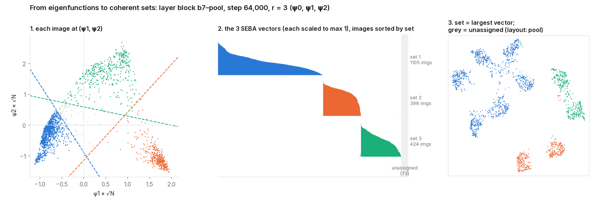
The real thing, for one layer block of the trained network ($r = 3$): eigenvector coordinates (left), the
three SEBA vectors (middle), and the resulting sets on a layout of the last layer (right). Details in
Method: SEBA sets.
The whole pipeline on one slide
Every step is a fixed computation or an eigenproblem; nothing is trained. Only the averaging step looks
at more than one snapshot. The five steps with pictures from real data are in the Overview.
What is assumed, and what is not
Assumed or chosen
Not used
The dot product on activations (cosine, which drops the norm)
No training on top of the network: only fixed computations and eigenproblems
A neighbourhood scale (the kernel rule)
No labels or probes in the construction: labels only colour and check afterwards
A number of groups $r$, guided by gaps in the spectrum
No sparsity assumption on activations: the sparsity is over images
Which layers or checkpoints form a block
Nothing specific to ResNets or transformers: it needs only activations on a fixed set of images
How I check it. Nulls that keep part of the structure and break the rest (shuffling which image is which
across snapshots; a Gaussian surrogate matched to each snapshot's covariance spectrum; SEBA on random subspaces);
baselines (the method on pixels, on the untrained network, and plain PCA + k-means); and a second training seed. See
Appendix B: Baselines and nulls, the Method, or try it in the
Explorer.
Kernel
side panel
Layout
Sets from keeps the selected block and chooses whose sets colour every panel: the method (default), a simpler method run on the same block, the method on other data (pixels, the untrained network, a second training seed), the class labels, or one stored draw of a null. Each source gives hard labels for the same probe images; the side panel shows their sizes, class make-up and images, and their agreement with the method's sets for the same block and $r$, with its permutation value. Sources that do not exist for the current block are greyed out with the reason.
Every source except the method itself was computed for kernel rule 0 (kNN graph, $k = 15$); with another kernel rule only the method is available. Definitions and charts over all blocks: Baselines and nulls.
The kernel rule decides which probe images count as neighbours in each snapshot before the walk $P_c$ is built. With cosine similarity $C$ and distance $d = 1 - C$, a temperature rule uses $K_{ij} = e^{-\kappa d_{ij}}$; $\kappa$ is the inverse temperature. The answer depends on the rule, so it is exposed here rather than hidden.
kNN graph, k = 15 (default): link $i$ and $j$ if either is among the other's 15 nearest neighbours. Rank-based, no $\kappa$; the same neighbourhood size as the UMAP layouts.
per-point perplexity 100 / 300: each image gets its own $\kappa_i$ so that its neighbour distribution has perplexity 100 (or 300, coarser); the t-SNE affinity. Expect results close to the kNN graph.
kNN scale (flat reference): one $\kappa = 1/d_{15}$ per snapshot, about 1.2 in the trained middle layers. A nearly flat kernel: spread, PCA-like modes with weak eigenvalues.
half-mass, calibrated (cautionary): one $\kappa$ per snapshot chosen so the 15 nearest neighbours carry half the kernel mass; $\kappa$ 26 to 43 in the middle layers. Leading modes sit on near-duplicate pairs of images (watch the PN row under the spectrum).
In the trained middle layers the cosine geometry is nearly equidistant, so one temperature per snapshot is either too flat or too sharp; the last two rules fail in those opposite ways and are kept so you can see it. The side panel gives $\kappa$ and the median 15-NN kernel mass over the block's snapshots. More in Method.
Tour
How to use the explorer
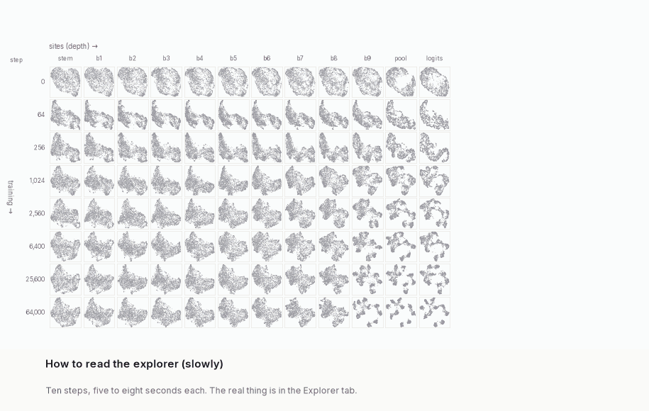
The grid. Rows are checkpoints (training step and validation accuracy), columns are sites, from the stem to the logits. Each panel shows the same probe images at one snapshot (a checkpoint and a site), placed by a 2-d UMAP of that snapshot's activations. Positions are for display only; no number on this page is computed from them.
The block (outlined) is a run of snapshots along one row (a layer block) or one column (a time block); one snapshot alone is a single-snapshot block. Its block operator $\bar M$ averages the lazy walks $M_c$ of its snapshots. The colouring comes from that block only and is painted on every panel, so you can follow the same images to other layers and checkpoints.
The side panel describes the selection: representative images, the eigenvalues of $\bar M$, how much grouping into $k$ groups keeps, retention $\rho_c$ in every snapshot of the row or column, and per-snapshot numbers.
Extras. Tick more options for the kernel rules, per-image diagnostics, image statistics, a second network's layout and the per-snapshot table. Layout: seed 1 places the points by a second network's UMAP while colours still come from the first; spectral places them by a UMAP of each snapshot's diffusion coordinates (the leading eigenfunctions of that snapshot's own walk), so you see the geometry the construction sees. The per-image diagnostics (loss, input-Jacobian norm, gradient alignment) and CIFAR class only colour; none enters the kernel or the sets. Definitions: glossary.
Pick a checkpoint.ClickTap any panel: its row is coloured, each site by its own slice; other rows stay grey.
Pick a block.Drag along a row (sites at one checkpoint) or a column (checkpoints at one site). Click a panel to move the block's end there, shift-click to move its start.Tap a panel to set the block's
Hover a point.The same image is ringed in every panel.Tap a point: the same image is ringed in every panel.
Read the side panel. Groups and their images, eigenvalues, retention.
Experiments
Each experiment below asks one question about what the network does to its activations, says why
the question is worth asking, defines how it is measured and against which controls, and gives one measured answer
with the figure it comes from. Every number is computed at build time from the stored measurements; captions say only
what is plotted.
Unless an experiment says otherwise, the answers are bounded to what was tested: one ResNet-20 trained on CIFAR-10
(seed 0), the probe of 2,000 images, the 8 checkpoints from step 0 to step
64,000, and the default kernel rule. Class labels, losses and gradients appear only as validation; they
never define a kernel or a basis and never choose a parameter. Definitions of every statistic are in
Appendix C; charts not shown here are in Appendix D.
One planned experiment has not been run: an intervention testing whether the boundaries between coherent sets mark
sharp changes in the computation downstream (the harmonicity test). It is listed as an open check where it applies.
What groups of images does the last stage of the network treat alike at the end of training?
Tested: ResNet-20, seed 0, the 2,000-image probe, final checkpoint (step
64,000), kernel rule kNN graph, k = 15, layer block b7..pool read at $r = 4$; the null test is on
the representative block b7..b9 (see Controls). Other ranks under Further evidence, other rules under Caveats.
Why it is interesting
The method looks for groups of inputs that a network processes the same way, without being told what the inputs
are. Each site of the network defines a random walk on the probe images: from an image, step to an image the site
places nearby. A set of images that the walk rarely leaves, at every site of a stretch of layers, is a group that this
stretch of the network keeps together. Such a set describes the network's similarity structure on this probe (under the chosen kernel rule), not a property
of the images alone: it is what the layers treat alike.
The last stage of the network (blocks b7 to b9, then the pooled features that a single linear map turns into the
ten class scores) is the closest the network comes to its decision, so it is the natural first place to look. Three
things are worth knowing: how many images the groups hold and how many fit no group, whether the groups hold across
all the stage's layers or only at one of them, and how they sit against the ten classes the network was trained to
output. If the groups were exactly the classes, the method would only rediscover the labels; if they were unrelated to
the classes, the last stage would be organised by something other than its training target; anything in between says
how the stage arranges the classes.
How I measure it
The block. b7..pool is the layer block of the four snapshots b7, b8, b9 and pool at the final checkpoint:
the average of their four lazy walks $M_c = (I + P_c)/2$, each built from cosine similarities of that site's
activations with kernel rule kNN graph, k = 15 (the construction is in the Method). It stops at pool, the input
of the final linear map.
The sets. SEBA rotates the constant vector and the leading $r - 1$ eigenvectors of the block operator into
$r$ sparse non-negative vectors, one per set; an image belongs to the set whose vector is largest there, and is
unassigned where all $r$ vectors are zero. Membership is read from the stored labels.
Why $r = 4$. $r$ is a resolution, not a number the spectrum picks out. The eigenvalue gaps at which $r = 2$,
$3$ and $4$ cut the spectrum are 0.063, 0.023 and 0.046
(on the $\lambda_P = 2\lambda_M - 1$ scale), and the largest of the first seven gaps, 0.065, is
after λ7; no gap dominates. The answer is given at $r = 4$, and Further evidence shows how
the sets at $r$ = 2, 3, 4, 6, 8 relate, so that the answer does not rest on the choice.
Persistence. For each set's SEBA vector $f$ and each snapshot $c$ of the block, the retention
$f^\top M_c f / f^\top f$, the one-step autocorrelation of the soft SEBA vector under that snapshot's walk. It is
high when one step of the walk mostly moves weight between images where $f$ is large. Only for a binary indicator
$f = \mathbf 1_A$ would it equal the probability that one step from a uniformly chosen member of $A$ stays in $A$; for
the soft vector, how the walk mixes weight inside the support also changes it, so it is not read as the persistence of
the hard set. Its reference is the mean retention of the same vector after relabelling the images
at random, which for a walk that is doubly stochastic with zero diagonal (rule kNN graph, k = 15) is exactly
$\tfrac12 + (S_1^2 - S_2)/(2(N-1)S_2)$ with $S_1 = \sum_i f_i$, $S_2 = \sum_i f_i^2$, the same at every snapshot.
The classes, for validation only. The matched Jaccard of the sets against the ten classes
(Appendix C): the mean Jaccard index of the best one-to-one pairing of sets with classes.
Four sets cannot match ten classes, so it is read against the size ceiling, the largest value any four sets of
these sizes could reach, and against a label-permutation null. The classes play no part in building the sets or in
choosing the block, the rule or $r$.
Controls and nulls
Spectrum nulls on b7..b9. The stored null draws exist for a fixed set of representative blocks chosen before
any class outcome (Appendix B); in the last stage that block is b7..b9, which shares three of
b7..pool's four snapshots. b7..pool has no stored null draws, so no null claim is made about it. On b7..b9:
the trajectory shuffle (20 draws) keeps every snapshot's walk exactly and leaves
b7 unshuffled; it removes the fact that row $i$ is the same image in every snapshot. Leading eigenvalues above its band depend on the images corresponding across the block's snapshots, as far as
this shuffled reference can show.
the spectrum-matched Gaussian (20 draws) keeps each snapshot's feature-covariance
spectrum in expectation; it removes higher moments and every link between snapshots. Leading eigenvalues above its band
are not what data with those covariances give anyway.
Neither null says anything about which images are grouped; they test whether the block operator has leading
structure beyond what these surrogates produce.
Label permutation (1,000 draws) for the matched Jaccard against the classes: permutes the
set labels among the assigned images only, so it keeps the set sizes and which images are unassigned, and removes
which assigned image is in which set.
Retention reference: the random-relabelling mean above, per set.
Answer
At $r = 4$ the last stage holds four sets of 726,
396, 424 and 316 images, with
138 unassigned; each set's soft vector has a one-step autocorrelation (retention) between 0.87
and 0.98 in every snapshot of the block (random-relabelling reference
0.55 to 0.62); against the ten classes the sets reach a
matched Jaccard of 0.46, of a size ceiling of 0.47
(label-permutation null 0.09), and 9 of the
10 classes have a majority of their images in a single set.
Plotted: the number of probe images (colour, $0$ to 200, the images per
class) in each SEBA set of layer block b7..pool (rows: sets in reliability order, then the unassigned images) that
belong to each CIFAR class (columns, validation only); step 64,000, kernel rule
kNN graph, k = 15, $r = 4$. Values: set sizes 726,
396, 424, 316;
138 unassigned; matched Jaccard with the classes 0.46 (size
ceiling 0.47; permutation null mean 0.09, $97.5$th
percentile 0.10).The sets' images
Plotted: set $1$ of layer block b7..pool, step 64,000, kernel rule
kNN graph, k = 15, $r = 4$: the 22 members with the largest SEBA value.
Values: 726 images.Plotted: set $2$, same block and settings. Values: 396
images.
Plotted: set $3$, same block and settings. Values: 424
images.Plotted: set $4$, same block and settings. Values: 316
images.
Further evidence
Is the leading structure what shuffled data would give? This is the strongest alternative to reading the sets
as structure of the network. On b7..b9, the null-tested block, all eight leading eigenvalues
(0.90 down to 0.70) lie above the $95$th percentiles of the
trajectory shuffle (at most 0.39) and of the spectrum-matched Gaussian (at most
0.35), each by at least 0.31. This null-tested claim is
about b7..b9. The spectrum of b7..pool (0.92 down to 0.66) is drawn on
the same scale beside it, with no bands because it has no draws; b7..b9's own $r = 4$ sets match b7..pool's at matched
Jaccard 0.91 (label-permutation $97.5$th percentile 0.16).
Plotted: the eight leading non-trivial eigenvalues of the block operator of layer block
b7..pool (dots, x: $\lambda_1$ to $\lambda_8$), written as $\lambda_P = 2\lambda_M - 1$ from the stored lazy values
$\lambda_M$ (y, $0$ to $1$); step 64,000, kernel rule kNN graph, k = 15. No null draws exist for
this block.Plotted: the same quantity on the same axes for the representative block b7..b9 (black), and the
median (dashed) with the $5$th to $95$th percentile (band) over the draws of the trajectory shuffle (blue,
20 draws) and the spectrum-matched Gaussian (orange, 20 draws);
step 64,000, kernel rule kNN graph, k = 15.
Is "four" doing the work? If the sets at different ranks were unrelated, the answer at $r = 4$ would be one
arbitrary cut. Following every image across $r$ = 2, 3, 4, 6, 8: on the images assigned at both of two
neighbouring ranks (87% to 94% of the probe), the sets at
the coarser rank leave 0.01 to 0.09 of their entropy once the
finer sets are known; counting the unassigned images as one more category, 0.12 to
0.22, against at least 0.99 when the finer labels are permuted. Every finer set except one has
at least 91% of its images that are assigned at the next coarser rank inside a
single coarser set; the exception is set 8 at r = 8, with 54%
inside one set at r = 6. From $r = 3$ to $r = 4$, set 1 at
$r = 3$ divides into set 1 (697 images) and set 4 (313). The finer set with the largest share of images unassigned at the
coarser rank is set 3 at r = 3: 42% of its
images are unassigned at r = 2.
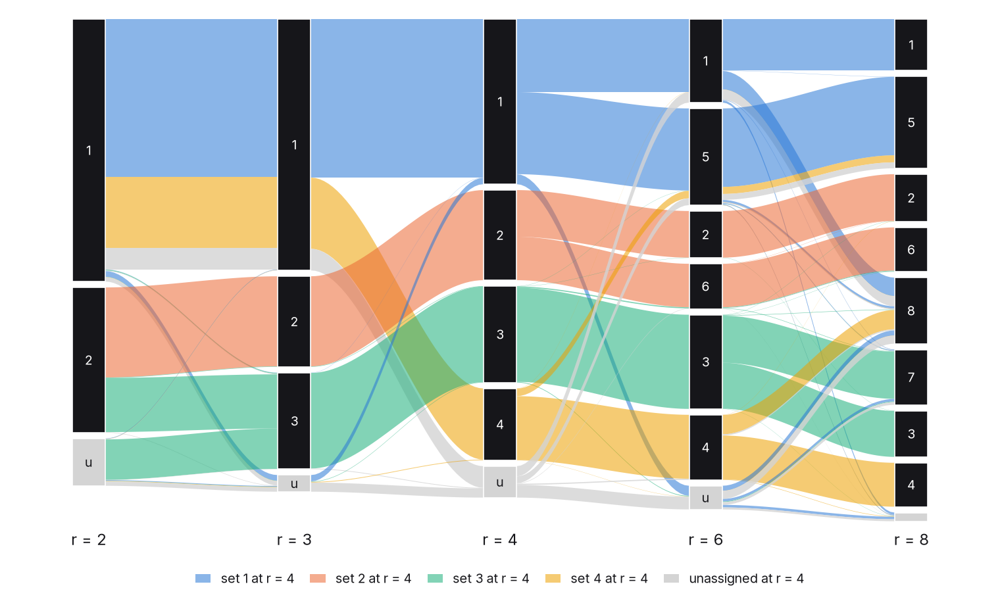
Plotted: the stored SEBA sets of layer block b7..pool at $r$ = 2, 3, 4, 6, 8 (columns;
step 64,000, kernel rule kNN graph, k = 15). Each bar is one set (number: its reliability order;
u, grey: unassigned), its height the number of images; each ribbon carries the images in one set at $r$ and one set
at the next rank, coloured by the image's set at $r = 4$ (grey: unassigned at $r = 4$). Within a column, sets are
ordered by the mean $r = 4$ set index of their members, unassigned last. Values: unassigned images at each
rank 208, 73, 138,
104, 38.Plotted: $H(\text{sets at } r \mid \text{sets at } r') / H(\text{sets at } r)$ (y) for each
pair of neighbouring ranks $r < r'$ (x), from the stored SEBA labels of layer block b7..pool, step
64,000, kernel rule kNN graph, k = 15. Blue: every image, unassigned as its own category. Orange:
only the images assigned at both ranks. Dotted grey: the $2.5$th percentile of the blue quantity over random
permutations of the finer labels (scale reference). Zero means every finer set lies inside one coarser set.
Values: orange 0.01 to 0.09 (largest at
r = 6 given r′ = 8); blue 0.12 to
0.22.
Caveats
The null-tested block is b7..b9, not b7..pool; the transfer to b7..pool rests on their shared snapshots and on the
agreement of their sets, not on a test.
The within-class trajectory shuffle on b7..b9 (a validation null: it uses the labels to keep each image's class
across snapshots) keeps $\lambda_1$ at a median of 0.87 over
20 draws, against 0.90 for the real block. The trajectory-shuffle
test shows that the leading values need the images to correspond across snapshots; it does not show that they need
more than each image's class to correspond (Appendix B).
The block includes pool, one linear map away from the class scores. The sets match b9's own time block over the last
four checkpoints at matched Jaccard 0.90 and b9's single
snapshot at 0.76; this readout comparison and its null are in
Appendix A.
Kernel rule: the same block under the other rules gives sets matching these at
0.91, 0.82 and
0.76, and 0.18 under the half-mass rule
(Appendix A).
Seed: the same block, rule and rank on a second training seed (seed 1, final checkpoint, same probe) gives sets of
788, 393, 432, 299 images with 88 unassigned, matching these at matched
Jaccard 0.92 (label-permutation $97.5$th percentile 0.16). Only
the sets were compared; the null spectra and retention were not recomputed for seed 1.
Retention measures the soft vectors, not the hard sets; the hard sets' own stay-in-set probabilities were not
computed (they need the snapshot operators, which are not in the local archive).
The retention reference is exact only for a doubly stochastic walk with zero diagonal, which is how rule
kNN graph, k = 15 builds each snapshot's walk; it is a mean over relabellings, not a band.
One network, one seed, one probe, the final checkpoint. The set sizes depend on $r$; the unassigned count is part
of the result, not noise to be removed.
Open checks
Trajectory-shuffle and Gaussian null draws on b7..pool itself, so the null claim no longer has to go through
b7..b9. Not run.
Null spectra on the second seed's b7..pool, so the seed check covers more than the sets. Not run.
Whether the boundaries between these sets mark sharp changes in what the later layers compute (the harmonicity
intervention). Not run.
Plotted: the explorer grid in the linked state: one panel per snapshot (rows: checkpoints, with
validation accuracy; columns: sites), each a UMAP layout of the probe images (seed 0), every point coloured by its
SEBA set of layer block b7..pool at the final checkpoint (outlined), $r = 4$, kernel rule
kNN graph, k = 15; grey: unassigned.
Open
b7..pool's sets in the explorer; set $r$ to $3$, $6$ or $8$ to follow the sets across ranks, or colour by class to
compare them with the labels.
When in training does each layer's grouping take its final form?
Tested: ResNet-20, seed 0 (seed 1 only for the operator floor), the 2,000-image probe,
8 checkpoints (steps 0, 64, 256, 1,024, 2,560, 6,400, 25,600, 64,000), kernel rule kNN graph, k = 15, the
single-snapshot operator of each of the 12 sites.
Why it is interesting
Each site of the trained network sorts the probe images into groups it treats alike. An untrained network does this
too: its random filters and shortcut connections already respond to differences in colour and brightness between
images, so its sites have groupings before any learning. Training has to turn the one into the other, and the order in which that happens
says how the network is built. If a site reaches its final grouping before the network is accurate, the grouping is
plausibly an early scaffold that later training works within (an interpretation, not something this
measurement shows); if it changes until the end, the grouping is still being tuned
when accuracy is nearly saturated. If deep sites settle first, the network organises its output end before its input
end; if shallow sites settle first, the reverse.
"Final form" can mean three different things here, and they need not agree: the same groups of images, groups that
line up with a reference partition of the classes, or the same operator. I measure each separately and give three
answers.
How I measure it
(a) Agreement with the final sets (label-free; the headline). For each site and checkpoint I take the $r = 4$
SEBA sets of that snapshot's operator and score them against the same site's sets at the final checkpoint (step
64,000) with the matched Jaccard: pair each set with one final set so that the mean Jaccard overlap is
largest, and report that mean (Appendix C). It is $1$ when the two groupings are the same
and near the permutation null when they share nothing beyond set sizes. The milestone is the first checkpoint at which
the agreement exceeds $0.5$ and the null's $97.5$th percentile, and "settled" is the first checkpoint from which this
holds at every later one. The question is answered by the grouping alone: no label enters. $r = 4$ is the site's
default resolution, fixed before these results; other $r$ are under Caveats. The final checkpoint is compared with
itself and scores $1$ by construction.
(b) Alignment with a class reference (validation). The $r = 2$ sets of each snapshot against the
bipartition {airplane, automobile, ship, truck} / the other six classes. This reference was chosen after
seeing the final two-set split of the late sites, so it is post hoc: it can show when the sets come to line up with
it, not that this is the split the network "should" make. The score is the matched Jaccard; the permutation null keeps
the set sizes; the size ceiling is the largest score any two sets of these sizes could reach. Because the permutation
test is passed already at step $0$ at every site, it cannot date anything, so the milestone is an effect size: the
first checkpoint from which the normalised excess (score − null mean) / (ceiling − null mean) stays at or above
$0.5$. That is half of the excess over chance that the set sizes allow, not half of the site's final alignment.
(c) Distance to the final operator (label-free). For the site's operator at a checkpoint and at the end, the
projector distance $d_k = 1 - \lVert U_k(A)^\top U_k(B) \rVert_F^2 / k$ between the spans of their leading $k$
non-constant eigenvectors ($0$ = same span; chance 0.9980 at $k = 4$). It is read against the
seed floor: $d_k$ between seed 0 and seed 1 at the same site at the final checkpoint: the observed distance between
two training runs that differ only in their random seed. It is one pair of seeds, a reference for scale, not a
measured spread of run-to-run variation. A site has settled from the first checkpoint after which its distance to
its own final operator stays at or below its floor. A leading-$k$ span is only well defined when the eigenvalue cut
$k \mid k+1$ is reproducible on resampled probes; I use $k = 4$, whose cut is resolved in
92% of the seed $0$ snapshots (against 38% at $k = 9$),
and drop distances at unresolved cuts.
Controls and nulls
Permutation nulls for (a) and (b): the earlier grouping's labels shuffled over the images, sizes and the
number of unassigned images kept. They say what agreement set sizes alone produce. In (a) the null's
$97.5$th percentile is at most 0.16 before the final checkpoint, so the $0.5$ threshold is
the binding condition.
Step $0$, the untrained network, is a control in all three: any agreement there comes from the
architecture, the random initialization and the images, not from learning.
Pixel statistics for (b): the strongest alternative to "the sets line up with the classes" is that they line
up with colour or brightness, which differ between these classes in the probe. For every snapshot and each of twelve
pixel statistics, in both orientations, I put the images at the top of the ranking into one set and those at the
bottom into the other, with the same set sizes as the SEBA sets, and leave the middle unassigned (the same unassigned
count). Each split is scored against the reference and the best is kept. This is the best of the tested two-tail
splits, not of all splits by one statistic, and it is chosen with the labels, so it is a reference rather than a
null.
Seed floor for (c), defined above.
Answer
(a) Each site's $r = 4$ sets first agree with its final sets at step 1,024 at stem–b2 and b5–logits; step 2,560 at b3 and b4, and stay
above the threshold from then on except pool (above it at every later checkpoint only from step 25,600); there is no depth order. (b) The $r = 2$ sets
reach half of the possible excess over chance against the class reference from step 64 at b7–logits; step 1,024 at b6; step 2,560 at b3–b5; never at stem–b2: deep sites
first. (c) The leading four-mode spans come within the observed between-seed distance (and stay there) from
step 2,560 at stem; step 6,400 at b1; step 25,600 at b2, b3 and b5; at b6–logits the distance falls below it only at the final
checkpoint, and the floor cut is
unresolved at b4.
Plotted: matched Jaccard (y) between each site's $r = 4$ SEBA sets at a checkpoint and the same
site's sets at step 64,000, against training step (x, symmetric-log axis), kernel rule
kNN graph, k = 15; one line per site, light (stem) to dark (logits). Grey band: the envelope over sites of the
permutation null's $2.5$th to $97.5$th percentile. Grey line: the milestone threshold $0.5$. Dotted black: validation
accuracy on the ten classes at the same checkpoints (display only). Values: step $0$, 0.18
to 0.31 (above the null's $97.5$th percentile at 12 of
12 sites); step $25{,}600$, 0.70 to
0.84; validation accuracy 65% at step $1{,}024$,
73% at step $2{,}560$, 92% at the end.
The first milestone falls at the checkpoints where validation accuracy is 65% and
73%, well before it saturates. At step $25{,}600$, the last measured checkpoint before the
end, agreement with the final sets was 0.70 to 0.84. Some sites
dipped along the way, and sites that fell back below the threshold after first passing it are:
pool (0.49 at step 2,560, 0.42 at step 6,400). The final value of $1$ is a self-comparison, and nothing was measured between steps
$25{,}600$ and 64,000 (the interval that contains the learning-rate drops at steps
32,000 and 48,000), so I did not measure when the remaining differences disappeared within it.
Further evidence
(b) Alignment with the class reference. At step $0$ every site already beats the maximum of its
permutation null (12 of 12 sites), but with a normalised excess of
only 0.14 to 0.21. At the final checkpoint it ranges from
0.42 to 0.47 at stem, b1 and b2, which never reach the milestone, up to
0.98.
Plotted: normalised excess (score − null mean) / (ceiling − null mean) (y) of each site's $r = 2$
SEBA sets against the bipartition {airplane, automobile, ship, truck} / other six, against training step (x,
symmetric-log axis), kernel rule kNN graph, k = 15; one line per site, light (stem) to dark (logits); $0$ = the
permutation-null mean, $1$ = the size ceiling. Grey line: the milestone threshold $0.5$. Values: step $0$,
0.14 to 0.21; final, 0.42 to
0.98.
Is it a simple pixel statistic? This panel tests the strongest single-statistic alternative: the best of the tested two-tail splits by one pixel
statistic, with the same set sizes and unassigned count as the sets (other pixel information is not tested). At step
$0$ that split matches the reference at least as well as the sets do at 12 of
12 sites (at b9, 0.46 against 0.40). The
sets score above it at every later checkpoint from step 64 at stem–logits; at b9 they end at
0.89 against 0.49.
Plotted: for site b9, matched Jaccard (y) with the bipartition {airplane, automobile, ship,
truck} / other six against training step (x, symmetric-log axis): the $r = 2$ SEBA sets (blue), the permutation null
mean (grey dashed; shaded: its $2.5$th to $97.5$th percentile), the size ceiling (grey dotted), and the best of the tested
two-tail splits by one of twelve pixel statistics (either orientation; top and bottom of the ranking at the SEBA sets'
sizes, the middle unassigned with the same unassigned count; orange dashed; chosen with the labels).
Values: step $0$: sets 0.40, null mean 0.30,
ceiling 0.85, pixel split 0.46; final: sets
0.89, null mean 0.32, ceiling
0.91, pixel split 0.49.
Where the reference ranks: among all $511$ ways of splitting the ten classes in two, ordered by their match with
the $r = 2$ sets, it is first at 12 of 12 sites at the final
checkpoint and between 6th and 11th at step $0$. This
describes the post-hoc reference; it is not a test that it was the split to look for, and it is not corrected for
having been picked after seeing the sets (chart in Appendix D).
(c) Distance to the final operator. At step $0$ every operator is far from its final form
(0.68 to 0.96). At step $25{,}600$ the sites that settle only at the end
are at 0.096 to 0.322, against seed floors of
0.073 to 0.160: each is still farther from its final operator
than the two seeds are from each other.
Plotted: projector distance $d_4$ (y) between each site's operator at a checkpoint and the same
site's operator at step 64,000, against training step (x, symmetric-log axis), kernel rule
kNN graph, k = 15; one line per site, light (stem) to dark (logits). Grey band: the seed floor ($d_4$ between seeds
$0$ and $1$ at the final checkpoint), from its lowest to its highest value over the sites whose floor cut is resolved
(0.073 to 0.204; unresolved at b4).
Gaps: the cut $4 \mid 5$ is unresolved at the checkpoint or at the end (8 of
84 points: b2 at step 6,400; b4 at step 1,024; b5 at step 256; b6 at step 1,024; b7 at step 6,400; b8 at step 2,560; b8 at step 6,400; logits at step 6,400).
Caveats
Only 8 checkpoints were measured, a factor of two and a half to four apart, so every
milestone is "between the previous checkpoint and this one". The learning-rate drops (steps
32,000 and 48,000) both fall between the last two checkpoints.
The thresholds ($0.5$ in (a) and (b), the seed floor in (c)) are conventions; the charts show the whole
trajectories.
Milestone (a) depends on the resolution: the first-milestone step ranges over sites from
0 to 64 at $r = 2$, 64 to 25,600 at $r = 3$,
1,024 to 25,600 at $r = 6$ and 1,024 to 6,400 at $r = 8$.
(c) at $k = 3$, the span the $r = 4$ sets are cut from (cut resolved in 96% of the
snapshots): stem 6,400; b1 6,400; b2 6,400; b3 25,600; b4 6,400; b5 25,600; b6 64,000 (final only); b7 64,000 (final only); b8 25,600; b9 64,000 (final only); pool n/a (floor cut unresolved); logits 64,000 (final only).
The seed floor uses one other seed at one checkpoint; a site whose distance stays just above it may be within the
spread of more seeds.
The class reference in (b) is post hoc and is used only to validate; the two-tail pixel-statistic split is chosen with
the labels and is a reference, not a null; splits other than the tested two-tail ones were not searched.
Open checks
Place the milestones more finely, from the checkpoints saved between the measured ones. Not run.
Repeat (a) and (b) on a second seed, to see whether the absence of a depth order in (a) and the deep-first order
in (b) reproduce. Not run.
Plotted: the explorer grid in the linked state: one panel per snapshot (rows: checkpoints, with
validation accuracy; columns: sites), each a UMAP layout of the probe images (seed 0), every point coloured by its
$r = 4$ SEBA set of b9's single-snapshot operator at the final checkpoint (outlined), kernel rule
kNN graph, k = 15.
Open b9's
final sets in the explorer; move the block to an earlier checkpoint of the same site to see the sets this
experiment compares with them.
Where along depth does the network redraw its grouping?
Tested: ResNet-20, seed 0 (seed 1 only for the floor), the 2,000-image probe, the final
checkpoint (step 64,000) and step $0$, kernel rule kNN graph, k = 15, the single-snapshot operators of
neighbouring sites (11 adjacent pairs, stem→b1 to pool→logits).
Why it is interesting
In a residual network most layers add an update to what they receive, and the shortcut passes the rest through
unchanged, so neighbouring sites could treat images alike almost everywhere. If most sites carry the grouping forward
and a few redraw it, those few are where the network changes what counts as similar. That gives a map of the network
by what it does rather than by how it is drawn. The architecture suggests one candidate answer: the stage boundaries,
where the feature map is downsampled and the number of channels doubles. If the grouping is redrawn elsewhere, the stage boundaries alone do not explain where; the untrained network
(step $0$) shows whether the pattern changes with training.
How I measure it
Two measures of change between a site and the next one, drawn on one chart so that they can be compared pair by
pair.
Sets. The matched Jaccard between the $r = 4$ SEBA sets of the two sites' single-snapshot operators (pair
each set with one set of the other site so that the mean Jaccard overlap is largest; Appendix
C). It is plotted as $1 - $ matched Jaccard, so that $0$ means the same grouping and larger means more change.
Operators. The projector distance $d_3 = 1 - \lVert U_3(A)^\top U_3(B) \rVert_F^2 / 3$ between the spans of
the two operators' three leading non-constant eigenvectors ($0$ = same span; chance 0.9985). SEBA
at $r = 4$ rotates the constant and $\psi_1, \psi_2, \psi_3$ into four sets, so $d_3$ compares exactly the spaces the
sets are cut from, without the hard assignment of images to sets. (The generator checks that the alignment study's
operators are the archive's: their leading eigenvalues agree at every site.) A span is only well defined when the cut
$3 \mid 4$ is reproducible on resampled probes; where it is not, the value is drawn as a separate dot and not used.
The two measures answer the same question at different grain. The sets are what a reader sees in the explorer, but
they are hard: a set can be cut differently while the span it comes from barely moves. The operator distance has no
cut into sets. A pair that stands out in both is unlikely to be only an artefact of turning eigenvectors into sets (the two
measures share the same spectral input, so this does not rule out every artefact).
Controls and nulls
Permutation null (sets): site $s$'s set labels shuffled over the images, sizes and unassigned count kept;
it gives the agreement that set sizes alone produce (at most 0.16, $97.5$th
percentile).
Step $0$ (both): the same measures on the untrained network. It shows what the architecture and the images
give without training; it does not separate what the shortcuts, the random filters or the image statistics each
contribute. A pair that changes at step $0$ as much as after training is not evidence of a learned redrawing.
Seed floor (operators): $d_3$ between seeds $0$ and $1$ at the same site and checkpoint, how far two
training runs that differ only in their seed end up (0.066 to 0.184 at
the final checkpoint over the sites whose floor cut is resolved; unresolved at pool).
It is one observed pair of seeds, a reference for scale rather than a measured range of run-to-run variation.
A second seed (sets): the final $r = 4$ sets of seed $1$ (kernel rule kNN graph, k = 15), compared
between neighbouring sites in the same way, and with seed $0$'s sets at the same site.
Answer
At the final checkpoint, b2→b3 has both the lowest set agreement and
the largest resolved three-mode projector distance: the sets of neighbouring sites agree least
at b2→b3 (0.43; range 0.43 to
0.88 at b9→pool, null at most 0.16), and the operators change most at
b2→b3 ($d_3$ = 0.380), then at
b8→b9 (0.307) and b6→b7
(0.294); in the untrained network both single out b9→pool
instead (sets 0.33, $d_3$ = 0.482), which after training is the
pair whose sets agree most (0.88) and whose $d_3$ is
0.036 (cut unresolved).
Plotted: change between neighbouring sites (y) for each adjacent pair $s \to s+1$ (x), kernel rule
kNN graph, k = 15. Blue: $1 -$ matched Jaccard between the two sites' $r = 4$ SEBA sets; shaded: $1 -$ the
permutation null's $97.5$th to $2.5$th percentile at the final checkpoint. Orange: projector distance $d_3$ between
the two sites' operators; shaded: the two sites' seed floors ($d_3$ between seeds $0$ and $1$ at the final
checkpoint), lower to higher, over the sites whose floor cut is resolved. Solid: final checkpoint (step
64,000); dashed: step $0$ (control); blue dotted: $1 -$ matched Jaccard of seed $1$'s sets at the final
checkpoint. Dots: $d_3$ where the cut $3 \mid 4$ is unresolved in either
operator, a sensitivity value (orange: final checkpoint, at b9→pool and pool→logits; grey: step $0$, at
pool→logits). The stage boundaries are b3→b4 and b6→b7. Values: mean
set agreement over the adjacent pairs 0.76 at step $0$ and
0.71 at the end; at the stage boundaries, set agreement
0.68 and 0.61 and $d_3$ 0.140 and 0.294.
The two profiles rise and fall together along depth: the Spearman rank correlation between $1 -$ matched Jaccard
and $d_3$ over the pairs with a resolved cut is 0.92 at the final checkpoint
(9 pairs) and 0.98 at step $0$ (10 pairs).
The largest change after training lies inside a stage (stage 1), not at a stage
boundary.
Further evidence
Against the seed floor. At the final checkpoint, $d_3$ exceeds the seed floors of both sites at
b2→b3, b3→b4, b6→b7 and b8→b9 (4 of the
9 pairs with a resolved cut). At every other resolved pair the neighbouring
operators differ by no more than the larger of the two sites' seed floors. No further panel is needed: the lead
figure carries both measures, both checkpoints, the null and the floor.
A second seed. In seed $1$ the least-agreeing adjacent pair of $r = 4$ sets is also
b2→b3 (0.405; the others up to
0.83, null at most 0.16). The two seeds' sets at the same
site agree 0.685 at b2 and 0.735 at b3 (range over sites
0.57 at stem to 0.89 at
logits; null at most 0.16), so within each seed b2 and b3
differ more than each site differs between the seeds.
The cut. At $k = 4$, where every adjacent cut is resolved at the final checkpoint
(11 of 11), the order of the two largest operator changes is
reversed: b8→b9 (0.407), then
b2→b3 (0.362); at step $0$ the largest is again
b9→pool. For seed $1$ at $k = 3$ the largest is b2→b3
(0.424), then b8→b9 (chart in Appendix D).
Caveats
The two measures are on different scales; compare where along depth they are high or low, not their heights.
Only two seeds were measured; one seed pair gives an observed reference, not a spread of run-to-run
variation.
The operator ranking uses only the leading three-mode span and excludes pairs whose cut is unresolved (at the final
checkpoint b9→pool and pool→logits); it says nothing about the rest of the spectrum.
Which of the operator changes is largest depends on the cut ($k = 3$ against $k = 4$, above). The pair the sets
single out is among the two largest in both.
The rank correlation is over 9 pairs and is descriptive.
Only adjacent sites at two checkpoints are in the lead figure; every pair of sites, every checkpoint and blocks of
two and three sites are in Appendix D.
Open checks
The harmonicity intervention (harmonic.py, REFRAME_PLAN.md): whether the boundaries of the
sets mark sharp changes in the downstream computation. Not run.
Plotted: the explorer grid in the linked state: one panel per snapshot (rows: checkpoints, with
validation accuracy; columns: sites), each a UMAP layout of the probe images (seed $0$), every point coloured by its
$r = 4$ SEBA set of b3's single-snapshot operator at the final checkpoint (outlined), kernel rule
kNN graph, k = 15.
Which layer's structure does a whole-path block reflect?
Tested: ResNet-20, seed 0, the 2,000-image probe, final checkpoint (step
64,000), kernel rule kNN graph, k = 15, the 11 averaged blocks that start at
one site and end at the logits; the other kernel rules under Further evidence.
Why it is interesting
Each site of the network gives a random walk on the probe images, and the slowest-changing functions of that walk
say which images the site treats alike. A block averages the walks of a run of consecutive sites, so its slowest
functions say which images are treated alike along the whole run. The block from a site to the logits asks
this of everything the network does to an image after that site.
An average over many layers could come out as a compromise that no single layer draws. It could also come out
looking like one particular layer, which would mean that the whole-path summary is dominated by one stretch of the network (by resemblance,
not causation), and that reading that one layer would be almost as good as reading the block. If the layer it resembles is the
first layer of the block, the block adds little; if it is a later layer, the block is reporting a split that the
start of the path does not yet draw. This experiment measures which single layer each such block resembles, and how
closely.
How I measure it
The quantity. For the averaged block $a \to$ logits (the mean of the lazy walks $M_c = (I + P_c)/2$ of the
sites $c = a, \dots,$ logits) and for each single site $c$, I take the leading $k$ nontrivial eigenvectors of each and
compute the span overlap $\lVert U_k(\text{block})^\top U_k(c) \rVert_F^2 / k$: the mean $\cos^2$ of the $k$
principal angles between the two $k$-dimensional spans. It is $1$ when the spans coincide and
0.0015 at $k = 3$ for random spans orthogonal to the constant ($k/(N-1)$). It is the
complement of the projector distance of Appendix C. The eigenvectors are the stored ones
(layer_64000.npz, vecs × scale); nothing is refitted.
Why spans, and why $k = 1$ and $k = 3$. A single eigenvector is only defined up to rotation when its
eigenvalue is close to the next one, so a single-mode match ($k = 1$) means something only where the cut between
modes $1$ and $2$ is resolved. The span of the leading three ($k = 3$) does not depend on how modes inside it are
rotated, only on the cut after mode $3$. I state the span answer first and the single-mode answer where its cut is
resolved.
When a cut counts as resolved. For a single site I use the reproducibility score $\mathrm{span}_k$ of the
spectral-alignment measurement: rebuild the site's operator on two overlapping, label-free subsamples of the probe and
take the smallest $\cos^2$ principal angle between the two rebuilds' leading-$k$ spans; the cut is resolved when
$\mathrm{span}_k \geq 0.5$ (definition in Appendix C). An averaged block was never
rebuilt on subsamples, so for it I use a proxy fixed before looking at the overlaps: its cut counts as unresolved when
its eigenvalue gap $\lambda_k - \lambda_{k+1}$ is no larger than the largest gap at which a single site's cut already
failed (0.0021, at b9, cut 2|3, $\mathrm{span}$
0.49; cuts $k = 1$ to $4$, same checkpoint and rule).
Stated up front, by construction. The block's leading function maximises the mean retention over the sites
of the block, and site $a$'s own leading function maximises retention at $a$, so the block's leading function retains no more at $a$
than $a$'s own does (it does at 11 of 11 start sites). That the block
differs from its start site is therefore expected; the information is in which site it resembles.
Controls and nulls
Chance: random spans give an overlap of 0.0015 at $k = 3$, far below every measured
value, so the comparison between sites, not against chance, carries the answer.
The start site (the diagonal of the figure): how much the block keeps of the layer it starts at.
The medoid of the block: the site of the block whose own span overlaps most, on average, with those of all
the other sites in the block (unresolved sites are excluded both as candidates and from the average). This is the strongest alternative to "one stretch dominates the resemblance": an
average could simply land on whichever site is most typical of the run. Where the closest site differs from the
medoid, the block is not just reporting the most typical site. Disagreement with the medoid does not establish
which sites dominate the average; it only rules out this one simple description.
The overlaps carry no sampling bands: no second seed or probe of these blocks is stored. Differences of a few
hundredths between neighbouring sites should not be read as a ranking.
Answer
The leading three-dimensional span of every block starting from stem
to b4 is closest to b7's (overlap
0.85 to 0.88, against
0.30 to 0.54 with the start site itself), and that of every
block starting from b5 onwards is closest to b9 and logits among the
resolved sites (overlap 0.87 to 0.99); the single leading
eigenvector, whose cut is resolved everywhere here, gives b6 for stem→logits and b1→logits; b7 for b2→logits to b5→logits; pool for b6→logits to pool→logits.
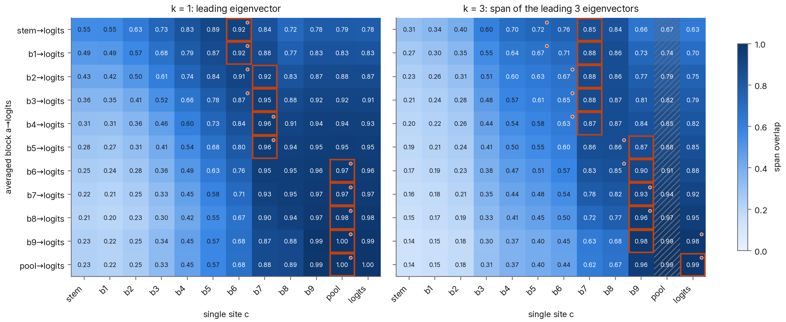
Plotted: span overlap (mean $\cos^2$ of the $k$ principal angles; colour and printed value)
between the leading $k$ nontrivial eigenvectors of the averaged block $a \to$ logits (rows, $a$ = stem to pool) and
of the single site $c$ (columns), at the final checkpoint (step 64,000), kernel rule
kNN graph, k = 15. Left: $k = 1$. Right: $k = 3$. Hatched: the cut $k \,|\, k+1$ is unresolved for the site
($\mathrm{span}_k < 0.5$) or for the block (gap proxy). Orange box: the resolved site of largest overlap in the
row. Orange dot: the row's medoid. Values: hatched at $k = 3$: pool
($\mathrm{span}_3$ 0.48); none at $k = 1$ (single-site $\mathrm{span}_1$ at least
0.95, smallest block gap 0.0071); smallest block gap at $k = 3$
0.0025 (pool→logits); $k = 3$ closest sites by row:
b7 for stem→logits to b4→logits; b9 for b5→logits to b9→logits; logits for pool→logits.
The match is not exclusive: for the blocks starting from stem to
b4 the sites within two hundredths of the closest are b7, b8
(largest margin over the runner-up 0.02). For the later starts, the raw largest
overlap is with pool (up to 0.99), whose $3 \,|\, 4$ cut is
unresolved, so I do not report it as the match. The medoid coincides with the closest site at
9 of 11 starts for $k = 1$ but only
3 for $k = 3$: for the early starts the medoid is b5 and b6,
with overlap 0.63 to 0.72, so at $k = 3$ the block is not
simply its most typical site. This does not say which sites dominate the average.
Further evidence
The kernel rule changes the answer. The rule decides how each site's activations become a walk, and so how
much of each site's leading contrast its walk retains. Repeating the measurement under each of the 5 kernel rules
moves the closest site for the block stem $\to$ logits: at $k = 3$, kNN graph, k = 15: b7; per-point perplexity 100: b8; per-point perplexity 300: b6; kNN scale: logits; half-mass, calibrated: b6; at $k = 1$,
kNN graph, k = 15: b6; per-point perplexity 100: b7; per-point perplexity 300: b7; kNN scale: b9; half-mass, calibrated: b4. Under kNN scale the walks at stem to b9 retain much less of their
leading mean-zero contrast than pool and logits do: their leading lazy eigenvalues are
0.52 to 0.60, against
0.95 and 0.99. Every site stays put with the same
probability ($\tfrac12$); a lazy eigenvalue near $0.5$ means the non-lazy part of the walk keeps almost none of that
contrast after one step, and near $1$ that it persists. As a limiting illustration only: a site whose lazy walk
retained every mean-zero function at exactly $0.5$ would add the same amount to every candidate's mean retention and
could not change which function the average ranks first. The early sites here are near that limit, not at it, so
this is consistent with the change of answer under this rule but does not show that the late sites determine the
block's leading mode. Under rule
kNN graph, k = 15 the early sites' leading eigenvalues are 0.93 to
0.96. Which layer a block reflects is therefore a property of the network and the
kernel rule together.
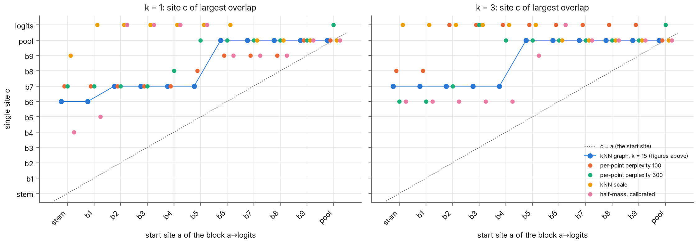
Plotted: for each averaged block $a \to$ logits (x, start site $a$), the single site $c$ (y) of
largest span overlap, without resolution flags (the reproducibility scores exist for rule kNN graph, k = 15
only), at the final checkpoint. Left: $k = 1$; right: $k = 3$. Colours: the 5 kernel
rules (blue with a line: rule kNN graph, k = 15, the rule of the lead figure); markers offset sideways to
avoid overlap. Dotted: $c = a$, the start site.A worked example: the block b1 → logits against b1, and its retention profile
The block b1 → logits has leading eigenvalue 0.91. Its leading
eigenvector has $|\cos|$ 0.70 with b1's own and
0.96 with
b6's.
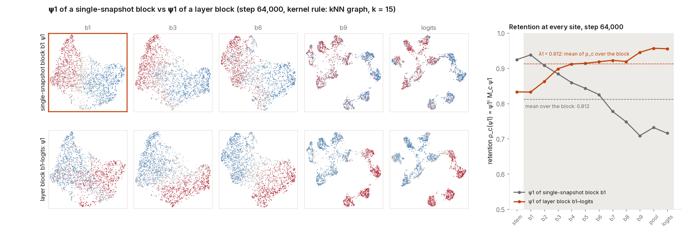
Plotted: step 64,000, kernel rule kNN graph, k = 15. Top row: $\psi_1$ of the
single site b1; bottom row: $\psi_1$ of the averaged block b1 → logits; each painted on the UMAP layouts of b1,
b3, b6, b9 and logits (red positive, blue negative, scaled by $\max_i |\psi_1(i)|$). Right: retention
$\rho_c(\psi_1) = \psi_1^\top M_c \psi_1$ of each at every site, block shaded; dashed lines are the means over the
block. Values: single-site $\psi_1$: 0.94 at b1,
0.71 at b9, mean
0.81; block $\psi_1$: retention
0.83 at b1 and 0.96 at
pool.Plotted: retention $\psi_1^\top M_c \psi_1$ (lazy scale; y) at each site $c$ (x) of the leading
eigenvector $\psi_1$ of the averaged blocks stem, b2, b4, b6, b8 and pool $\to$ logits (solid, light to dark by start
site), and each site's own leading lazy eigenvalue $\lambda_1(c)$, the largest retention any function can have at
$c$ (dashed); final checkpoint, kernel rule kNN graph, k = 15.
Caveats
The block's resolution is a proxy (an eigenvalue gap calibrated on single sites), not a subsample rebuild of the
block; a gap and a reproducibility score do not track each other closely across single sites (see the cut
diagnostics in Appendix D).
The answer depends on the kernel rule (Further evidence); the resolution flags exist for rule
kNN graph, k = 15 only.
Only blocks ending at the logits, the averaged (not product) operator, the final checkpoint, one seed and one
probe. The comparison of the averaged and product operators is in Appendix A.
No sampling band: the overlaps of neighbouring late sites differ by a few hundredths, below any resolution this
measurement has shown.
Open checks
Rebuild the averaged blocks on the same two label-free subsamples as the single sites, to replace the gap proxy
with $\mathrm{span}_k$ for blocks. Not run (needs the activations, which are not stored locally).
The same overlaps on the second seed and over training. Not run.
Blocks that end before the logits (every $a \to b$), to see whether the closest site is always inside the run's
last stage. Not run.
Plotted: the explorer grid in the linked state: one panel per snapshot (rows: checkpoints, with
validation accuracy; columns: sites), each a UMAP layout of the probe images (seed 0), every point coloured by the
leading eigenvector $\psi_1$ of the averaged block b1 → logits at the final checkpoint (outlined), kernel rule
kNN graph, k = 15.
Do the images grouped alike in activations also have similar loss gradients?
Tested: ResNet-20, seed 0, the 2,000-image probe, all 8
checkpoints (steps 0 to 64,000), kernel rule
kNN graph, k = 15; groupings: the coherent sets ($r = 4$) of the time block at site b9 over all
checkpoints; $r = 2$ and the other sites under Further evidence and Caveats.
Why it is interesting
The activations at a site say which images the network currently treats alike. The loss gradient of an image says
something different: the direction of a hypothetical plain gradient step on that one probe image, with the network in
evaluation mode, across every weight of the network. Two images whose gradients point the same way would push the
weights in similar directions (up to the size of each push); two with opposite gradients would pull them apart.
If the images that a site groups together also had aligned gradients beyond what their labels already give, the
groups found in the activations would also be groups for this gradient signal. If not, this statistic detects nothing
in the groups beyond their class make-up. This experiment measures which of the two holds for the tested grouping and
statistic.
How I measure it
The gradients. For each probe image $i$ and checkpoint, $g_i$ is the gradient of the image's cross-entropy
loss with respect to all trainable parameters of the network (computed per image with
vmap(grad(loss)) in measure_v2.py), and the stored quantity is the cosine
$\cos(g_i, g_j)$ for every pair (gradgram_<step>.npy). The cosine compares directions only: the
length of $g_i$ mostly tracks how large the image's loss is. These gradients belong to the whole network and do not
depend on any site; a site enters only through the grouping that is scored. The gradients use the labels (through the
loss), so this is a validation measurement: nothing here feeds back into the sets.
The statistic. For a grouping of some images, the mean gradient cosine over pairs of distinct images in the
same group minus the mean over pairs in different groups (pair-weighted, so larger groups weigh more; images the
grouping leaves unassigned are left out of both means). It is positive when images grouped together have more aligned
gradients than images grouped apart. Every grouping below is scored on the same assigned images, those the sets
assign (1,867 of 2,000 at $r = 4$), so that differences between
groupings are not differences of population.
The grouping. The coherent sets of the time block at b9 over all 8 checkpoints: one
labelling of the probe, fixed over training, so the same grouping is scored against the gradients of every
checkpoint. b9 is the last convolutional site; groupings from the other sites' time blocks, scored against the same
gradients, are in Appendix D. $r = 4$ is the site's default number of sets; $r = 2$ is reported beside it.
Neither is chosen from the gradients or the labels.
Why a class-built reference is needed. In logit space the cross-entropy gradient of image $i$ is
$p_i - e_{y_i}$: it always contains the image's own label. Two images of different classes therefore push their own
class's logit in opposite directions however alike they are otherwise, so the label term can favour groupings that
follow the classes. A grouping that merges classes is therefore compared with a label-built grouping that merges the
same classes: the class-union grouping, each class given wholly to the set that holds most of its images,
scored on the same assigned images. It splits no class. It is a reference, not a ceiling: nothing bounds the sets'
value by it for whole-parameter gradient cosines. The parameter gradients
$g_i = J_i^\top (p_i - e_{y_i})$, with $J_i$ the Jacobian of the logits, carry this label term through the
network.
A separate, label-free span comparison. This is a different quantity on different objects, and it cannot
settle the loss-gradient comparison above or its nulls. It uses label-free sample kernels built from the same
Jacobians (SPEC_DOT.md §2): the
NTK, $\operatorname{tr} J_i J_j^\top$, and the GGN kernel, which weights each image's Jacobian by the
square root of the cross-entropy Hessian in the logits, $\operatorname{diag}(p_i) - p_i p_i^\top$ (it uses the
predictions, not the labels). The Jacobian features are centred over the probe before cosine normalisation (the
"cos" form; kernels_modal.py, double-centring of the Gram, then row normalisation), turned into an operator by the same kernel
rule, and its leading modes are compared with each site's leading modes by span overlap: the mean squared cosine of
the principal angles between the two spans of $r$ modes ($1$ for identical spans, $0$ for orthogonal ones). This compares
the leading structure of the two geometries, not the sets.
Controls and nulls
Permutation among the assigned images (200 draws). It keeps the set sizes
and the unassigned images and removes any relation between the sets and the images. A value above its band shows
only that the sets are not arbitrary with respect to the gradients.
Permutation within each class (200 draws). Within each class, the set labels
of its assigned images are shuffled among them. It keeps each class's count in every set, so every set's class make-up
is exactly preserved, and keeps the unassigned images; it removes which images of a class the sets put together. It
tests this one scalar contrast, given the assigned images and the class-by-set counts. A value above its band would
show that the sets' allocation of images within classes raises the contrast; inside means no departure detected by
this statistic; below means the actual allocation gives less contrast than shuffled allocations. Neither inside nor
below rules out within-class gradient structure that this aggregate misses.
The class-union grouping's own permutation null (same construction). The ratio of the sets' value to the
class-union value is quoted only at checkpoints where the class-union value is above the $97.5$th percentile of this
null; it is at all 8 checkpoints for both $r$.
For the span overlaps, $r/N$ (here 0.002 at $r = 4$) is the expected overlap of
two random $r$-dimensional spans. It is a scale reference, not a control: the site operators and the gradient
kernels come from the same network on the same images, so they share structure for reasons that have nothing to do
with training dynamics (see Caveats), and no null for that was run.
Answer
At the final checkpoint, on the 1,867 images they assign,
b9's sets have a within-minus-between gradient cosine of 0.014, above the
permutation band ($97.5$th percentile 0.001) but below the class-union grouping on
the same images (0.030, ratio 0.46) and below
the class-count-preserving permutation band (0.018 to
0.021). At $r = 4$ the observed contrast is below that band at every measured
checkpoint after initialization, and inside it at initialization; at $r = 2$ it is above the band at initialization
and at the final checkpoint (Further evidence).
Plotted: within-minus-between cosine of per-image cross-entropy loss gradients over all
trainable parameters (y), at each checkpoint (x, steps, symlog), on the 1,867
images assigned by the $r = 4$ coherent sets of the time block b9 over all 8 checkpoints
(kernel rule kNN graph, k = 15). Solid blue: those sets. Solid orange: their class-union grouping on
the same images (reference). Dashed blue with band: the sets with labels permuted within each class (null; mean and
$2.5$ to $97.5$ percentiles of 200 draws). Dashed grey with band: the sets with labels
permuted among the assigned images (null, same percentiles). The sets are fixed; only the gradients change from
checkpoint to checkpoint. Values: step 0: sets
0.270, class union 0.357, within-class band
0.269 to 0.271; step
64,000: 0.014, 0.030,
0.018 to 0.021; ratio of sets to class
union 0.46 to 0.76 over checkpoints.
Further evidence
With two sets the final checkpoint differs. At $r = 2$ (1,795 assigned
images) the sets score 0.0070 at the final checkpoint against
0.0060 for their class union (ratio 1.17) and a
within-class band of 0.0055 to 0.0060: above
it, as at step 0, and below it at the other
6 checkpoints. So with two sets the contrast is below the class-count-preserving band at those
6 checkpoints and above it at the final one; the chart is in Appendix D.
A separate label-free comparison. The answer is measured with gradients that contain the label, which can
favour groupings built from classes. The label-free GGN and NTK span comparison asks a different question (do the
leading spans of the two geometries overlap?) and cannot adjudicate the loss-gradient nulls; it is kept because it is
the only check here with no label in the gradient side. At the final checkpoint b9's leading four modes
overlap 0.40 with the GGN-cos kernel's and 0.83 with
the NTK-cos kernel's, against 0.002 for random spans; at the stem they are
0.13 and 0.14. Without the label, the late sites'
leading modes still overlap the gradient-side kernels' far above the random-span scale; part of the NTK overlap is
built in (see Caveats), and this compares leading spans, not the sets' gradient alignment.
Plotted: span overlap (mean squared cosine of principal angles; y) between each site's leading
four modes (single snapshot, x, step 64,000, kernel rule kNN graph, k = 15, the site
kernel in its default cosine form) and the leading four modes of a label-free sample kernel at the same checkpoint,
turned into an operator by the same rule. Green: GGN-cos. Yellow: NTK-cos. Dotted grey: $r/N$, the expected overlap
of two random spans (scale reference, not a control). Values: at $r = 10$, b9
0.38 (GGN-cos) and 0.66 (NTK-cos), $r/N =$
0.005.
Caveats
One grouping. The lead figure scores the time block at b9 only. Groupings from every site's time block,
scored against the same whole-network gradients at the final checkpoint, range from
0.004 to 0.015; all
12 are above their permutation band, 8 are
below their within-class band and 0 above it. That chart varies the
grouping, not the gradients, and is not a layer-by-layer measurement.
Scale over training. All values shrink over training, and so does the alignment of per-image gradients
in general: the mean cosine over all pairs falls from 0.064 to
0.005, and the ten classes' within-minus-between value (all
2,000 images) from 0.953 to
0.172. Comparisons are made within a checkpoint, not across checkpoints.
The NTK contains a site's geometry. In the trace NTK, the final layer's weights contribute a term
proportional to the dot product of the pool activations, so part of the overlap at pool
and the sites just before it is built in. In the GGN kernel the same term is multiplied by
$\operatorname{tr}(H_i^{1/2} H_j^{1/2})$, which depends on the predictions, so the link is weakened but not
removed. Neither comparison has a null beyond the $r/N$ scale reference.
Near-ties in the spectra. The eigengap at the cutoff ($\lambda_r - \lambda_{r+1}$) is
0.0015 for the GGN-cos operator and 0.0093 for NTK-cos at
$r = 4$, and 0.0059 for b9 (lazy eigenvalues). How stable the four-mode spans are
under resampling of the probe was not tested.
Site kernel form. With the dot (Euclidean) site kernel of Appendix A instead of the cosine one, b9's
overlaps are 0.37 (GGN-cos) and 0.80
(NTK-cos); the per-site chart is in Appendix D.
The loss-gradient kernel through the same span comparison (label-dependent) overlaps b9's leading four modes
by 0.40; it is kept apart from the label-free comparison and charted in
Appendix D.
One network, one seed, one label-stratified probe, 8 checkpoints, kernel rule
kNN graph, k = 15.
Open checks
Score the sets against the GGN or NTK kernels directly (within-minus-between on those kernels, with the same
nulls), so that the label-free comparison is made on the same groupings as the lead figure. Not run.
A null for the span overlaps that keeps the shared network: for example, modes of a site at one checkpoint against
the gradient kernels of another. Not run.
Resample the probe to see whether the four-mode spans of the gradient-side kernels are stable. Not run.
Plotted: the explorer grid in the linked state: one panel per snapshot (rows: checkpoints,
with validation accuracy; columns: sites), each a UMAP layout of the probe images (seed 0), every point coloured by
its set among the $r = 4$ coherent sets of the time block at b9 over all 8 checkpoints
(outlined), kernel rule kNN graph, k = 15: the grouping scored in this experiment.
How much of each layer's walk can k groups keep, and does the spectrum prefer a k?
Tested: ResNet-20, seed 0, the 2,000-image probe, final checkpoint (step
64,000) unless stated, kernel rule kNN graph, k = 15; single snapshots at every site and the
66 layer chains; $k = 2, \dots, 32$ groups. Other rules and checkpoints under Caveats.
Why it is interesting
The method turns each site of the network into a random walk on the probe images: from an image, step to an
image the site treats as similar, or stay put. Chaining sites gives a walk from one layer to a later one. The
simplest description of such a walk is a partition: sort the images into $k$ groups and keep only which group the
walk starts in and which group it ends in. A partition with few groups is easy to read; the question is what it costs.
This experiment asks two things. First, how much of the dependence between where the walk starts and where it
ends survives when only $k$ groups are kept, measured against all the dependence there is, against the most that any
$k$ groups could keep, and against what arbitrary groups keep. Second, whether the walk itself points to a number of
groups: if its spectrum has a clear gap after $k$ modes, a $k$-group description is singled out by the operator,
without anyone choosing $k$. If there is no such gap, any $k$ is a choice of resolution, and the first answer gives
its cost.
How I measure it
The coupling. Every operator here is doubly stochastic, so it defines a joint distribution of a start image
$X$ and an end image $Y$: for a single snapshot $M = (I + P)/2$, $X$ is an image and $Y$ where one step of the lazy walk
takes it; for a layer chain $Q = M_b \cdots M_a$, $X$ is the image at site $a$ and $Y$ the image the chained walk
reaches at site $b$. With uniform weight on the images, the dependence between $X$ and $Y$ is measured by the
$\chi^2$ mutual information
$$ I(X;Y) = \lVert Q \rVert_F^2 - 1 = \sum_{i \ge 2} \sigma_i^2 ,$$
where $\sigma_1 = 1 \ge \sigma_2 \ge \dots$ are the singular values of $Q$ (near independence it is proportional to Shannon's
mutual information: to leading order the Shannon value in nats is half of it). Everything below is exact, from the operators
(SPEC_COARSE.md §1–2; tests in test_coarse.py).
Retained information. For a partition $c$ of the start images, the one-sided value $I(c(X); Y)$ is the
dependence left when only the start group is known. For a chain with partitions $c$ at site $a$ and $c'$ at site $b$,
the two-sided value $I(c(X); c'(Y))$ is the dependence between start group and end group: the information a $k$-group
description of both layers keeps. Single snapshots use the one-sided value (the operator is symmetric, so both sides
agree); chains use the two-sided value, because the question for a chain is whether groups at one layer map to
groups at the other.
Ceiling. No partition into $k$ nonempty groups keeps more than
$F_k = \sigma_2^2 + \dots + \sigma_k^2$ (Eckart–Young: the grouped operator has rank at most $k$); the same holds
two-sided with $k$ the smaller number of groups. Every partition is compared with the ceiling at its own number of
nonempty groups $k_\text{eff}$, which can be smaller than the number asked for.
Why spectral $k$-means is the candidate. For a partition of the start images, the one-sided information it
loses is exactly the within-group variance of the full spectral embedding
$\Psi(x) = \sqrt N\,(\sigma_2 v_2(x), \sigma_3 v_3(x), \dots)$ (an identity, not an approximation). $k$-means on the
top $k - 1$ coordinates of $\Psi$ is the truncated version of that problem: the direct attempt to keep the most
one-sided information, not guaranteed to reach the ceiling. For chains it is a heuristic: each end is clustered
separately on its own truncated embedding (right singular vectors at the start, left at the end), and the two
partitions are then scored as a pair; the identity does not cover that two-sided score. It is compared with SEBA (sparse bases of the leading singular vectors, at the
ranks $r \in \{2, 3, 4, 6, 8, 10, 12, 16\}$ stored in the coarse archive, each image assigned to its largest SEBA
value) and with PCA $k$-means (on the top principal components of the activations; no operator involved).
Headline quantity. The retained information as a share of the total $I(X;Y)$, shown with the ceiling and
the random null at the same $k$. The ratio $I / F_{k_\text{eff}}$ (efficiency) is shown only as a tightness check, for
the reason under Controls.
The gap criterion (coarse_summary.block_gap, fixed before these results and never fitted to
labels). A gap after $k$ modes (constant included) points to $k$ groups. For chains the size of a gap is
$\sigma_k / \sigma_{k+1}$. For single snapshots it is $(1 - \sigma_{k+1}) / (1 - \sigma_k)$, because the lazy half
squeezes every $\sigma$ towards one, so ratios of $\sigma$ say little; $1 - \sigma$ is the decay rate of the mode, and
ratios of rates are unchanged by the laziness. Over $k = 2, \dots, 32$ the largest ratio is a clear gap if it is at
least $1.15$ and more than $1.1$ times the runner-up; otherwise there is no clear gap.
$k$ is not chosen here: every chart runs over $k$. The value $k = 10$ quoted in the Answer is where the chains
that pass the gap criterion below have their largest ratio, and the classes, which also number ten, are scored there only as validation.
Controls and nulls
Random balanced partitions (mean of four draws) give what $k$ arbitrary groups keep. In a single snapshot
they keep a nonzero amount, most of it from the stay-put half of $M$ (an image that stays put is always in its own
group). For chains they are independent balanced endpoint partitions, drawn separately at the two ends; they
keep almost nothing two-sided, but only because their two ends share no membership, so they do not control for what
two matching partitions keep through the stay-put path alone.
The lazy uniform chain $U^L$ (for chains; $U = \tfrac12\left(I + \tfrac{1}{N-1}(J - I)\right)$, one factor
per site of the chain, as coarse.uniform_lazy), scored with the same spectral partitions at
both ends. It keeps the stay-put path and the overlap between the two end partitions and removes all geometry, so
what the real chain keeps above it is not explained by shared membership and laziness. At $k = 10$ it reaches a
median 0.6% of the real chain's two-sided value over all chains, and at most
16.3%, for a pair of adjacent sites.
The total and the ceiling bound the retained information from above. Most of a single snapshot's total is
out of reach of any small partition: the stay-put half alone gives every snapshot $I(X;Y) \ge N/4 - 1$
= 499.
Why efficiency is only a tightness check. On the lazy uniform walk, where every other image is equally
likely and there is no geometry at all, every partition attains the ceiling exactly (a test in
test_coarse.py). A ratio near one therefore says that a partition is tight for this operator, not that the
operator has groups; the retained amount against the total and the null is what answers the question.
Classes and predictions are scored as validation partitions at their $k_\text{eff}$. They never choose
$k$, a mode or a rule.
Answer
With ten groups at the final checkpoint, spectral $k$-means keeps
1.5% of the b9 snapshot's total (ceiling 1.6%, random
0.45%) and, two-sided, 12.8% of the chain b9→logits'
total (ceiling 14.2%; in absolute terms 6.85, against
0.135 for the same partitions on the lazy uniform chain and 0.0011 for
independent balanced endpoint partitions); 4 chains,
b7→logits, b8→logits, b9→pool and b9→logits, pass the stated gap criterion at $k = 10$, all at the final checkpoint, while the single snapshots' clearest gap is after the first nontrivial mode at
11 of 12 sites.
Plotted: single snapshot of b9, final checkpoint, kernel rule kNN graph, k = 15: one-sided
retained $\chi^2$ information $I(c(X); Y)$ as % of the total $I(X;Y)$ (y) against the number of groups $k$ (x).
Dotted: the ceiling $F_k$. Blue: spectral $k$-means. Dashed grey: random balanced partitions (mean of four draws).
Orange markers: SEBA at each stored rank. Dark and pink markers: the classes and the network's predictions
(validation). Every partition is placed at its number of nonempty groups. Values: total
527.6; at $k = 10$ spectral $k$-means 8.05 against a ceiling of
8.41; classes 1.4%, predictions
1.5%; ceiling at $k = 32$ 4.6%.Plotted: layer chain b9→logits, same checkpoint and rule: two-sided retained $\chi^2$
information $I(c(X); c'(Y))$ as % of the chain's total $I(X;Y)$ (y) against $k$ (x), with partitions of the same
kind at both ends. Lines and markers as in the left panel, except: dashed grey is independent balanced endpoint
partitions, and dashed blue is the same spectral partitions scored on the lazy uniform chain $U^L$ (reference;
stored partitions exist for $k \le 16$ only). The ceiling uses the smaller number of nonempty groups of the two
ends. Values: total 53.3; at $k = 10$ spectral $k$-means
6.85 against a ceiling of 7.58 and
0.135 on $U^L$; classes
11.1%, predictions 12.6%; ceiling at $k = 32$
25.8%.
Further evidence
Does the spectral partition come close to the ceiling at every site, or only at b9? This is the tightness
check, kept because the lead shows one site. At $k = 10$ the efficiency of spectral $k$-means ranges from
0.81 to 0.96 over the single snapshots, against
0.27 to 0.36 for random partitions; the ceiling itself is
only 1.3% to 1.7% of the total at every site.
Plotted: efficiency $I(c(X); Y) / F_{k_\text{eff}}$ (y) of each partition at $k = 10$ for the
single snapshot at each site (x), final checkpoint, kernel rule kNN graph, k = 15. Blue: spectral $k$-means;
orange: SEBA at $r = 10$; green: PCA $k$-means (baseline); dashed grey: random balanced partitions; dark and pink
markers: classes and predictions (validation). A tightness diagnostic: on the lazy uniform walk every partition has
efficiency one.
Where and when does the spectrum have a clear gap? This answers the second half of the question across all
blocks, not only the worked example. Over all 96 single snapshots (sites by
checkpoints) the clearest gap is after the first nontrivial mode in 88, elsewhere in
1, and there is no clear gap in 7. At the
final checkpoint, the runner-up position is ten at b9, pool and logits. Among the
66 chains at the final checkpoint, 4 have a clear gap
after ten, 14 after the first nontrivial mode, and 48
have none; a chain with a clear gap after ten occurs only at step 64,000.
Plotted: for the single snapshot at each site (rows) and checkpoint (columns), kernel rule
kNN graph, k = 15: the number of groups $k$ after which the spectrum has a clear gap on the $1 - \sigma$
scale (colour); grey where the criterion finds no clear gap.Plotted: for each layer chain from start site $a$ (rows) to end site $b$ (columns), kernel rule
kNN graph, k = 15: the number of groups $k$ after which $\sigma_k / \sigma_{k+1}$ has a clear gap (colour);
grey where there is no clear gap and below the diagonal. The slider steps through the checkpoints (initially the
final one).
Is the gap after ten a threshold effect? A smoothly decaying spectrum can cross a fixed ratio at many
places. In each chain on the list the ratio at ten is the largest by a margin, while the ratios at other $k$ stay near
one: for b9→logits, $\sigma_{10}$ =
0.834 against $\sigma_{11}$ = 0.630, a ratio of
1.32, with the runner-up 1.06 (after
11). The same drop is the bend in the ceiling of the right lead panel.
Plotted: the ratio of consecutive singular values $\sigma_k / \sigma_{k+1}$ (y) against $k$ (x),
for each chain with a clear gap after ten at the final checkpoint, kernel rule kNN graph, k = 15 (one colour per
chain; b9→logits thicker). Horizontal line: the threshold $1.15$ of the gap criterion (the criterion also asks
for more than $1.1$ times the runner-up).
Caveats
The single-snapshot shares are small partly by construction: the stay-put half of $M$ puts at least
499 of each total (here 524 to
540) into which exact image the walk is at, which no partition into few groups can keep;
at most 4.9% of any snapshot's total is within reach of $32$ groups. Scored on
$P = 2M - I$ (no stay-put half), the same partitions of the b9 snapshot keep 6.5%
against a ceiling of 6.9% and 0.5% for random partitions.
Chain totals shrink with length, so shares are not comparable across lengths: the median adjacent chain has total
159 with ten groups within reach of 3.1%; stem→logits has total
0.24 with 97% within reach.
The gap verdicts depend on the kernel rule. Across the 5 rules at the final
checkpoint, 1 to 12 chains have a clear gap
after ten; b9→logits has one under 5 of them. The single snapshots' gap
after the first nontrivial mode holds at 2 to
11 of the sites, depending on the rule.
$\chi^2$ information weights fine structure more than Shannon information; the two rank partitions alike near
independence but give different values. The gap thresholds are fixed conventions. One network, one seed, one probe.
Open checks
The same measures with Shannon mutual information on the same partitions, to see whether the shares change
order. Not run.
A null for the gap statistic itself (the largest consecutive ratio of a spectrum from a kernel on shuffled or
Gaussian activations of the same size). Not run.
The gap search on a second seed and on the dot-product kernel. Not run.
Plotted: the explorer in the linked state: one panel per snapshot (rows: checkpoints, with
validation accuracy; columns: sites), each a UMAP layout of the probe images (seed 0), every point coloured by its
group in the spectral $k$-means partition with $k = 10$ of the start side of the chain b9→logits at the final
checkpoint (outlined), kernel rule kNN graph, k = 15.
Open
the chain b9→logits in the explorer; in its coarse-graining card, switch between start side, end side and
two-sided, click a $k$ to colour the grid by that partition, and select a single snapshot to see its curve.
Is the constructed walk through the layers approximately Markov under the tested partitions?
Tested: ResNet-20, seed 0, the 2,000-image probe, final checkpoint (step
64,000), kernel rule kNN graph, k = 15, $k = 10$ blocks per site; other rules and $k = 4$ under
Caveats.
Why it is interesting
The method turns each site of the network into a random walk on the probe images: from an image, step to an image
the site treats as similar, or stay put. Chaining the sites gives one walk through the whole network, and that walk is
Markov by construction: where it goes at the next site depends only on the image it is at now.
Now record only which of $k$ groups the walk is in at each site. If the current group were enough to predict the
next group, the network's depth would have a small, readable description: a $k \times k$ table of transition
probabilities between groups for each pair of neighbouring sites, instead of one operator on all
2,000 images per site. If the exact image still matters once its group is known, the groups leave out
something the walk uses to move images on. This experiment measures how far the tested groupings are from such a
description, and checks how much of that distance a walk with no geometry at all would also produce.
How I measure it
The process. $Z_s$ is the image the walk is at after site $s$; it starts uniform over the probe and moves by
the site's lazy walk $M_s = (I + P_s)/2$, so the pair $(Z_s, Z_{s+1})$ has coupling $M_{s+1}/N$. Each site carries a
partition $c_s$ of the images into $k$ blocks, and the coarse process is $C_s = c_s(Z_s)$. Every quantity
below is exact, computed from the operators, in nats (specification: SPEC_COARSE.md §6; tests in
test_markov.py).
One-step defect fraction $\delta_s / I(Z_s; C_{s+1})$ with
$\delta_s = I(Z_s; C_{s+1} \mid C_s)$: of the information the exact image carries about the next block, the share that
the current block does not carry. It is zero exactly when every image in a block of $c_s$ has the same distribution
over next blocks (strong lumpability of the step $s \to s+1$), which is the condition for that step to be a closed
$k$-state transition. A positive defect rules out closure of the step; on its own it does not show that earlier blocks
would improve the prediction. Dividing by $I(Z_s; C_{s+1})$ makes pairs of sites with different amounts of next-block
information comparable; because the denominator differs between walks too, the unnormalised defect (in nats) is
reported beside the fraction. Where the denominator is zero the fraction is undefined and is drawn as a gap.
Chapman–Kolmogorov (CK) error, the standard check for Markov state models: for sites $a < b$ the true
coarse transition $P(C_b \mid C_a)$ against the product of the one-step coarse transitions from $a$ to $b$, as a
mass-weighted total-variation distance. It is shown beside the distance of the true transition from independence
($P(C_b)$ for every starting block), which is how much there is to get wrong. Values are averaged over the start sites
$a$ with the same horizon $h = b - a$. A nonzero CK error rules out exact first-order Markov behaviour of the
coarse process.
Coarse memory $I(C_{s+2}; C_s \mid C_{s+1}) / H(C_{s+2} \mid C_{s+1})$: the share of the uncertainty about
the next block, given the current block, that the previous block removes. A positive value shows that the coarse
process is not exactly first-order Markov: the past block improves the prediction.
The partitions. (i) Each site's own partition: spectral $k$-means of that site's single-snapshot
operator, the method's own coarse description of each site. (ii) One shared partition: b9's spectral
$k$-means used at every site, fixed in the specification before any result. It separates "the partition changes from
site to site" from "the walk moves images between blocks". (iii) The CIFAR classes used as the partition at
every site, for validation only. PCA $k$-means and random partitions are in Appendix D.
Why $k = 10$. At the final checkpoint the chains b7→logits, b8→logits, b9→pool and b9→logits have a clear spectral gap after
$k = 10$ modes (the gap criterion in Appendix C), so $k = 10$ is the number of blocks
the late operators' spectra single out. It is not chosen from the labels; that the classes also number ten is what
lets them serve as a validation partition at the same $k$.
Controls and nulls
The lazy uniform walk $U = \tfrac12\left(I + \tfrac{1}{N-1}(J - I)\right)$ at every site, with exactly the
same partitions. It keeps one mechanism of the constructed walk: an image stays put with probability
$\tfrac12$ at each site. It removes the geometry of the moves that leave an image: on $U$ every other image is
equally likely.
With partitions that differ from site to site, the stay-put mechanism alone produces a defect: images of one
current block that stay put land in whichever next blocks the next site's partition assigns them. The comparison is
of fractions with different denominators: the image carries a median 1.55 nats about
the next block on the constructed walk and 0.60 on the control, and the median
defect is 0.60 against 0.26 nats. A similar
defect fraction on the control therefore shows that this mechanism alone loses a similar fraction of the
next-block information, not a similar amount. It does not split the real defect into a stay-put part and a geometry
part; the two walks are different processes and the quantities do not add across them.
With one partition shared by every site the control is exactly zero, by construction: on $U$ the distribution of
the next block depends only on the current block. A nonzero defect with a shared partition therefore comes from the
constructed walk sending images of one block to the other blocks in different proportions.
The three measures answer two questions. The one-step defect asks whether each step is closed on the blocks
(lumpability). Coarse memory and the CK error ask whether the coarse process, as it is, behaves as a first-order
Markov chain; positive values rule that out. Only adjacent triples and pairwise transitions are tested, so values near
zero would not certify either property.
Answer
Closure. No tested step is closed on the blocks. With each site's own partition the
median defect fraction over the 11 adjacent pairs is 0.40
(0.60 nats) on the constructed walk and 0.44
(0.26 nats) on the control; with b9's partition at every site it is
0.15 (0.20 nats; range
0.05 to 0.20), where the control is exactly
zero. Markov behaviour. Neither tested coarse process is exactly first-order Markov: the previous block
removes a median 0.053 of the remaining uncertainty with the own partitions (control
0.003) and 0.008 with b9's partition (control exactly zero),
and the CK error two sites ahead is 0.069 and 0.018. The
shared partition reduces every measured error but removes none.
Plotted: the one-step defect fraction $\delta_s / I(Z_s; C_{s+1})$ (y) for each adjacent pair
of sites $s \to s+1$ (x, stem→b1 to pool→logits), at the final checkpoint (step 64,000),
kernel rule kNN graph, k = 15, $k = 10$. Blue: each site's own spectral $k$-means partition. Orange: b9's
spectral $k$-means partition at every site. Solid: the constructed walk. Dashed: the lazy uniform walk $U$ with the
same partitions (control; the orange dashed line is zero at every pair). Dark dots: the classes as the partition at
every site, constructed walk (validation). Undefined values would be gaps; there are none here.
Values: own partitions 0.08 to 0.47
(control 0.06 to 0.51); at b9→pool and
pool→logits 0.10 and 0.08 (control 0.09 and 0.06);
classes median 0.15.
Further evidence
Do small one-step defects add up over many sites? A one-step defect says nothing directly about how wrong
the chained coarse model is between distant sites, and a large chained error could simply reflect a transition that
is far from independence. The CK error answers the first, and the distance from independence gives its scale. Chaining
each site's own one-step coarse transitions misses the true transition two sites ahead by
0.069 in total variation (distance from independence 0.510;
control 0.021), and from stem to logits, 11 sites apart, by
0.113 against a distance from independence of 0.162
(control 0.000). With
b9's partition at every site the errors are 0.018 and
0.074 (distances from independence 0.536 and
0.165; control exactly zero).
Plotted: Chapman–Kolmogorov error (solid and dashed) and the distance of the true coarse
transition from independence (dotted), both as mass-weighted total variation (y), against the horizon $h = b - a$
in sites (x), each the mean over the start sites $a$ with that horizon (one pair at the largest $h$); final
checkpoint, kernel rule kNN graph, k = 15, $k = 10$. Blue: each site's own spectral $k$-means partition;
orange: b9's partition at every site. Dashed blue: CK error on the lazy uniform walk with the own partitions
(control). The control for b9's partition is zero at every horizon and is not drawn.
Memory and defect against $k$ and over training are in Appendix D.
Caveats
The stay-put mechanism is part of the constructed walk ($M_s = (I + P_s)/2$), so every absolute value includes
it. The control shows what fraction of the next-block information it alone loses with the own partitions; it is
not subtracted.
Neighbouring own partitions agree only partly (median normalised mutual information 0.56),
which is what the stay-put mechanism turns into a defect.
Figures use kernel rule kNN graph, k = 15. Across the 5 kernel rules the median
defect fraction ranges from 0.23 to
0.55 with the own partitions (control
0.26 to 0.55) and from
0.00 to 0.15 with b9's
partition.
At $k = 4$ the median defect fraction is 0.37 with the own partitions (control
0.37) and 0.12 with b9's partition.
Only adjacent triples and pairwise transitions are tested; a process can pass these and still have longer
memory. One network, one seed, one probe, the final checkpoint.
Open checks
Choose the partitions jointly across sites to minimise the measured defect, rather than one site at a time, and
compare that optimum with b9's partition. Not run.
Histories longer than one step back (memory of order two and more). Not run.
The same measures on the product operator and on a second seed. Not run.
Plotted: the explorer grid in the linked state: one panel per snapshot (rows: checkpoints,
with validation accuracy; columns: sites), each a UMAP layout of the probe images (seed 0), every point coloured by
its block in the spectral $k$-means partition of b9's single-snapshot operator at the final checkpoint (outlined),
$k = 10$, kernel rule kNN graph, k = 15: the shared partition of this experiment.
In the tested ResNets, do different seeds and depths go through matching sequences of operators?
Tested: ResNet-20, ResNet-32 and ResNet-56, two training seeds each (6
networks, one recipe), the 2,000-image probe, the eight checkpoints (steps 0, 64, 256, 1,024, 2,560, 6,400, 25,600, 64,000), kernel
rule kNN graph, k = 15, single-site operators, cuts $k = 3$ and $k = 9$; the other kernel rule under
Caveats.
Why it is interesting
The method turns every site of a network (the stem, each residual block's output, the pooled features, the logits)
into an operator on the same probe images: a walk that says which images that site treats as similar. Going through a
network is then a sequence of operators, one per site. Two networks trained from different random seeds, or
ResNet-20 and ResNet-56, have different weights and, for different depths, different numbers of sites. They
can still pass the images through the same sequence of operators, with the deeper network taking more sites for each
step of it.
If they do, that sequence is reproducible across the tested runs (one recipe, one probe, one architecture family) rather than a
property of one run, and the
operators of one network describe the others too. Where they do not, individual runs have freedom: two equally
accurate networks can organise the images differently along depth. This experiment measures how closely the tested
networks' sequences match, against how closely two seeds of the same network match and against what matching a
scrambled order of sites would give.
How I measure it
Distance between two snapshots. A snapshot is one site of one network at one checkpoint; its operator is
the explorer's lazy walk $M = (I+P)/2$ (Method). Every network sees the same probe images, so two
operators can be compared directly, with no matching of images. The projector distance
$d_k(A,B) = 1 - \|U_k(A)^\top U_k(B)\|_F^2 / k$ compares the spans of the two operators' leading $k$ eigenfunctions
after the constant one: it is zero when the spans are equal and close to one for unrelated spans (definitions in
Appendix C).
Matching two sequences. For two networks at one checkpoint, $D$ is the site × site matrix
of $d_k$. Dynamic time warping (DTW) finds the monotone path from (stem, stem) to (logits, logits) that minimises the
summed distance along it, allowing one site of one network to match several consecutive sites of the other. The
DTW cost is that minimum divided by the total step weight, the same for every path, so it is the average distance
along the best monotone path. A low cost is a low average distance along that path; it does not establish that every
site has a close counterpart, since a few poorly matched sites can sit under a low average. DTW is a comparison tool used on these distances, not part of the construction.
Is the order found or imposed? DTW returns a monotone path whatever the matrix. Beside it I take, for every
site, its nearest site in the other network with no order constraint; the inversion fraction is the share of
site pairs whose nearest matches come in strictly the opposite order. Repeated matches are allowed and do not count
as inversions (all sites matched to one site would score zero), so I also report how many distinct sites the nearest
matches reach. Few strict reversals together with many distinct targets mean the unconstrained matches themselves
run in order.
Which cut, and how reliable it is. A leading-$k$ span is only well defined when the eigenvalues $k$ and
$k+1$ are separated. For every snapshot the operator was rebuilt on two overlapping two-thirds subsets of the images
(no labels used) and $\mathrm{span}_k$ is the smallest $\cos^2$ principal angle between the two rebuilds'
leading-$k$ spans; the cut is unresolved for a pair of snapshots when $\mathrm{span}_k < 0.5$ in either.
At an unresolved cut, $d_k$ depends on how near-equal modes happen to be split. Every DTW cost below is given with
the share of its path whose cut is unresolved. I report two cuts. $k = 3$ is the largest cut in the grid
resolved in at least nine tenths of the 120 final-checkpoint snapshots
(97%). $k = 9$ is the cut the alignment figures open at; it is resolved at
pool and logits in every network, but in only 45% of all final snapshots. The
diffusion-kernel distance $h_{16}$, which weights every mode by $\lambda^{16}$ instead of cutting, is the cut-free
check.
Which pairs. Two seeds of one depth form a pair of their own (three pairs). Across depth, each depth pair has
four seed pairings; summaries use the two different-seed pairings only, because networks trained with the
same seed draw the initial weights of the stem and first blocks identically (six pairings in all). Same-seed
pairings are in Appendix D.
Controls and nulls
Block-permutation null. The optimal DTW cost recomputed after randomly permuting the residual-block sites
of one network, with stem, pool and logits fixed (1,000 permutations). It keeps every distance value
and the fixed endpoints and removes the order of the blocks. A cost below the null's fifth percentile shows an advantage over globally shuffled blocks. Because the shuffle
also moves blocks between stages, it does not by itself separate the order of the stages from a finer
correspondence within each stage, and it does not show that individual sites correspond one to one.
Stage-preserving shuffle. The same re-optimisation after shuffling the residual blocks of the deeper
network only within their own stage (1,000 draws, computed for this experiment from
the stored distance matrices, cross-depth pairings at the final checkpoint). It keeps which stage every block is in
and removes the order of blocks inside a stage, so a cost below it shows that the within-stage order matters too.
Seed floor. The DTW cost between the two seeds of one depth at the same checkpoint. A cross-depth cost at
the floor means that changing depth moves the sequence about as much as changing the seed does. With two seeds per
depth the floor is one value, not a distribution.
Constant-matrix reference. On a matrix whose every entry is the mean of $D$, every path costs that mean.
It says how much of the cost any path would get.
Untrained reference. The same comparison at the first checkpoint, before any training, so that order produced by the architecture before any
training is not attributed to learning.
The CKA distance on the centred-cosine Grams is a standard baseline, not an output of the method; it is in
Appendix D.
Answer
At the final checkpoint, with $k = 3$, the DTW cost across depth is
0.103 to 0.141 over the
6 different-seed pairings, against seed floors of
0.099 to 0.104 (at most
1.35 times the larger floor of the two depths) and null fifth percentiles of
0.195 to 0.287, with
3% to 11% of each path at an unresolved
cut (two seeds of one depth: 4% to 13%); with $k = 9$ it is 0.192 to 0.222 against
floors of 0.176 to 0.182 and null fifth
percentiles of 0.273 to 0.358, with
71% to 79% of each path unresolved. At both
cuts every one of the 9 different-seed comparisons, across seeds and across depth, is
below its null's fifth percentile from step 1,024 on; at the final
checkpoint none of the 1,000 null draws of any of them reaches the observed cost.
Plotted: normalised DTW cost (y) against training step (x, symmetric-log), ResNet-20 against
ResNet-56, projector distance $d_3$, kernel rule kNN graph, k = 15. Solid blue and orange: the two
different-seed pairings (ResNet-20 seed 0 – ResNet-56 seed 1 and ResNet-20 seed 1 – ResNet-56 seed 0), each with its block-permutation null as a band
(fifth to ninety-fifth percentile). Dashed: the seed floors of ResNet-20 and ResNet-56. Values (step
64,000): costs 0.107 and 0.141; null fifth percentiles
0.263 and 0.287; seed floors 0.104 (ResNet-20) and 0.104 (ResNet-56). Before training (step $0$): costs
0.344 and 0.652, null fifth percentiles 0.365 and 0.607.Plotted: share of each DTW path on the left whose cut is unresolved in either snapshot (y)
against training step (x, symmetric-log), same pairings and colours; solid $k = 3$, dashed $k = 9$.
Values (step 64,000): 9% and 3% at $k = 3$,
76% and 77% at $k = 9$.
Before training (step $0$), 3 of the 9 comparisons are already
below their null's fifth percentile at $k = 3$ (3 at $k = 9$): a cost below the null is
not by itself evidence of training, which is why the step from which every comparison stays below it is the quantity
reported. The pairs of ResNet-20 with ResNet-32 are below the null in both pairings from
step 256 on, those with ResNet-56 from step
1,024, and ResNet-32 with ResNet-56 from step
1,024.
Further evidence
Does the answer depend on the small cut? A cut of three modes compares only the coarsest part of each
operator, and the match could be weaker in more modes. At $k = 9$ the cost across depth is at most
1.22 times the larger seed floor, but most of each path crosses an unresolved
cut, so these are sensitivity values. The cut-free diffusion-kernel
distance $h_{16}$ gives 0.103 to 0.119 across
depth against seed floors of 0.094 to 0.115 and
null fifth percentiles of 0.173 to 0.238
(at most 1.20 times the larger floor), below the null in every comparison from
step 1,024 on.
Plotted: as the left panel of the lead figure (ResNet-20 against ResNet-56, different-seed
pairings, null bands from the fifth to the ninety-fifth percentile, seed floors dashed, kernel rule
kNN graph, k = 15) with the projector distance $d_9$. Values (step 64,000): costs
0.222 and 0.200; null fifth percentiles 0.358 and 0.341; seed floors
0.182 (ResNet-20) and 0.177 (ResNet-56); unresolved share of the paths 76% and 77%.
Is the order imposed by DTW? A monotone path exists for any matrix, so a low cost alone could come from DTW
forcing an order onto distances that have none. The unconstrained nearest matches give an order check that does not assume monotonicity: at the final
checkpoint their inversion fraction (strict reversals only) is at most 0.0046 at
$k = 3$ and 0.0152 at $k = 9$ in every cross-depth pairing. The shallower network's
sites have nearest matches on distinct sites of the deeper one for 61% to
83% of them at $k = 3$ (72% to
92% at $k = 9$), and the deeper network's nearest matches reach
67% to 92% of the shallower network's sites
(72% to 92%). Against the stage-preserving
shuffle, the DTW cost is below the fifth percentile (0.117 to
0.160 at $k = 3$, 0.208 to
0.250 at $k = 9$) in 6 of the
6 pairings at $k = 3$ and 6 at $k = 9$,
and no draw reaches the observed cost: the order of blocks within each stage contributes to the match, not only the
order of the stages. The DTW cost is well below the
constant-matrix reference (0.483 to 0.509 at
$k = 3$). The path passes through all three stage ends (the last block of each stage) in 3 of the
6 pairings at $k = 3$ (4 at $k = 9$) and
through at least 2 in each; its mean gap from the stage-proportional reference
is 0.12 to 0.35 stage units at $k = 3$ (zero would
be a match proportional to block index within every stage).
Plotted: the distance $D_{ij}$ between site $i$ of network A (columns) and site $j$ of network B
(rows), from light ($0$) to dark ($1$); orange line: the DTW path; black diamonds: the stage-proportional reference;
open circles: each site of A's nearest site of B; crosses: each site of B's nearest site of A; grey lines: stage
boundaries; hatched cells: unresolved cut. It opens at ResNet-20 seed 0 against ResNet-56 seed 1, step
64,000, projector distance $d_9$, kernel rule kNN graph, k = 15; the controls change the
networks, checkpoint, distance and cut (choose $k = 3$ for the cut of the answer). The line under the matrix gives
the cost, the null, the floors and the reference gap of the comparison shown.
Caveats
Two seeds per depth: each seed floor is a single comparison, and the cross-depth costs are compared with it, not
with a spread of floors. Three depths of one architecture family, trained with one recipe, on one probe.
The DTW cost is a mean along the path. A few sites that match poorly can sit under a low mean; the distance at
each point of the path against the floor at the same sites is in Appendix D.
At $k = 9$ most of every path, across depth and across seeds alike (64% to
74% for the seed pairs), crosses an unresolved cut; those costs measure how
sensitive the comparison is, not a property of the sites. At $k = 3$ every cut up to three is resolved in at least
92% of the final snapshots, but three modes are a coarse summary of each
operator.
Kernel rule perplexity 100: at the final checkpoint, $k = 3$, the cost across depth is
0.067 to 0.096 against seed floors of
0.064 to 0.078 and null fifth percentiles of
0.168 to 0.246
(0% to 10% unresolved). This rule
could not be built for 42 early ResNet-56 snapshots, so
14 cross-network comparisons are missing under it.
Only single-site operators are compared; blocks of several sites are not.
The CKA baseline gives costs of 0.083 to
0.095 across depth against floors of 0.073 to
0.092, with inversion fraction at most 0.0000: a
standard similarity measure also finds an ordered match, so its existence is not specific to the spectral
construction.
Open checks
More seeds per depth, so that the seed floor is a distribution and a cross-depth cost can be tested against it.
Not run.
Other architectures on the same probe (the comparison needs only the shared images). Not run.
Which modes and which images two matched sites share (the mode-overlap view in Appendix D), turned into a
summary over all matched pairs. Not run.
Plotted: the explorer in the linked state: one panel per snapshot of ResNet-20 seed 0 (rows:
checkpoints, with validation accuracy; columns: sites), each a UMAP layout of the probe images, every point
coloured by its set ($r = 4$) in b9's single-snapshot operator of ResNet-20 seed 1 at the final checkpoint
(source "other training seed"), kernel rule kNN graph, k = 15.
How does the association of the leading eigenfunctions with twelve pixel statistics change over training?
Tested: ResNet-20, seed 0, the 2,000-image probe, the 8
checkpoints from step $0$ to step 64,000, every site's single-snapshot block, kernel rule
kNN graph, k = 15, the leading eigenfunctions $\psi_1..\psi_8$; set comparisons at
$r = 4$.
Why it is interesting
The method describes each site by eigenfunctions of a walk on the probe images: $\psi_1$ is the image-to-image
direction along which the site's walk mixes most slowly, the coarsest way the site orders the images. Nothing in that
construction knows what the network was trained for, so a leading eigenfunction can just as well follow how bright an
image is, how blue its border is, or how busy its texture is. An untrained network already maps images with similar
pixels to similar activations, so at step $0$ one should expect exactly that.
The question is how far training moves the leading eigenfunctions away from such simple image properties, at which
sites and when. If they stayed tied to brightness and colour at every site, the structure the method finds in a
trained network would mostly restate the input. If the tie weakens at some sites and not others, the place and time
it weakens suggests where training has replaced the image's coarse appearance with something else as the site's leading
direction (a weaker fit can also come from the leading direction changing identity between nearby modes). This experiment measures that tie for one fixed, small set of image statistics; it does not say what
replaces it.
How I measure it
The statistics. Twelve numbers per image computed from its pixels alone: the means of R, G and B, the mean
luminance $Y$, the RMS contrast of $Y$, the mean saturation, the border-minus-centre differences of R, G, B and $Y$
and their size, and the share of $Y$'s energy at high spatial frequency (definitions in
Appendix C). They were fixed before looking at any eigenfunction, cover
brightness, colour, contrast, background and texture, and are standardised over the probe. Luminance is linear in the channel means and the border-minus-centre difference of $Y$ in those of R, G and B, so they span 10 dimensions.
The quantity. For each site and checkpoint, the $R^2$ of a least-squares fit of $\psi_1$ on the twelve
statistics plus an intercept, over the 2,000 probe images. This is a closed-form fit on an
already-computed eigenfunction, not part of the construction. $R^2$ is the share of $\psi_1$'s variance across images
that a linear combination of the statistics reproduces: $R^2 = 1$ if $\psi_1$ is such a combination, near zero if no linear combination of them predicts it in this sample (a nonlinear relation can remain). It does not depend on $\psi_1$'s sign or scale, so it is comparable across sites and
checkpoints even though the eigenfunction itself changes. $\psi_1$ is used because it is the leading eigenfunction at
every snapshot; $\psi_2..\psi_8$ and their span are under Caveats.
What it assumes. A linear relation, in sample, with these twelve statistics. A low $R^2$ therefore says that
$\psi_1$ is not a linear function of these statistics; it does not rule out that $\psi_1$ follows other image
properties, or these ones nonlinearly. The comparison with the method run on the pixels themselves (Further evidence)
covers part of that gap.
Controls and nulls
Image permutation (1,000 draws): the same fit with the images' statistics
shuffled across images. It keeps the statistics' distribution and $\psi_1$, and removes any pairing between them, so
it gives the $R^2$ an in-sample fit with 10 free directions reaches by chance. Its $95$th
percentile, pooled over $k = 1..8$, is at most 0.009 over all snapshots.
Within-class fit (labels used for validation only): $\psi_1$ and each statistic have their mean over the
image's CIFAR class removed before the same fit. CIFAR classes differ in their statistics (on average, one class has
bluer images than another), so an eigenfunction that only separates classes would get a positive $R^2$ without
following the statistics among images of one class. The within-class $R^2$ removes that route. Its null permutes
images within each class; $95$th percentile at most 0.009.
Step $0$ is the untrained network: every value at step $0$ is the reference for what the architecture alone,
with random weights, produces.
Answer
At step $0$ the twelve statistics give $R^2$ from 0.66 to
0.81 for $\psi_1$ at every site; at step 64,000 $R^2$ is
0.77 at stem and decreases from site to site down to 0.24 at b8, with
0.26 to 0.27 at b9, pool and logits (null at most
0.009). By step 1,024, b9, pool and logits were at most
0.32 (and stayed so), while b7 and b8 were still at least
0.53; by step 2,560, b7 and b8 were at most
0.38.
Plotted: $R^2$ (y) of a least-squares fit of $\psi_1$ on the twelve standardised image statistics
plus an intercept, against training step (x, symlog axis), one line per site (single-snapshot block; ordinal colour
from stem to logits), kernel rule kNN graph, k = 15. Grey reference line: $95$th percentile of the same fit
with the images permuted, pooled over $k = 1..8$, largest over the snapshots. Values: step $0$,
0.66 (pool) to 0.81; step
64,000, stem 0.77, b4 0.59, b8
0.24; at step 1,024, b4 to b6 at least
0.66 and b7, b8 at least 0.53; at step
2,560, b7 and b8 at most 0.38. Null at most
0.009.
Further evidence
Is what remains at the late sites only class make-up? This changes the answer at the late sites. With class
means removed, the fit gives $R^2$ from 0.64 to 0.79 at
step $0$, and at step 64,000 0.70 at stem but at most
0.09 at b7 and b8 and at most 0.03 at b9, pool
and logits (null at most 0.009). At b9, pool and logits the raw fit is 0.26 to 0.27
and the fit after removing class means is at most 0.03. The two fits use
different responses, predictors and variance denominators, so the difference is a contrast, not a decomposition of
the raw $R^2$.
Plotted: within-class $R^2$ (y): the same fit after subtracting from $\psi_1$ and from each
statistic its mean over the image's CIFAR class, against training step (x, symlog axis), one line per site (ordinal
colour), kernel rule kNN graph, k = 15. Grey reference line: $95$th percentile of the same fit with images
permuted within each class (1,000 draws), pooled over $k = 1..8$, largest over the
snapshots. Values: step 64,000: stem 0.70, b9 to logits at most
0.03.
Does the image still decide the grouping, only not through these twelve statistics? This is the strongest
alternative to the answer, and the linear fit cannot exclude it. The method run unchanged on the network's input
(the pixels as the view) gives its own SEBA sets; agreement of a site's sets with them measures whether the site groups images as the method groups their pixels, with no
choice of statistics and no linear fit. At step $0$ the agreement (AMI on the
images both assign) is 0.57 at stem and 0.27 at b9;
at step 64,000 it is 0.18 at stem and at most
0.08 at b9, pool and logits (null at most 0.002;
both sets assign a share of at least 0.89 of the images). It is lower at step 64,000 than at step $0$ at every site, so the drop is not specific to the twelve
statistics. Agreement with the same site's sets at step $0$ (the untrained
network) ends at 0.18 at stem and at most
0.04 at b9 to logits; that chart is in
Appendix D, and the full source-agreement tables in
Appendix B.
Plotted: agreement (y, AMI on the images both assign) between each site's SEBA sets at
$r = 4$ (single-snapshot block, kernel rule kNN graph, k = 15) and the sets
the same method gives on the network's input at the same $r$, against training step (x, symlog axis), one line per
site (ordinal colour). Grey reference line: $95$th percentile of the AMI with one labelling permuted within the jointly
assigned images, largest over the snapshots. Values: step 64,000: stem
0.18, b9 to logits at most 0.08; null at most
0.002.
Caveats
Linear, in-sample fits on twelve chosen statistics. A low $R^2$ does not rule out nonlinear dependence on these
statistics or dependence on other image information; the pixel-source agreement tests one nonlinear version (the
method's own kNN geometry on the pixels), not all of them.
The two measures are not interchangeable. At stem, the agreement with the pixel source falls
(from 0.57 to 0.18) while the $R^2$ of $\psi_1$
stays near its step-$0$ value: the sets use $\psi_1..\psi_{r-1}$ and are compared with sets from a different
geometry, not with the statistics.
$\psi_1$ alone. The largest $R^2$ over $\psi_1..\psi_8$ taken one at a time is at most
0.27 at b9 to logits at step 64,000 (at b7, 0.36, from $\psi_k$ with $k$ = 2). Allowing any combination of
$\psi_1..\psi_8$, the best fit falls from 0.78 to 0.89
at step $0$ to 0.40 to 0.42 at b9 to logits
at step 64,000 (0.84 at stem; null at most
0.020): a direction in the leading span still follows the statistics more than
$\psi_1$ does. Both charts are in Appendix D.
The eigenfunction compared at two checkpoints is not the same function; the measure is a property of each
snapshot's leading direction, not a tracked object.
Single-snapshot blocks only, the default kernel rule, one network, one seed, one probe. Per-statistic correlations
(which statistic carries the fit) are in Appendix D as heatmaps; they are not part of the answer.
Open checks
A nonlinear fit (for example kernel ridge on the statistics, cross-validated) and a richer statistic set, to
bound how much image information the late sites' eigenfunctions carry beyond the linear fit. Not run.
Held-out $R^2$ (fit on one part of the probe, score on the rest) instead of in-sample $R^2$ against its null.
Not run.
The harmonicity test: an intervention asking whether boundaries between coherent sets mark sharp changes in the
downstream computation, which would say whether the part of the late sites' structure not captured by these pixel statistics matters to
the network's output. Not run.
The same measures on a second seed and on multi-snapshot blocks. Not run.
Plotted: the explorer grid in the linked state: one panel per snapshot (rows: checkpoints,
with validation accuracy; columns: sites), each a UMAP layout of the probe images (seed 0), every point coloured by
the value of $\psi_1$ of the stem's single-snapshot block at the final checkpoint (outlined; diverging colour, sign
as stored), kernel rule kNN graph, k = 15; the side panel shows the images at the two ends of
$\psi_1$.
Open the
stem's $\psi_1$ in the explorer; move the block to b9 and compare the images at the two ends of its $\psi_1$, one of the sites where the fit is lowest at the final checkpoint.
What does one operator over images and sites find when its functions may change from site to site?
Tested: ResNet-20, seed 0, the 2,000-image probe, all 12 sites from stem
to logits as one chain, all 8 checkpoints (figures: the final checkpoint, step
64,000). Kernel rule kNN graph, k = 15 ("the kNN rule") throughout; kernel rule
per-point perplexity 100 ("the perplexity rule") as a robustness check. Six couplings per checkpoint, two
unit conventions, and the matrix of the source paper.
Why it is interesting
The question. Can one spectral construction describe all twelve sites at once, with a grouping of the
probe images that is allowed to change from site to site but is not redrawn from scratch at every site? The other
experiments read the network one block of sites at a time. A block average gives one function on the probe
images for a whole run of sites: it is rigid, the same grouping at every site. Single snapshots give twelve unrelated
bases, one per site, which have to be matched to each other after the fact. This experiment tests a construction in
between: one function per site, all chosen jointly, with neighbouring sites' functions tied together by a price on
change rather than forced to be equal.
The idea comes from Trower,
Djurdjevac Conrad and Klus, who cluster graphs that change over time. Here "time" is depth: the vertices are the
probe images, and the graph at step $l$ is site $l$'s walk. If the construction's leading functions stay spread over
all sites, depth can be read as one continuing description. If they pile onto a few sites, those sites dominate
whatever is read from them. If image groupings read off them change little between neighbouring sites while keeping
most of what each site's own grouping keeps, the construction is a better compromise than block averages.
The short answer (final checkpoint, the kNN rule; details and scope below). Group the images into $k$ sets
(here $k$ counts sets, not the kNN graph's neighbours) with a fitted readout of the construction, at the default
coupling. At $k = 5$ the sets change between neighbouring sites 2.5 times
less often than sets from four blocks of three sites, and keep almost as much of each site's walk:
0.05 less, on a scale where one is a spectral upper bound on what any grouping
into $k$ sets can keep about the walk's next step (shape-aligned readout, relative units, default coupling). At $k = 10$ they keep 0.19 less than the three-site
blocks, and only 0.009 more than the rigid twelve-site average. Underneath
the sets: with each site's roughness put on a common scale, the construction's first $K = 16$ functions spread over
all twelve sites (0.050 to 0.121 of their
weight per site). On the walks' own scale they pile onto b9, pool and logits as the coupling weakens. The depth profile
of the leading function is approximately reproduced, in most settings, by the twelve sites' spectral gaps alone, so on
its own it is weak evidence about sets forming or dissolving.
How I measure it
What the operator charges for. A function $f = (f_0, \dots, f_{11})$ has one slice $f_l$ per site: a
value for each probe image at site $l$. Its energy is
where $M_l$ is site $l$'s lazy walk, the same walk the explorer uses, and $c_l$ is a per-site scale (below). The
first term is the roughness of each slice on its own site's walk: it is small when images the walk connects get
similar values. The second is the change of the slice from one site to the next, comparing image $i$ at site
$l$ with the same image $i$ at site $l+1$. The modes are the eigenvectors of
$L_t = \mathrm{blockdiag}(H_l) + t\,(D_{\text{path}} \otimes I)$, where $D_{\text{path}}$ is the Laplacian of the
chain of sites with free ends. Low modes are functions that are smooth on each site's walk and, depending on $t$,
change slowly along depth; I read their joint span, the low space (first $K = 16$ modes), rather than single
modes. Everything is solved on functions whose every slice has mean zero. That excludes the slice-constant
("temporal") modes, which say nothing about the images; the paper illustrates filtering them by inspection.
All 16 stored units pass the stage's numerical gates (largest residual
7e-13). The specification is SPEC_SPACETIME.md; the code is
spacetime.py and spacetime_stage.py.
How it differs from a block average. As $t \to \infty$ every slice is forced to be the same function, and
the low modes tend to those of the average $\tfrac{1}{12}\sum_l H_l$. In native units ($c_l = 1$) that is exactly the
twelve-site block average of the other experiments; in the default relative units it is the average of the rescaled
site operators, a different operator. As $t \to 0$ the sites decouple and the modes can be chosen site by site, each
site's own eigenvectors. In between, a slice may differ from its neighbours' at a price.
How it differs from the paper's matrix. In ordinary words: the paper's construction links image $i$ at
site $l$ to the images that site $l$'s walk steps to from $i$, placed at site $l+1$, which is a random neighbour (or,
with the lazy walk's self-step, $i$ itself). Across neighbouring sites, this page's operator links image $i$ only to itself (within a site, the walk's edges
remain). For these symmetric
walks the paper's matrix has an exact energy (SPEC_SPACETIME.md, statement S2): for an
eigenvector $f$ of its matrix with eigenvalue $\lambda$, normalised so that $\sum_l b_l \lVert f_l \rVert^2 = 1$ with
$b = (1, 2, \dots, 2, 1)$,
$1 - \lambda = \sum_{l=0}^{10} \sum_{i,j} (M_l)_{ij}\, \big(f_l(i) - f_{l+1}(j)\big)^2$. Roughness and change are
both charged through that one walk step, with no separate coefficient between them. In building the paper's matrix, site $l$'s walk is used for both slices $l$ and $l+1$, and the last site's walk does
not enter (it is still used to score the fitted sets below). The two constructions are different graphs on the same
vertices, not one energy at two exchange rates. The paper's matrix is shown beside the results with the same readings
(its slices weighted by $\sqrt{b_l}$ so that they are orthonormal in the same sense) and the same fitted set readouts;
the paper's own clustering step, $k$-means on the stacked rows, is not reproduced.
Why there is a coupling slider. The paper calls its construction parameter-free: its graph has no coupling
coefficient (the number of clusters still has to be chosen). With the identity link nothing fixes the rate.
Roughness is measured in units of each walk and change in squared norm, so $t$ is a free choice, and I show six
values instead of picking one. They are fixed multiples of a balance coupling $t^*$ (Algorithm $1$ of
Froyland, Kalia and Koltai). The
excluded slice-constant modes serve only as a reference here: the first nonzero one has eigenvalue
$t \cdot 4\sin^2(\pi/24)$, which grows with $t$, and $t^*$ is the coupling at which it equals the first eigenvalue on
mean-zero slices. It balances two eigenvalues, not two energy terms, and it is a ruler, not an optimum. The six
couplings are $t = t^* \times \tfrac{1}{64}, \tfrac{1}{16}, \tfrac14, 1, 4, 16$; at the final checkpoint that is
0.131, 0.523, 2.09, 8.36, 33.5, 134 in relative units ($t^* =$ 8.36) and
0.0102, 0.0409, 0.164, 0.655, 2.62, 10.5 in native units ($t^* =$ 0.655).
Two unit conventions. In native walk units $c_l = 1$. In relative site units (the default),
$c_l$ is the mean of site $l$'s first eight nontrivial values of $1 - \lambda$, which is the least mean roughness any
eight orthonormal mean-zero functions can have at that site; dividing by it sets that quantity to one at every site. It
does not equalise cuts or gaps. The choice matters here because the late sites' walks are much smoother: $c_l$ is
0.10 to 0.13 at b1 to b8 but
0.018 at pool and 0.015 at logits, so smooth functions
are about 8 times cheaper at logits in native units.
Readings of the low space, all closed form and unchanged by any rotation of its basis. $G_l$ is the
$N \times K$ matrix of the first $K$ modes' slices at site $l$.
Occupancy $\operatorname{tr}(G_l^{\top} G_l)/K$: the share of the low space at site $l$ (it sums to one
over the sites).
Image directions: the eigenvalues of $R = \sum_l G_l G_l^{\top}$ (trace $K$), and how many of them are
needed for $90\%$ of the trace. $K$ depth envelopes of one image function give one direction, not $K$.
Local strengths at site $l$: the eigenvalues of $G_l^{\top} G_l$, one per distinct image direction present
there. Neighbour frames: the mean $\cos^2$ of the principal angles between the leading four local directions
(left singular vectors of $G_l$) at neighbouring sites.
Trade-off: $A = \sum_l \operatorname{tr}(G_l^{\top} H_l G_l)$, the total roughness, and
$B = \sum_l \lVert G_{l+1} - G_l \rVert_F^2$, the total change. The first $K$ modes minimise $A + tB$ over
orthonormal $K$-frames of mean-zero functions, so as $t$ grows, $B$ cannot rise and $A$ cannot fall.
Controls and nulls
Gap-only control. Let $g_l$ be the smallest eigenvalue of $H_l$ on mean-zero functions. The
$12 \times 12$ matrix $\mathrm{diag}(g_l) + t\,D_{\text{path}}$ keeps the twelve per-site gaps and the chain, and
removes which image function is cheap at which site. Its smallest eigenvalue is a lower bound on the operator's first
eigenvalue, and its squared ground vector is the depth profile mode $1$ would have if every site's cheapest direction
were the same function. Where mode $1$'s profile is close to it, the gaps alone reproduce that profile; it does not
recover the image function or the eigenvalue.
Independent relabelling at every site (one random draw; final checkpoint, relative units, the real chain's
$t^*$). Every site's spectrum and the gap-only bound are unchanged; the correspondence "image $i$ here is image $i$
there" is destroyed.
Scale rank $4$ and $16$ instead of $8$ in $c_l$, each at its own $t^*$: the normalised overlap of the two
settings' sixteen-mode spaces.
Changing the end of the chain: drop pool, drop logits, or count logits twice, each at its own recalibrated
$t^*$. Measured on stem to b9: the overlap of the spaces there, and the occupancy there.
For the sets: the exact mean information of a random relabelling with the same set sizes, and four
reference partitions (described in the sets subsection below).
Answer
At the final checkpoint (the kNN rule), the low space occupies every site in relative units: from
0.050 (b7) to
0.121 (stem) per site at $t^*$, against
an even share of 0.083. In native units, b9, pool and logits hold
0.99 of it at $t^*/64$ and 0.55 at $t^*$.
Mode $1$'s depth profile is approximately the gap-only control's (median total-variation distance
0.014 over 192 settings, maximum
0.114). Coupling buys an exact trade: in relative units, from $t^*/64$ to $16t^*$, the
total change of the sixteen-mode space falls 215-fold while its roughness rises
4.3-fold. The fitted sets (shape-aligned readout, relative units, $t^*$) churn less
than three-site blocks at $k = 5$ on every checkpoint under both kernel rules, while the blocks keep at most
0.07 of the ceiling more; at $k = 10$ the sets keep less information than the
blocks on every checkpoint, by 0.034 to
0.19 under the kNN rule.
Plotted: occupancy $\operatorname{tr}(G_l^{\top}G_l)/K$ of the first $K = 16$ modes (y) at each
site (x), relative site units, final checkpoint, the kNN rule. One line per coupling, light ($t^*/64$) to
dark ($16t^*$), the thick line at $t^*$; dashed black: the paper's matrix (no coupling); grey rule: the even share
$1/12$. Same y axis as the right panel.Plotted: as left, native walk units ($c_l = 1$). Values: b9, pool and logits
together hold 0.99 ($t^*/64$), 0.62
($t^*/4$), 0.55 ($t^*$) and 0.28
($16t^*$); the paper's matrix 0.49.
Further evidence
The subsections follow the argument: where the space lives and what shapes it, how many image directions it holds,
what coupling trades, the controls, then the fitted sets and the other checkpoints.
Where the low space lives, and what shapes its depth profile
In relative units the space spreads further as the coupling grows: at $16t^*$ every site holds between
0.063 and 0.102. At $t^*$, stem to b3 hold
0.42 of it and b9 to logits 0.29. In
native units at $t^*/64$, 8 of the twelve sites hold under a thousandth of it
each. Much of the native-units picture is the late walks being smoother; relative units remove that one scale per site
and keep everything else.
Mode $1$ against the gap-only control. Mode $1$'s depth weight (the share of its squared norm at each site)
is close to the gap-only profile in most settings: their total-variation distance is below $0.05$ in
160 of 192 settings (eight checkpoints, two
kernel rules, two unit conventions, six couplings). The largest, 0.114, is at
step 25,600, rule kNN graph, k = 15, relative units, t = t*/4. At the default setting (final checkpoint, relative units, $t^*$) it is
0.104, against 0.21 between mode $1$ and an even
profile; there mode $1$ leans further toward the late sites than the gap-only profile. In native units at $t^*/64$ the
distance is 0.003, for a profile 0.75 away from even: the
gaps alone reproduce mode $1$'s concentration on the late sites. The first eigenvalue at the default setting is
0.570, against the gap-only lower bound
0.422. A single mode's depth profile is therefore weak evidence of a set
forming or dissolving.
Plotted: depth weight of mode $1$ (solid) and the squared ground vector of the gap-only control
$\mathrm{diag}(g_l) + t D_{\text{path}}$ (dashed, same colour) at each site (x), at $t^*/4$, $t^*$ and $4t^*$;
relative units, final checkpoint, the kNN rule; grey rule: even share.Plotted: total-variation distance (half the summed absolute difference over the twelve sites)
between mode $1$'s depth weight and the gap-only profile (solid with dots), and between mode $1$ and an even profile
(dotted, for scale), at each of the six couplings (x); blue relative units, orange native units; final checkpoint,
the kNN rule.
More views: mode $1$ against the gap-only control in native unitsPlotted: as the left panel above, native walk units.
How many image directions the space holds
Sixteen modes need not be sixteen image functions: different modes, or one mode at several sites, can reuse the
same image function. Pooled over the sites, $90\%$ of the space's weight lies in 6
image directions at $t^*/64$, 13 at $t^*$ and 15 at
$16t^*$ in relative units (8, 13 and
15 in native units; the paper's matrix 14). So at weak
coupling the sixteen modes are not sixteen separate findings about the images. The count does not say at which sites
the shared directions recur.
Neighbouring sites' leading four local directions largely agree: the mean $\cos^2$ averaged over the links is
0.78 to 0.87 across the six couplings in
relative units (0.79 for the paper's matrix). The low values are sensitive to
small gaps between local strengths. All 11 links under $0.5$ (of
132 across both unit conventions and six couplings) have, at one of their two
sites, a gap between the fourth and fifth local strengths of about 7.0% or
less of the fourth, so which four directions lead is decided by small differences. The lowest value at $t^*$ in
relative units, 0.15
at b2→b3, has fourth and fifth strengths
0.186 and 0.184 at b2, 0.145 and 0.143 at b3. Across the 74 links where both
sites have a gap above 5%, the lowest value is
0.49.
Plotted: number of eigenvalues of $R = \sum_l G_l G_l^{\top}$ needed for $90\%$ of its trace
$K = 16$ (y) at each of the six couplings (x); blue relative units, orange native units; grey rule: the paper's
matrix. Final checkpoint, the kNN rule.Plotted: mean $\cos^2$ of the principal angles between the leading four local directions of
$G_l$ and $G_{l+1}$ (y) for each adjacent pair of sites (x); one line per coupling, light to dark, thick at $t^*$;
dashed black: the paper's matrix. Relative units, final checkpoint.
More views: neighbour frames in native unitsPlotted: as the right panel above, native walk units, without the paper's matrix.
The exact trade-off
For the first $K$ modes, $A + tB$ equals the sum of the first $K$ eigenvalues, and the modes minimise it, so the
curve below can only move up and to the left as $t$ grows. That is a property of the construction, not a finding; the
data add the rates. In relative units, from $t^*/64$ to $16t^*$, the sixteen-mode space's total change $B$ falls from
13.904 to 0.065 while its roughness $A$ rises from
8.58 to 37.01. At $t^*$ the two are
18.48 and 0.615: compared with $t^*/64$, the change
has dropped by a share of 0.96 for 2.15
times the roughness. Change then makes up 0.22 of the energy $A + t^*B$
(0.33 in native units).
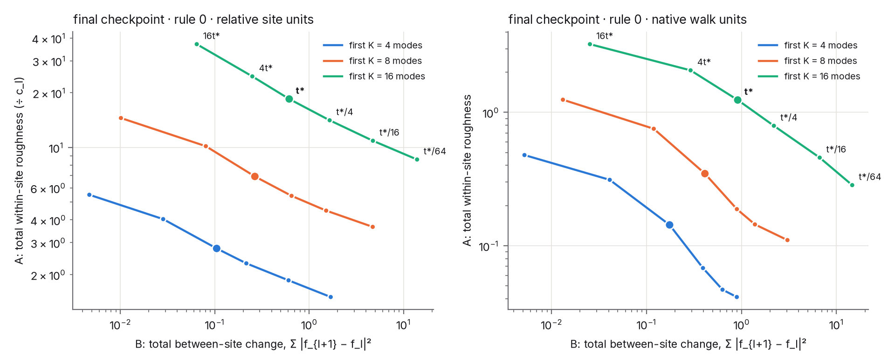
Plotted: total within-site roughness $A$ (y, log) against total between-site change $B$ (x, log)
of the first $K = 4, 8, 16$ modes (blue, orange, green), one point per coupling ($t^*/64$ at the lower right to
$16t^*$ at the upper left; large point: $t^*$; couplings labelled on the $K = 16$ curve). Left: relative units
($A$ includes the division by $c_l$); right: native units. Final checkpoint, the kNN rule.More views: the between-site share of the energyPlotted: $tB/(A + tB)$ for the first $K = 4, 8, 16$ modes (blue, orange, green) at each of the six
couplings (x); solid with dots: relative units, dashed: native units. Final checkpoint, the kNN rule.
The controls, with numbers
All at the final checkpoint, the kNN rule, relative units. Destroying the image correspondence raises the
low-mode energy. With images relabelled independently at every site (one draw, at the real chain's $t^*$), the
first eigenvalue is 2.756 instead of 0.570; the
gap-only lower bound, the same for both, is 0.422. The real chain's first eigenvalue sits
0.148 above the bound, the relabelled chain's
2.33. The relabelled chain's own balance coupling is
64.1 instead of 8.36. At the shared coupling its
sixteen-mode space is rougher ($A$ = 41.7 against
18.5) and changes more ($B$ = 0.956 against
0.615). Its neighbouring unit slices are as similar as the real ones (mean cosine
0.98 against 0.98), so slice cosine on
its own does not show that the correspondence was used.
Plotted: the first sixteen eigenvalues on mean-zero slices (y) by mode number (x): the operator
(solid) and the same chain with the images relabelled independently at every site (dashed, one draw); grey rule:
the gap-only lower bound on the first eigenvalue, the same for both. Final checkpoint, the kNN rule, relative units,
$t = t^*$ of the real chain.
change to the construction
its own $t^*$
overlap of the
sixteen-mode space with the default
occupancy on stem to b9
default: scale rank $8$, all twelve sites
8.36
(reference)
0.79
scale rank $4$
11.6
0.987
scale rank $16$
5.28
0.863
pool dropped
7.45
0.990 (stem to b9)
0.89
logits dropped
7.47
0.991 (stem to b9)
0.89
logits counted twice
9.15
0.995 (stem to b9)
0.71
The overlap is the normalised projector overlap, $\lVert Q_a^{\top} Q_b \rVert_F^2 / K$ for orthonormal bases of
the two spaces (one for identical spaces). Scale rank $4$ leaves the space nearly unchanged
(0.987); rank $16$ gives an overlap of 0.863,
so the scale rank is not irrelevant. Changing the end of the chain moves $t^*$ but leaves the space on stem to b9
nearly where it was. For the last three rows each space is first restricted to stem to b9 and given an orthonormal
basis there; the restrictions are well conditioned (smallest singular value
0.52 or more).
Sets through depth: a fitted readout
This is a post-hoc fit, not part of the construction. Sets are read off the first eight modes with
$k$-means, one fit for all sites together. Only sites holding more than a thousandth of an even share of the rank-$8$
space take part. Each such site's $N \times 8$ block $G_l$ is scaled by one number so that its rows have mean squared
norm one. Then one $k$-means with centroids shared by all participating sites labels every (image, site) pair there. Two readouts answer different questions.
Shared coordinates fits the scaled rows as they are: did this image change its joint spectral coordinates?
Shape-aligned first maps each site onto the already aligned previous site, by the orthogonal transformation
(reflections allowed) that best superimposes the same images (Procrustes, an SVD), so the transformations compose along
the chain and restart after a site without labels; it then asks about changes that such a transformation cannot
absorb. The transformation is poorly determined where the cross matrix of two sites is
nearly singular: at the default setting, 5 of the
11 links have a smallest-to-largest singular value ratio under $0.01$ (smallest
1.0e-4, at pool→logits). The readout's rank, $8$, is part
of the readout and was fixed in advance. On the specification's toy (one group planted to merge at the late sites), at
rank $12$ to $16$ the late sites' noise directions are rescaled to full size and the merged group is cut at
random.
Scores, the same for every partition. Information kept at site $l$: the $\chi^2$ information between
an image's set at site $l$ and the image that site $l$'s non-lazy walk $2M_l - I$ steps to next, as a share of its
ceiling, a spectral upper bound for partitions into up to $k$ sets that a partition need not reach (the $k-1$
largest squared nontrivial eigenvalues of that walk). A fit may occupy fewer than $k$ sets at some sites (as few as
7 at the default with $k = 10$). The null is the exact mean
information of a random relabelling with the realised set sizes; averaged over sites it is
0.02 to 0.08 of the ceiling across the
partitions plotted at $k = 5$. Churn is the share of images whose set changes between neighbouring sites, after
the best relabelling of each link. Information is averaged over the labelled sites, churn over the links with both ends labelled
(11 links when all sites are labelled). References, each $k$-means on
eight unweighted eigenvectors of its own operator and scored the same way: each site independently (labels matched
along the chain), four blocks of three sites (each block's average operator), the twelve-site block average, and its
relative-units version. The paper's matrix gets the same two readouts.
At $k = 5$ (final checkpoint, the kNN rule, relative units, shape-aligned, $t^*$) the sets keep
0.74 with churn 0.05. The three-site
blocks keep 0.79 with churn 0.13,
all of it at the three block boundaries (0.48 there on average).
Independent sites keep 0.83 with churn
0.36, and the twelve-site average 0.633
with none. The sets thus churn 2.5 times less than the three-site blocks for
0.05 of the ceiling. At $t^*/4$ they keep
0.77 with churn 0.09.
At $k = 10$ the comparison turns. At $t^*$ the sets keep 0.57
(churn 0.10), against 0.77
(churn 0.13) for the three-site blocks and
0.564 for the rigid average: 0.19 less than
the blocks and 0.009 more than the average. The coupling that keeps the
most, 4t*, reaches 0.62 with churn
0.06, still well below the blocks.
The two readouts are close at strong coupling. In relative units, shared coordinates keeps more than shape-aligned in
4 of 24 settings at the final
checkpoint (both kernel rules, both $k$, six couplings), by at most 0.010, all at
$4t^*$ or $16t^*$. At weak coupling it collapses: 0.21 at $t^*/64$ with
$k = 5$, where at least one site uses only 1 of the five sets. The
paper's matrix with the shape-aligned readout lands at 0.72 and
0.09 ($k = 5$), and 0.54 and
0.13 ($k = 10$).
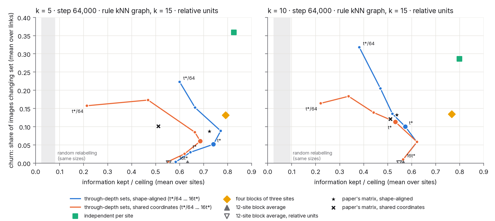
Plotted: churn (y; share of images whose set changes between neighbouring sites after the best
relabelling, mean over the links) against information kept (x; $\chi^2$ information about the next step of
$2M_l - I$ as a share of the ceiling, mean over the sites). Lines: the through-depth sets along the six couplings,
shape-aligned (blue) and shared coordinates (orange); large point: $t^*$. Square: each site independently; diamond:
four blocks of three sites; filled and hollow triangles: the twelve-site block average and its relative-units
version; star and cross: the paper's matrix, shape-aligned and shared coordinates. Grey band: the range of the
site-averaged random-relabelling null over all plotted partitions. Left $k = 5$, right $k = 10$; final checkpoint,
the kNN rule, relative units.
Native units: full-chain averages are not comparable at weak coupling (final checkpoint, the kNN rule,
shape-aligned readout). There the rank-$8$ space sits on a few late sites
(labelled sites at the six couplings: 5, 5, 8, 12, 12, 12), the other sites get no labels, and
the means run over the late sites only, where every partition keeps more. At $t^*/16$ the native-units sets
(5 sites, b7 to logits)
keep 0.89 with churn 0.05 at
$k = 5$; on the same sites and links the three-site blocks keep 0.87
with churn 0.12. At $k = 10$ the figures are
0.81 and 0.11 against
0.86 and
0.12. In relative units every site is labelled in every
setting.
More views: the scores site by site, and the perplexity rule
Plotted: information kept as a share of the ceiling (y) at each site (x), $k = 5$: the
through-depth sets at $t^*$ (blue shape-aligned, orange shared coordinates), each site independently (green), four
blocks of three sites (yellow), the twelve-site average (grey); dotted blue: the random-relabelling null of the
shape-aligned sets. Final checkpoint, the kNN rule, relative units.Plotted: churn after the best relabelling (y) for each adjacent pair of sites (x), $k = 5$,
same partitions and colours as left (the twelve-site average has none).
Plotted: as above, $k = 10$.Plotted: as above, $k = 10$.
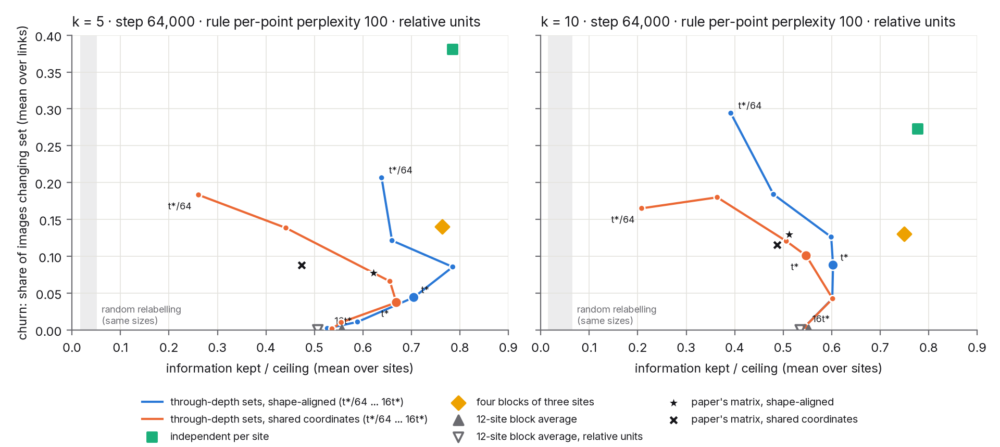
Plotted: as the churn-against-information figure above, kernel rule
per-point perplexity 100, final checkpoint, relative units.
The flow of membership for one setting ($k = 5$, shape-aligned, $t^*$, relative units, final checkpoint)
shows what the churn number summarises. Set sizes run from 861, 620, 389, 51, 79 at stem to
951, 422, 234, 196, 197 at logits (sets numbered by total size over the sites, as in the
explorer). A share of 0.53 of the images never change set, and
0.56 end in the set they start in. As validation only, the normalised mutual
information between the sets and the CIFAR classes is 0.19 at stem,
0.66 at b9 and 0.66 at logits; each site's own
independent partition reaches 0.64 at logits.
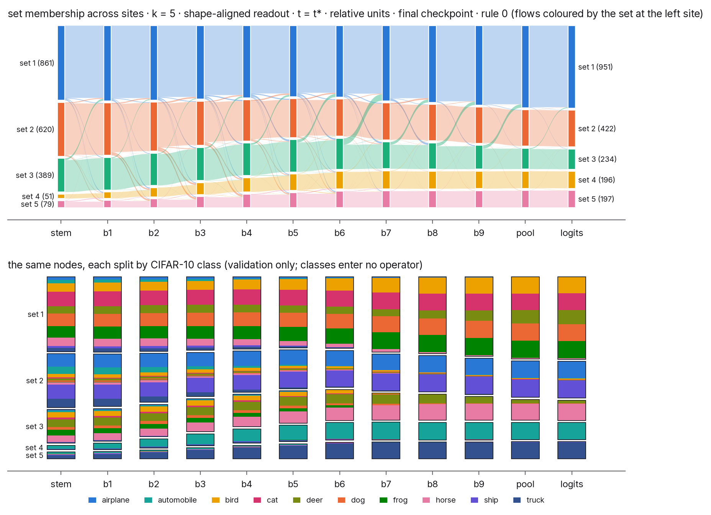
Plotted: top, one column per site; each node is a set ($k = 5$; numbered by total size over the
sites; height = number of images, given at stem and logits), and each band between neighbouring columns carries the
images that go from one set to another, coloured by the set at the left site. Bottom, the same nodes, each split by
CIFAR-10 class (validation only). Shape-aligned readout of the rank-$8$ low space, $t = t^*$, relative units, final
checkpoint, the kNN rule.More views: the same flow at $k = 10$
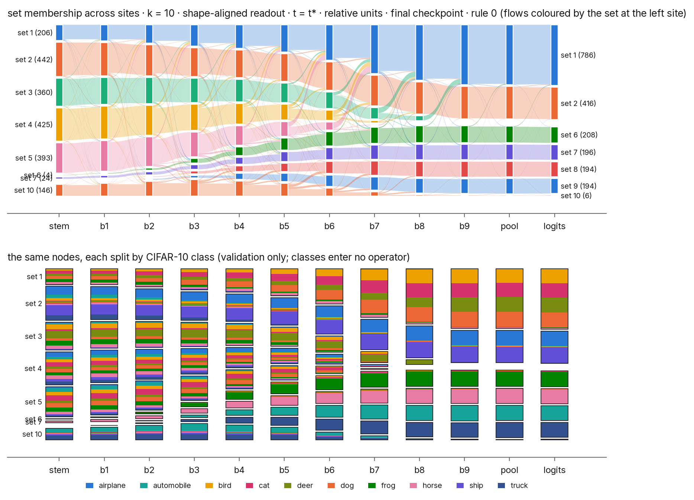
Plotted: as the flow figure above, $k = 10$.
Across training, and the perplexity rule
The balance coupling ends higher than it starts, after a dip at step $64$ in all four series: in relative
units from 4.97 at step $0$ to 8.36
at the end (the perplexity rule: 4.45 to
8.66); in native units from 0.343 to
0.655 (0.558 to
1.16). Occupancy at $t^*$ in relative units: stem to b3 hold
0.42 at step $0$ and 0.42 at the
end, b9 to logits 0.24 and 0.29
(the perplexity rule at the end: 0.43 and
0.25). Image directions for $90\%$ of the trace at $t^*$, over the
eight checkpoints: 10, 9, 11, 13, 13, 13, 14, 13 (the perplexity rule:
9, 9, 11, 13, 13, 13, 13, 13). The trade-off at $t^*$: change is
0.20 to 0.27 of the sixteen-mode
energy over training in relative units and 0.27 to
0.34 in native units (the perplexity rule:
0.16 to 0.23 and
0.21 to 0.27). Mode $1$ against
the gap-only control at the default setting under the perplexity rule: 0.057.
The set comparison has the same shape on every checkpoint, under both kernel rules (shape-aligned, relative
units, $t^*$). At $k = 5$ the sets churn less than the three-site blocks on
8 of 8 checkpoints, the blocks churning
1.5 to 2.5 times as
much (the perplexity rule: 8 of 8,
1.6 to 3.2 times). The
blocks keep between -0.003 and 0.06 of
the ceiling more than the sets (a negative value: the sets keep more, at step $0$); under the perplexity rule
0.002 to 0.07. At $k = 10$ the sets keep
less than the blocks on 8 of 8 checkpoints, by
0.034 to 0.19 (the perplexity rule:
8 of 8, by
0.054 to 0.15). Their margin over the
rigid average runs from -0.034 to
0.059 (-0.041 to
0.063), and the blocks churn only
1.0 to 1.4 times as
much as the sets (1.1 to
1.6). At the final checkpoint under the perplexity rule: $k = 5$,
0.71 and churn 0.04 against
0.76 and 0.14; $k = 10$,
0.60 and 0.09 against
0.75 and 0.13 (rigid average
0.552).
Plotted: information kept as a share of the ceiling, mean over sites (y), against training step
(x, symlog): through-depth sets at $t^*$ (blue; shape-aligned, relative units), four blocks of three sites (yellow),
twelve-site block average (grey); solid $k = 5$, dashed $k = 10$. The kNN rule.Plotted: churn after the best relabelling, mean over the links (y), against training step (x,
symlog), same partitions and line styles as left (the twelve-site average has none). The kNN rule.
More views: balance coupling, occupancy and trade-off over training; the set comparison under the perplexity rule
Plotted: balance coupling $t^*$ in relative units (y) against training step (x, symlog); solid
the kNN rule, dashed the perplexity rule.Plotted: as left, native units.
Plotted: occupancy of the first sixteen modes at $t^*$ (y) at each site (x), one line per
checkpoint (light: step $0$, dark: the final checkpoint); relative units, the kNN rule; grey rule: even
share.Plotted: as above, native units.Plotted: between-site share $tB/(A + tB)$ of the first sixteen modes at $t^*$ (y) against
training step (x, symlog); blue relative units, orange native units; solid the kNN rule, dashed the perplexity
rule.
Plotted: as the information panel above, the perplexity rule.Plotted: as the churn panel above, the perplexity rule.
Caveats
One network, one seed.
The probe is class-stratified (2,000 test images, the same number from each class), so the labels chose
the vertices, although no label enters any operator or basis. Classes appear here only as validation (the flow's class
split and the mutual information).
One recorded site is one unit of depth and one unit of mass, a convention. Sites are not evenly spaced in the
network (pool and logits are single operations, b1 to b9 are residual blocks), and every number here depends on that
spacing.
The default coupling $t^*$ balances two eigenvalues. It is a ruler for placing the six couplings, not an optimum
of anything measured here; the set comparison changes along the couplings, and the page shows all six.
The set readout is a fit: $k$-means on a rank of $8$ fixed in advance, and the rank is part of the readout (on the
specification's toy it degrades at rank $12$ to $16$). The shape-aligned readout's rotations are poorly determined at
several links (see the sets subsection).
Mode numbers are local to one setting. They are not matched across couplings, unit conventions, checkpoints or
kernel rules, so "mode $1$" in two settings need not be the same function. Mode $1$ is read separately in each
setting; the comparisons of the whole space use the rotation-invariant readings.
In native units at the three weakest couplings, some sites get no set labels, and set scores averaged over sites
are not comparable with the references (see the sets subsection).
Neighbour-frame similarity is sensitive where a site's fourth and fifth local strengths are close; every value
under $0.5$ on this page sits at such a near-tie.
Open checks
None of these has been run.
A second seed, and a probe drawn without class stratification.
A coupling that differs between links (for example scaled by each pair of sites' gaps), instead of one $t$ for the
whole chain.
The set readout at ranks other than $8$ on the real network, and a readout that does not force every image into a
set.
Matching modes across couplings and checkpoints by subspace overlap, so that a single mode could be followed.
Plotted: the explorer in the linked state: the final checkpoint's row, one panel per site (UMAP
layout of the probe images, seed $0$), each point coloured by its set at that site in the through-depth sets of this
experiment ($k = 5$, shape-aligned readout, relative units, $t = t^*$), the kNN rule; other rows grey.
The construction behind Neural Coherent Sets, my procedure for finding the groups of inputs a
neural network treats alike across layers and training, in the order the pipeline runs: what each object is, the
choices that matter (above all the kernel), and how to read the explorer. The
Overview gives the same procedure in five steps. The kernel sweep and the layout
algorithm are in Appendix A; per-image diagnostics and the definitions of every comparison
statistic are in Appendix C; the commands to rebuild everything are in
Appendix E.
Glossary
Probe image. One of the $N = 2,000$ CIFAR-10 test images fed to the
network; the same images, indexed $i = 1..N$, are used at every checkpoint and site.
Site. A place in the network where activations are recorded: stem, the outputs of
residual blocks b1 to b9, pool, or logits (12 in all).
Checkpoint. One of the 8 saved training steps used here:
0, 64, 256, 1,024, 2,560, 6,400, 25,600, 64,000.
Snapshot. A (checkpoint, site) pair. Its data are the $N$ activation vectors of the probe
images at that site and checkpoint. In the explorer grid each snapshot is drawn as one panel.
Activation cell. A region of a layer's activation space on which the rest of
the network computes nearly the same thing (after an observation by Stefan Heimersheim and collaborators); on
this site "cell" means only this.
Block. A run of consecutive snapshots whose operators are averaged (or, with the explorer's Operator switch, composed in order: product blocks). A layer block is
sites $a..b$ at one checkpoint; a time block is checkpoints $c..d$ at one site.
Single-snapshot block. A block of one snapshot ($a = b$ or $c = d$). Its
eigenfunctions are ordinary spectral clustering (diffusion maps) of that snapshot alone.
Kernel rule. The recipe that turns a snapshot's cosine distances into a symmetric,
non-negative weight matrix $K$ with zero diagonal. There are five (table); the default is
the kNN graph, k = 15.
Walk $P_c$. The Sinkhorn scaling $\mathrm{diag}(v)\,K\,\mathrm{diag}(v)$ of snapshot $c$'s
kernel: symmetric, non-negative, zero on the diagonal, every row and column summing to 1.
Lazy walk $M_c$. $M_c = \tfrac12(I + P_c)$: stay put with probability one half,
otherwise take a step of $P_c$. Same eigenvectors as $P_c$, eigenvalues in $[0, 1]$.
Block operator $\bar M$. The equal-weight average $\bar M = \frac{1}{|B|}
\sum_{c \in B} M_c$ over the snapshots of block $B$.
Eigenfunction $\psi_k$. The $k$-th unit eigenvector of $\bar M$ in decreasing
order of eigenvalue, read as a function on the probe images ($\psi_k(i)$ for image $i$). $\psi_0 = \mathbf
1/\sqrt N$ is the constant.
Spectrum. The eigenvalues $1 = \lambda_0 \ge \lambda_1 \ge \lambda_2 \ge \dots$ of
$\bar M$. For a unit eigenfunction, $1 - \lambda_k = \frac{1}{|B|}\sum_{c \in B} \psi_k^\top (I - M_c)\, \psi_k$, the average lazy penalty over the block's snapshots, which is half the average walk penalty $\psi_k^\top (I - P_c)\, \psi_k$ of (1). For SEBA with $r$ sets the
relevant gap is $\lambda_{r-1} - \lambda_r$, between the last eigenvalue used and the first one left out.
Retention $\rho_c$. For a function $f$ and any snapshot $c$, inside or outside the
block, $\rho_c(f) = f^\top M_c f / f^\top f \in [0, 1]$. A block eigenvalue is the mean retention of its
eigenfunction over the block: $\lambda_k = \frac{1}{|B|} \sum_{c \in B} \rho_c(\psi_k)$.
SEBA vector. One of the $r$ sparse vectors that SEBA returns from
$\mathrm{span}(\psi_0, \dots, \psi_{r-1})$: soft-thresholded, sign-fixed, scaled to a maximum of 1, with negative
entries clipped to 0. It approximates the span but generally does not lie in it.
Coherent set. The images at which SEBA vector $j$ is the largest of the $r$
and positive (the hard assignment). These are candidates for groups the network treats alike across the block, and
are numbered by reliability.
Unassigned. An image at which all $r$ SEBA vectors are 0 after clipping; it
belongs to no set and is drawn grey.
Matched Jaccard. For two collections of hard sets (unassigned images in no
set): the Jaccard overlap $|A_i \cap B_j| / |A_i \cup B_j|$ of every pair, a one-to-one matching that maximises the
total, and the mean over matched pairs. Its null band comes from permuting one side's labels
(details).
Model, probe, sites
Model. ResNet-20 (ReLU), the ModelZoo resnet20/relu-seed0 recipe retrained on Modal;
64,000 steps, validation accuracy 91.6% at the last step. 73 checkpoints saved; the
explorer uses 8: steps 0, 64, 256, 1,024, 2,560, 6,400, 25,600, 64,000. Eval mode (BatchNorm running statistics), no
augmentation.
Probe. $N = 2,000$ CIFAR-10 test images, 200 per class, drawn with
numpy.RandomState(0). Drawing a class-balanced probe is the only use of labels before the sets exist;
after that, classes, losses and gradients only colour plots and validate.
Sites ($S = 12$): stem $=\mathrm{ReLU}(\mathrm{BN}(\mathrm{conv}_1(x)))$; b1 to b9, the
post-ReLU outputs of the nine residual blocks; pool, the global average of b9 over space (64 dims); logits (10).
Convolutional sites are flattened ($C \times H \times W$: 16,384 dims for stem to b3, 8,192 for b4 to b6, 4,096 for
b7 to b9).
Per-snapshot operator
For snapshot $c$ with activations $h_i \in \mathbb{R}^D$:
(A zero centred vector would stay zero, giving that image cosine 0 with every other; it does not occur here.)
$K$ is a symmetric non-negative kernel with $K_{ii} = 0$, given by one of five kernel
rules, for example $K_{ij} = \exp(-\kappa\, d_{ij})$ for the single-temperature rules.
Sinkhorn. Find $u$ with $\sum_j \exp(\log K_{ij} + u_i + u_j) = 1$ for all $i$ (symmetric scaling,
$v = e^u$), in the log domain in float64: up to ten fixed-point steps $u \leftarrow u - \tfrac12 \log(\text{row
sums})$, then, if needed, line-searched Newton steps on the convex objective $\tfrac12\sum_{ij} e^{\log K_{ij} + u_i +
u_j} - \sum_i u_i$. A snapshot counts only if $\max_i |\text{row sum}_i - 1| < 2 \times 10^{-12}$; otherwise the
measurement fails (coherent.symmetric_balance). Then
$$ P = \mathrm{diag}(v)\, K\, \mathrm{diag}(v), \qquad M = \tfrac12 (I + P). $$
$P$ is symmetric, non-negative, zero on the diagonal, with unit row and column sums. For any $f$,
$$ f^\top (I - P)\, f \;=\; \tfrac12 \sum_{i,j} P_{ij}\,(f_i - f_j)^2 , $$
small when $f$ is nearly constant on images the snapshot weights as similar, and $M$ has eigenvalues $\tfrac12(1 +
\lambda_P) \in [0, 1]$ with the eigenvectors of $P$.
Why Sinkhorn, why a zero diagonal, why $(I + P)/2$
Sinkhorn instead of degree normalisation. With per-snapshot degree normalisation
($D^{-1/2} K D^{-1/2}$, with or without Coifman-Lafon $\alpha = 1$), each snapshot has its own stationary vector
$\propto \sqrt{\text{degree}}$, so an average over snapshots has no exact trivial mode and differences in density leak
into the spectrum. A doubly stochastic $P$ has the uniform measure in every snapshot: $\psi_0 = \mathbf 1/\sqrt N$ with
eigenvalue exactly 1 for every block. (Doubly stochastic normalisation for spectral clustering: Zass and Shashua
2006; robustness to heteroskedastic noise: Landa, Coifman and Kluger 2021.)
Zero diagonal. This is a stated variant of the project's theory (THEORY.md, Section 3.1, keeps
$K_{ii} = 1$). With $K_{ii} = 1$ kept, the median diagonal entry of the Sinkhorn-scaled kernel over b1 to b8 at step
64,000 is 1 (to the stored precision) under the calibrated
half-mass rule, against 0.0017 under kNN scale (meta.jsonself_weight): those half-mass operators are within about $10^{-8}$ of the identity, and a block average
would be dominated by its least lazy snapshots.
$(I + P)/2$. Fixes every snapshot's self-mass at exactly one half, and shifts the spectrum into $[0, 1]$ so that
an eigenvalue of $P$ near $-1$ (alternation across a nearly bipartite graph) is not read as a slow mode. It
equalises laziness only; gaps and mixing rates still differ between snapshots and are part of what is measured.
How much the normalisation changes the result (normalisation_compare.json, step
64,000, all 78 layer blocks, mean $\cos^2$ of principal angles between leading spans with the constant
projected out; computed for the two single-temperature rules only). Under kNN scale: median 1.000 against both the
$\alpha = 1$ operator and diagonal-retained Sinkhorn (lowest 0.43 and 0.997 for $r = 3$). Under calibrated half-mass:
median 0.001 ($r = 3$) and 0.007 ($r = 6$) against $\alpha = 1$, and 0.001 and 0.008 against diagonal-retained
Sinkhorn.
Choosing the kernel
Nothing in the network fixes the kernel, and on this network it changes the answer more than any other choice. In
the trained middle layers the images are nearly equidistant: in b1 to b8 at step 64,000 the median
cosine distance from an image to its 15th nearest neighbour, $d_{15}$, is 0.81 to 0.86, against a median pairwise
distance of 1.00 (data/r20s0/stats_64000.json). Even near neighbours are not near.
Plotted: kernel weight $\exp(-\kappa d)$ against cosine distance $d = 1 - \cos$, for the $\kappa$
set by the slider (buttons: each single-temperature rule's $\kappa$, or median $\kappa_i$ for the perplexity rules,
in this snapshot). Snapshot: b5, step 64,000. Vertical lines: $d_{15}$ of this snapshot (from the kNN-scale rule,
$\kappa = 1/d_{15}$) and $d = 1$.
One temperature fails in the middle layers, in two ways. A kernel flat enough to connect images broadly is nearly
linear in $C$, and to first order in $\kappa$ its modes are principal components of $\hat h$: kNN scale,
$\kappa = 1/d_{15}$, gives $\kappa \approx 1.2$ there, spread modes, and a weak
leading one ($1 - \lambda_1$ = 0.39 to 0.47 in b2, b5 and b8 for global $\kappa$ from 2 to 5). A kernel sharp
enough to put half the mass on 15 neighbours lets a few unusually close pairs outweigh everything else: after
Sinkhorn scaling each such image sends nearly all its probability to its partner, and $\psi_1$ sits on one pair
(participation number 2.0 to 2.1 from $\kappa = 12$ upward in b5 and b8; half-mass picks $\kappa$ = 26 to
43 there). No single $\kappa$ in between gives modes that are both spread and slow.
Rules that adapt to each image work here. A 15-nearest-neighbour graph and t-SNE-style affinities with a per-image
$\kappa_i$ give every image a comparable neighbourhood, so a single close pair cannot take over its row. In every
final snapshot tested, $\psi_1$ is spread (participation number 890 to 1,450) and no 8-set SEBA partition has a set
smaller than 86 images; in the middle layers $1 - \lambda_1$ is 0.05 to 0.17. Per-image rules are not immune:
perplexity 15 and 30 still give a 2-image set in some snapshot. At pool and logits, where the images are far more
clustered, every rule gives spread modes.
So the default is the kNN graph, k = 15. Perplexity 100 and 300 are offered too, and kNN scale and half-mass
stay selectable as references for the two failure modes. The choice used label-free diagnostics only. Checked
afterwards, the per-image rules' sets also agree best with the classes in the middle layers (b8: matched Jaccard 0.43
to 0.44, against 0.34 to 0.35 for global $\kappa$ = 2 to 5).
The five kernel rules
$d_{ij} = 1 - C_{ij}$, $k = 15$, $K_{ii} = 0$ throughout. $d_k$ = median over images of the distance to the
$k$-th nearest other image.
#
rule
kernel ($i \ne j$)
0
kNN graph, $k = 15$ (default)
$K_{ij} = 1$ if $j \in \mathrm{NN}_{15}(i)$ or
$i \in \mathrm{NN}_{15}(j)$, else $10^{-6}$ (a floor so the scaling exists). Rank-based; the same neighbourhood size
as the UMAP layouts.
1, 2
per-image perplexity 100, 300
For each $i$, $\kappa_i$ by bisection so that
$p(j \mid i) \propto \exp(-\kappa_i d_{ij})$, $j \ne i$, has perplexity $\exp(H_i)$ = 100 (or 300);
$K_{ij} = \tfrac12\big(p(j \mid i) + p(i \mid j)\big)$, the t-SNE affinity.
3
kNN scale
$K_{ij} = \exp(-\kappa d_{ij})$, $\kappa = 1/d_k$ per snapshot (kernel
$e^{-1}$ at $d_k$).
4
half-mass, calibrated
$K_{ij} = \exp(-\kappa d_{ij})$, $\kappa$ per snapshot by
bisection so that $\mathrm{median}_i \sum_{j \in \mathrm{NN}_k(i)} K_{ij} \big/ \sum_{j \ne i} K_{ij} =
\tfrac12$.
Median 15-NN share of kernel mass (before Sinkhorn) over b1 to b8 at step 64,000:
75% (kNN graph), 45% (perplexity 100),
26% (perplexity 300), 1% (kNN scale),
50% (half-mass, by construction). meta.json stores per snapshot: $\kappa$
for rules 3 and 4; the median $\kappa_i$ (with 10th and 90th percentiles) for rules 1 and 2; nothing for rule 0; and
the achieved median 15-NN share of kernel mass for every rule. The half-mass rule calibrates what an earlier version's
two-distance heuristic, $\kappa = \log(N/k)/(d_\text{pair} - d_k)$, aimed at; the heuristic appears only in the
$\kappa$ figure of Appendix A.
site
kNN graph, k = 15
per-point perplexity 100
per-point perplexity 300
kNN scale
half-mass, calibrated
stem
– / 0.79
22.4 / 0.38
15.5 / 0.20
1.5 / 0.01
22.7 / 0.50
b1
– / 0.79
40.8 / 0.41
31.1 / 0.23
1.2 / 0.01
39.6 / 0.50
b2
– / 0.75
44.0 / 0.41
33.8 / 0.24
1.2 / 0.01
43.2 / 0.50
b3
– / 0.75
35.8 / 0.43
27.4 / 0.25
1.2 / 0.01
34.8 / 0.50
b4
– / 0.75
33.6 / 0.45
25.8 / 0.26
1.2 / 0.01
32.5 / 0.50
b5
– / 0.75
33.9 / 0.46
26.4 / 0.27
1.2 / 0.01
32.6 / 0.50
b6
– / 0.75
33.0 / 0.46
25.9 / 0.28
1.2 / 0.01
31.6 / 0.50
b7
– / 0.79
28.7 / 0.48
22.8 / 0.30
1.2 / 0.01
27.4 / 0.50
b8
– / 0.75
27.4 / 0.48
22.2 / 0.31
1.2 / 0.01
25.9 / 0.50
b9
– / 0.75
15.1 / 0.38
10.0 / 0.21
1.9 / 0.02
16.7 / 0.50
pool
– / 0.71
15.8 / 0.33
6.5 / 0.15
6.2 / 0.14
20.5 / 0.50
logits
– / 0.75
20.7 / 0.33
6.9 / 0.12
13.4 / 0.24
29.2 / 0.50
Each entry: $\kappa$ (median $\kappa_i$ for the perplexity rules; none for the kNN graph) / median
15-NN share of kernel mass, step 64,000; source data/r20s0b/meta.json.
How these five were chosen from 19 candidates (global $\kappa$, mass targets, perplexities, kNN graphs), with label-free diagnostics, is in Appendix A: the kernel sweep.
Blocks and retention
Layer blocks: sites $a..b$ at one checkpoint, all $0 \le a \le b < 12$ (78 per checkpoint).
Time blocks: checkpoints $c..d$ of the eight at one site (36 per site), equal weight per listed checkpoint
(the checkpoints are roughly geometrically spaced in steps, so early training gets more weight per step).
Block operator $\bar M = \frac{1}{|B|} \sum_{c \in B} M_c$, equivalently $\tfrac12(I + \bar P)$ with $\bar P$ the
mean walk. The penalty is linear in the walk, so
$$ f^\top (I - \bar P)\, f \;=\; \frac{1}{|B|} \sum_{c \in B} f^\top (I - P_c)\, f , $$
and the leading eigenfunctions of $\bar M$ are the unit functions orthogonal to the constant and to each other with the
smallest average penalty over the block. Since $I - \bar M = \tfrac12 (I - \bar P)$, a unit eigenfunction has $1 - \lambda_k = \tfrac12\, \psi_k^\top (I - \bar P)\, \psi_k$. No map between layers or between checkpoints is used.
Eigenpairs by a dense float64 symmetric eigensolver, descending; $\lambda_0 = 1$, $\psi_0 = \mathbf 1/\sqrt N$
(not stored); $\psi_1..\psi_8$ stored with unit norm, sign fixed so the largest-magnitude entry is positive, quantised
to int16 relative to $\max_i |\psi_k(i)|$.
Retention $\rho_{c'}(f) = f^\top M_{c'} f / f^\top f$ is stored for $\psi_1..\psi_8$ and every SEBA
vector, for every snapshot of the checkpoint (layer blocks) or every checkpoint of the site (time blocks), inside and
outside the block. Identity: $\lambda_k = \frac{1}{|B|}\sum_{c \in B} \rho_c(\psi_k)$. A high $\lambda_k$ is a high
average, not high retention in every snapshot; the retention strip shows each snapshot's value.
Single-snapshot blocks ($a = b$ or $c = d$) are ordinary spectral clustering / diffusion maps of that snapshot. For longer
blocks, Neural Coherent Sets builds on two constructions for flows: Froyland's dynamic Laplacian (Froyland 2015; Froyland and Junge 2018) and Banisch and
Koltai's space-time diffusion maps (2017), here with Sinkhorn-normalised kernels and uniform weight on each image's
trajectory; in those works averaging over time finds coherent sets of a flow, and here the "time" axis is depth or
training.
SEBA sets
Sparse Eigenbasis Approximation (Froyland, Rock and Sakellariou 2019, Algorithm 3.1), ported from the authors'
reference code (github.com/gfroyland/SEBA) and cross-checked against
it in the tests. Input $V = [\psi_0, \psi_1, \dots, \psi_{r-1}]$ (constant included), $r \in \{2, 3, 4, 6, 8\}$,
$\mu = 0.99/\sqrt N$ (just under the entry size of an evenly spread unit vector). Orthonormalise $V$ (QR); starting
from $R = I$, repeat until $\lVert R_\text{new} - R \rVert \le 10^{-14}$ (at most 5,000 iterations):
$$ Z = VR, \qquad S_{:j} = \frac{\operatorname{sign}(Z_{:j}) \odot (|Z_{:j}| - \mu)_+}{\lVert \operatorname{sign}(Z_{:j}) \odot (|Z_{:j}| - \mu)_+ \rVert}, $$
$$ R_\text{new} = \operatorname{polar}(V^\top S) = U W^\top, \qquad \text{where } V^\top S = U \Sigma W^\top . $$
The rotated vectors $VR$ lie in the span; the returned thresholded vectors $S$ generally do not, and are sparse
approximations to it. Then flip each column of $S$ so its sum is positive, divide it by its maximum, order the columns
by decreasing minimum entry (reliability), and clip negative entries to 0. Hard label of image $i$:
$\arg\max_j S_{ij}$ if $\max_j S_{ij} > 0$, else unassigned. Set $j$ (1-based, reliability order) takes the $j$-th set
colour; unassigned is grey. The rotation and permutation are stored, so the browser reconstructs the full vectors
(not just the labels) for retention.
Plotted: layer block b7 to pool, step 64,000, kNN graph, k = 15, $r = 3$ (input
$\psi_0, \psi_1, \psi_2$). Left: each probe image at $(\sqrt N \psi_1(i), \sqrt N \psi_2(i))$, coloured by its hard
set (grey: unassigned). Each dashed line, in a set's colour, is where that set's rotated coordinate $(VR)_{ij}$
equals the threshold $\mu$; it is straight because $(VR)_{:j}$ is a fixed combination of $\psi_0$ (constant),
$\psi_1$ and $\psi_2$. Middle: the three SEBA vectors (scaled to maximum 1, negatives clipped), images sorted by set
and, within a set, by decreasing value. Right: the pool panel at the same step (UMAP layout), coloured by set. Values: $\lambda_1$ = 0.958, $\lambda_2$ = 0.927, gap $\lambda_2 - \lambda_3$ = 0.011; set sizes 1,105, 398 and 424; 73 unassigned.
What is and is not canonical
Given the snapshots, the kernel rule and the normalisation, $\bar M$ and its spectrum are well defined.
An individual $\psi_k$ is defined only up to sign, and only when $\lambda_k$ is separated from its neighbours;
inside a group of close eigenvalues only the span is meaningful. SEBA uses the span of the leading $r$, so it
depends on where $r$ cuts the spectrum: the gap $\lambda_{r-1} - \lambda_r$ says how sharp that cut is.
Sign convention, set numbering (reliability order) and colours are conventions.
Choices that could be made otherwise: the sites, centring over this probe set, cosine (which drops the norm),
the kernel rule, and equal weights within a block.
Average or product
The explorer averages a block's walks ($\bar M$). The theory's object is their ordered product $Q = M_b \cdots M_a$ (Froyland's coherent pairs), which the explorer's Operator switch also offers. To first order in the step size the two share leading vectors; on this network they agree closely for short blocks and drift apart for long ones. Derivation, measurements and the product's start and end functions: Appendix A.
Reading the layouts and colourings
The explorer grid has one row per checkpoint and one column per site; each panel is a 2-d layout of the $N$ probe
images in one snapshot (UMAP), and each image is one dot in every panel. The layouts are for
display only: nothing is computed from them, and a set that looks scattered in a layout can be compact in the
operator, or the reverse.
A colouring is computed from the selected block only (outlined) and painted on every panel, inside and
outside the block, so a block's functions and sets can be followed into other sites and checkpoints.
Coherent sets (SEBA, rank $r$): set $j$ in the $j$-th set colour
( set 1,
set 2, ...), unassigned grey. Clicking a set in the legend
dims the others.
Eigenfunction $\psi_k$: diverging colour of $\psi_k(i) / \max_i |\psi_k(i)|$, blue negative, grey near
zero, red positive. Nodal domains: the sign of $\psi_k$ alone. Signs follow the convention above.
Validation colourings (labels, losses or gradients; none enters an operator): CIFAR class; correct or
wrong; cross-entropy loss and input-Jacobian norm (log scale, fixed across rows from the 1st to 99th percentile over
all checkpoints); gradient alignment $\cos(g_i, \bar g)$ and $g_i \cdot \bar g$ (diverging; the dot product is scaled
by the 99th percentile of its magnitude). Each is taken at the row's own checkpoint, or at the final checkpoint for
every row (definitions).
The side panels describe the selected function (one $\psi_k$, all sets, or one set):
Spectrum: $\lambda_1..\lambda_8$ of $\bar M$, with $\mathrm{PN}(\psi_k) = (\sum_i \psi_k(i)^2)^2 / \sum_i
\psi_k(i)^4$ under each; a mode with $\mathrm{PN} < 0.01N$ is marked localised. With a SEBA colouring the
eigenvalues of $\psi_1..\psi_{r-1}$ are drawn dark.
Retention strip: $\rho_c$ of the selected function in every snapshot of the block's checkpoint (layer block)
or site (time block); the block's snapshots are shaded, and for $\psi_k$ a dashed line marks $\lambda_k$, their
mean.
Legend: each set's size and its class make-up as a bar (validation). Matched Jaccard of the sets against
the classes and against a second block of the same family, kernel rule and $r$, each with the mean of a 30-draw
permutation null.
Representative images: for $\psi_k$, the 12 images with the most positive values, the 12 most negative,
and the 12 nearest zero. For a set, its members by decreasing SEBA value ("highest membership"), and its members with
the smallest lead of their own SEBA value over the largest of the other $r - 1$ ("boundary members").
G. Froyland. Dynamic isoperimetry and the geometry of Lagrangian coherent structures. Nonlinearity 28
(2015).
G. Froyland, O. Junge. Robust FEM-based extraction of finite-time coherent sets using scattered, sparse, and
incomplete trajectories. SIAM J. Appl. Dyn. Syst. 17 (2018).
R. Banisch, P. Koltai. Understanding the geometry of transport: diffusion maps for Lagrangian trajectory data
unravel coherent sets. Chaos 27 (2017).
G. Froyland, C. P. Rock, K. Sakellariou. Sparse eigenbasis approximation: multiple feature extraction across
spatiotemporal scales with application to coherent set identification. Commun. Nonlinear Sci. Numer. Simul.
77 (2019).
G. Froyland. An analytic framework for identification of finite-time coherent sets in time-dependent dynamical
systems. Physica D 250 (2013).
R. Zass, A. Shashua. Doubly stochastic normalization for spectral clustering. NeurIPS (2006).
B. Landa, R. R. Coifman, Y. Kluger. Doubly stochastic normalization of the Gaussian kernel is robust to
heteroskedastic noise. SIAM J. Math. Data Sci. 3 (2021).
X. Zhu, Z. Ghahramani, J. Lafferty. Semi-supervised learning using Gaussian fields and harmonic functions.
ICML (2003).
L. McInnes, J. Healy, J. Melville. UMAP: Uniform Manifold Approximation and Projection (2018).
J. L. Pughe-Sanford, X. Ding, J. J. Moore, A. M. Sengupta, C. Epstein, P. Greengard, D. B. Chklovskii. Neurons as
detectors of coherent sets in sensory dynamics. NeurIPS (2025), arXiv:2510.26955.
U. von Luxburg. A tutorial on spectral clustering. Statistics and Computing 17 (2007).
A. Nerode. Linear automaton transformations. Proc. Amer. Math. Soc. 9(4):541–544 (1958), doi:10.1090/S0002-9939-1958-0135681-9.
D. Hsu, S. M. Kakade, T. Zhang. A spectral algorithm for learning hidden Markov models. J. Comput. Syst.
Sci. 78 (2012), arXiv:0811.4413.
B. Balle, X. Carreras, F. M. Luque, A. Quattoni. Spectral learning of weighted automata: a forward-backward
perspective. Machine Learning 96:33–63 (2014), doi:10.1007/s10994-013-5416-x.
Appendices
The main text (Overview, Primer, Explorer, Experiments, Method) is meant to be read on its own. The
appendices hold the construction choices, the checks that the method is sound, the full definitions, the charts the
experiments do not show, and how to reproduce the site.
Construction choices: the kernel rules and the sweep behind them, the cosine
versus dot-product kernel, the average versus the product operator, construction ablations, the choice of $r$ and of
the cut $k$, layouts, and variants of the construction.
Is the method sound? Baselines, nulls and stability: the same numbers from
simpler methods and from null data, agreement between sources, forced extraction, stability, planted benchmarks and
the robustness of the distances.
Definitions and statistics: defaults, every comparison statistic, null and
ceiling, and the definitions behind each experiment.
Reference charts: training curves, class decodability, class make-up tables,
and every chart the experiments moved out of the main text, grouped by experiment.
Every number in the experiments comes from one construction with a handful of choices: which kernel
turns activations into a walk, whether distances use the cosine or the full dot product, whether a block averages its
snapshots' walks or composes them, how many eigenfunctions SEBA rotates ($r$) and how many an operator comparison keeps
($k$). This appendix records each choice, the label-free diagnostic it was made on, and how much the output moves
when the choice changes. Labels appear only as validation columns, computed after the choice.
Kernel rules and the sweep behind them
The explorer offers five kernel rules (formulas in Method): rule 0,
kNN graph, k = 15 (the default); rules 1 and 2, per-point perplexity 100 and per-point perplexity 300; rule 3,
kNN scale; rule 4, half-mass, calibrated. Rules 3 and 4 are kept as references for the two ways a
single temperature fails in the middle layers (Method). They were picked from a sweep of
19 candidates on label-free diagnostics only.
Candidates (data/r20s0b/sweep.json, produced by sweep_math.py): one global $\kappa$ from
2, 3, 5, 8, 12, 16, 20, 25, 30; $\kappa$ calibrated to a median 15-NN mass share of
0.05, 0.1, 0.2, 0.5; per-image perplexity 15, 30, 100, 300; kNN graphs with $k$
from 15, 50. Snapshots: b2, b5, b8, pool and logits at steps
256, 6,400 and 64,000. Each snapshot's operator is computed alone ($M = \tfrac12(I + P)$, Sinkhorn as in
Method). Label-free diagnostics: the participation number $\mathrm{PN}(\psi) = 1/\sum_i
\psi_i^4$ of the unit vectors $\psi_1..\psi_8$ ($N$ when all entries have equal size, $2$ when two images carry
everything); $1 - \lambda_1..\lambda_8$; the sizes of the SEBA sets for $r = 4, 8$; and Sinkhorn stability. Matched
Jaccard of the SEBA sets with the classes was computed after the choice, as validation.
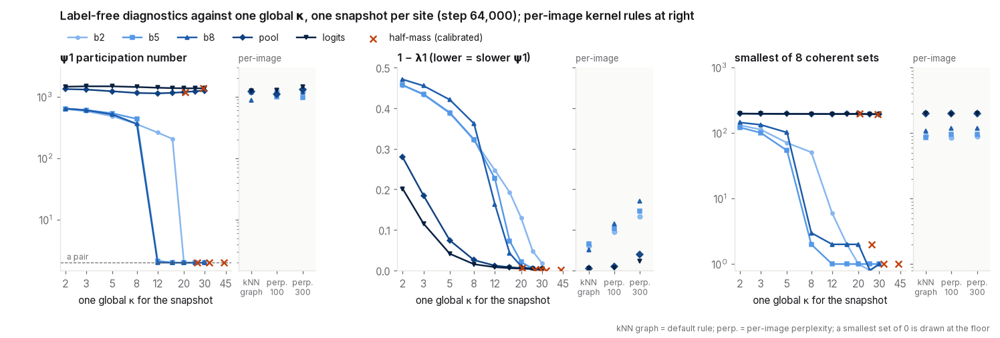
Plotted: single-snapshot operators at step 64,000, one line per site (b2, b5, b8, pool,
logits; light to dark). Wide part of each panel: one global $\kappa$ for the snapshot (log axis); red crosses: the
$\kappa$ the calibrated half-mass rule picks in that snapshot. Narrow grey part: the per-image rules (kNN graph
$k = 15$, perplexity $100$, perplexity $300$). Left: $\mathrm{PN}(\psi_1)$, log scale, dashed line at $2$. Middle:
$1 - \lambda_1$. Right: size of the smallest of the $r = 8$ SEBA sets, log scale (a size of $0$ is drawn at the
floor). Source: sweep.json. Values: $1 - \lambda_1$ in b2, b5, b8 at step 64,000: 0.39–0.47
for global $\kappa \in \{2, 3, 5\}$; 0.05–0.17 under the per-image rules.
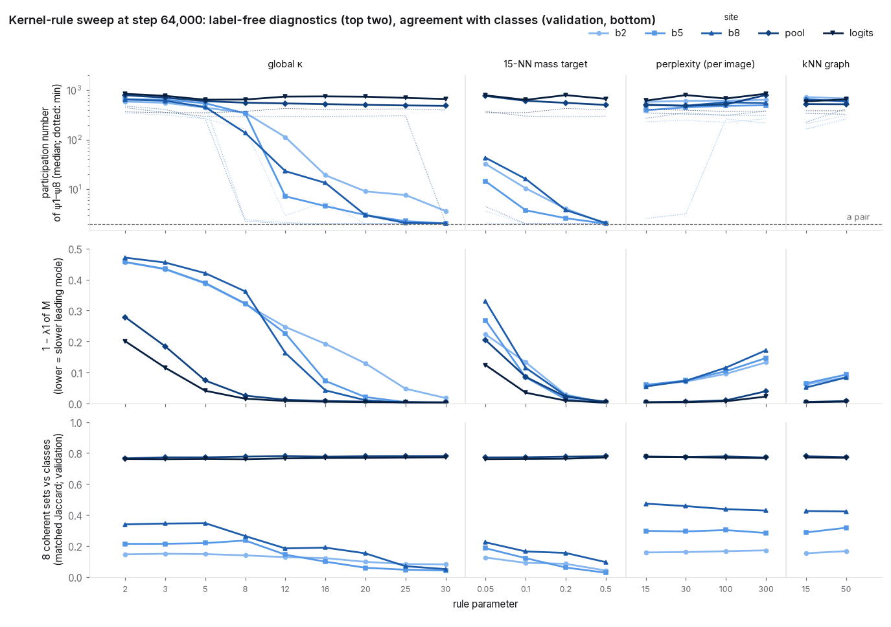
Plotted: all 19 candidate rules at step 64,000,
single-snapshot operators, one line per site (b2, b5, b8, pool, logits; light to dark). x: the rule's parameter,
grouped by family (global $\kappa$; median 15-NN mass target; per-image perplexity; kNN graph $k$). Top: median
$\mathrm{PN}$ of $\psi_1..\psi_8$ (solid) and minimum (dotted), log scale, dashed line at $2$. Middle: $1 -
\lambda_1$ of $M$. Bottom: matched Jaccard of the $r = 8$ SEBA sets with the ten classes (validation, computed after
the choice). Source: sweep.json.
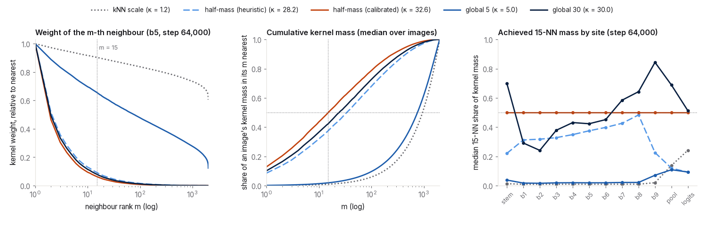
Plotted: five single-$\kappa$ kernels $\exp(-\kappa d)$ at step 64,000: kNN scale,
the two-distance half-mass heuristic, calibrated half-mass, global $\kappa = 5$, global $\kappa = 30$ (legend: their
$\kappa$ at b5). Left: weight of the $m$-th nearest neighbour relative to the nearest, at the median distance over
images for each rank, b5; dotted line at $m = 15$. Middle: share of an image's kernel mass (self excluded, before
Sinkhorn) in its $m$ nearest neighbours, median over images, b5; dotted lines at $m = 15$ and one half. Right: that
share at $m = 15$, per site. Recomputed by site/figdata.py from the same checkpoint and probe.
Cosine or dot product (Euclidean)
Every rule above is a function of the cosine distance $d_{ij} = 1 - \cos_{ij}$, which on unit-norm activations
equals $\lVert \hat x_i - \hat x_j \rVert^2/2$: the construction normalises each image's activation vector and so
discards its norm. The dot (Euclidean) variant keeps the norm. It replaces $d_{ij}$ by the half squared
Euclidean distance induced by the same dot product on the unnormalised, flattened activations,
$D_{ij} = (G_{ii} + G_{jj})/2 - G_{ij} = \lVert x_i - x_j \rVert^2/2$ with $G = XX^\top$, divided by one global scale
per snapshot (the mean of $G_{ii}$ over the probe after centring). All five rules are invariant to that scale, and on
unit rows $D$ is exactly $1 - \cos$, so the cosine construction is the special case. Everything else is unchanged:
probe, checkpoints, sites, rules, scaling, $M = \tfrac12(I + P)$, SEBA, products (SPEC_DOT.md; data tag
r20s0d).
Two identities limit what "dot product" can mean here. For the global-$\kappa$ rules (3 and 4), $\exp(\kappa
G_{ij})$ and $\exp(-\kappa D_{ij})$ differ by a factor $a_i a_j$ with $a_i = \exp(\kappa G_{ii}/2)$, which the
symmetric scaling removes, so an exponentiated dot product is not a separate rule. For the rank-based rules (0, 1, 2),
ranking neighbours by the raw dot product $G_{ij}$ (maximum inner product) does not come from a metric; it was run
once as a diagnostic, below.
How the two are compared. Agreement of two operators is the mean $\cos^2$ of the principal angles between
their leading non-trivial spans ($r$ eigenvectors, constant excluded; a random span gives about $r/N$, with $N$ =
2,000). Label-free diagnostics beside it: the largest 15-NN in-degree (how many images list
one image among their 15 nearest), the 15-NN overlap between the two distances, and the participation number of the
leading eigenvectors. Validation only: agreement of each span with the nine-dimensional span of the class indicators.
Leading modes were recomputed in float64 from the saved operators (data/kernels/compare_single.json,
compare_blocks.json, compare_ggn.json); every comparison stores the eigenvalue gap at its
cutoff, since a near-tie there makes a fixed-rank span unstable.
Measured (single snapshots, step 64,000). Cosine–dot span agreement at $r = 4$ is
0.00–0.59 under rule 0 and 0.37–0.79 under rule 1 at
stem–b8, and 0.94–0.97 under both rules at
b9, pool and logits. At stem–b8 the largest Euclidean 15-NN in-degree
is 790–1,725 of 2,000 images, against
76–253 for cosine, and the two distances share
0.21–0.39 of each image's 15 nearest neighbours; at
b9, pool and logits the largest in-degree under either distance is
49–204. Under rule 0 the dot construction's $\psi_1$ has participation number
2–1,047 at stem–b8 (at most $3$ at
6 of these 9 sites), against
894–1,331 for cosine at every site. Under rule 1 the median participation number of
$\psi_1..\psi_8$ at stem–b8 is 12–482
(dot) against 483–760 (cosine). For the full stem–logits layer block (average
operator) the span agreement at $r = 4$ is 0.80 (rule 0) and
0.89 (rule 1), and the matched Jaccard of the SEBA sets is
0.67 and 0.69 at $r = 4$,
0.74 and 0.82 at $r = 8$. Validation:
the median over sites of the class-span agreement at $r = 10$ is 0.30
(cosine) and 0.11 (dot) under rule 0,
0.29 and 0.21 under
rule 1.
The choice. The construction stays on cosine. The dot product on each view is the theory's one geometric
assumption, and the cosine is that dot product on normalised activations; the norm-keeping variant is the
alternative this section measured. On this network the measured differences are the ones above: at
stem–b8, under rule 0, larger largest in-degrees and leading eigenvectors with smaller
participation numbers; at b9, pool and logits, span agreement of 0.94–0.97
between the two.
Plotted: for each site's single snapshot at step 64,000, the mean
$\cos^2$ of principal angles between the leading non-trivial span of the cosine operator and that of the dot
(Euclidean) operator; colour: kernel rule (rule 0, rule 1); solid: $r = 4$ eigenvectors; dashed: $r = 10$. A random
pair of spans gives about $r/N$. Source: compare_single.json.Plotted: for each site at step 64,000, the largest in-degree of the
directed 15-nearest-neighbour graph (the number of images that list one image among their 15 nearest), under the
cosine distance and under the Euclidean distance of the unnormalised activations; y from $0$ to $N$. Label-free.
Source: compare_single.json (hubness).
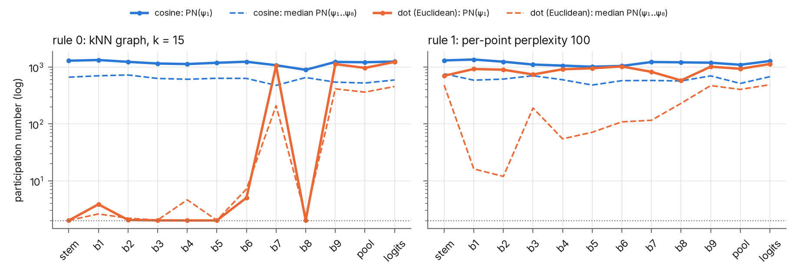
Plotted: for each site's single snapshot at step 64,000, the
participation number $1/\sum_i \psi_i^4$ of the unit eigenvectors of $M$ (log scale): solid, $\psi_1$; dashed, the
median over $\psi_1..\psi_8$; blue, cosine construction; orange, dot (Euclidean) construction. Left panel: rule 0;
right panel: rule 1. Dotted line at $2$ (two images carry the whole vector); $N$ = 2,000
when all entries have equal size. Computed from the exported eigenvectors (layer_64000.npz of
r20s0b and r20s0d).Plotted: for every layer block from site $a$ (row) to site $b$ (column), $a \le b$, the mean
$\cos^2$ of principal angles between the leading $r = 4$ non-trivial spans of the cosine and the dot average
operators $\bar M$, kernel rule 0; the slider selects the checkpoint. Diagonal: single snapshots. Source:
compare_blocks.json.More views: rule 1 and set agreement on blocks, agreement over training, class-span validation, gradient-side references, raw dot rankingPlotted: as the block heatmap above, kernel rule 1.Plotted: for every layer block $a..b$, matched Jaccard (Hungarian matching, hard sets, unassigned
images in no set; definition) between the $r = 4$ SEBA sets of the cosine
and the dot average operators, kernel rule 0; the slider selects the checkpoint.Plotted: as the set heatmap above, kernel rule 1.Plotted: cosine–dot span agreement at $r = 4$ for each site's single snapshot (rows) at each
checkpoint (columns), kernel rule 0.Plotted: as above, kernel rule 1.Plotted: validation only. For each site's single snapshot at step
64,000, the squared Frobenius overlap of the leading $r = 10$ non-trivial span with the
span of the ten class indicators (constant removed), divided by the smaller rank; solid: cosine, dashed: dot;
colour: kernel rule.Plotted: for each site at step 64,000, kernel rule 0, the span
agreement ($r = 10$) of the dot site operator with a fixed gradient-side reference operator minus that of the cosine
site operator with the same reference; one line per reference (GGN-cos, GGN-dot, NTK-cos and NTK-dot: the
label-free GGN and trace-NTK sample kernels, each in cosine and dot form; definitions in
Appendix C). Horizontal line at $0$. Values:
−0.37 to −0.07 at stem–b8
(36 of 36 site–reference pairs below
$0$), −0.02 to 0.02 at b9, pool and logits; full stem–logits average
block, $r = 4$ and $10$: −0.12 to −0.02. Source: compare_ggn.json.Plotted: the raw-dot-ranking diagnostic: rule 0 built from the top 15 neighbours by $G_{ij}$ on
centred activations (union, same scaling), step 64,000, for each site: solid, its 15-NN
overlap with the cosine and with the Euclidean neighbours; dashed, the span agreement ($r = 4$) of its operator with
the cosine and with the dot operator. Also stored for step 2,560 and 64,000.
Values: span agreement with cosine 0.79–0.96 at
b1–b9 and 0.00–0.01 at stem, pool and logits; with
dot 0.00–0.93 at b1–b9 and
0.00 at stem, pool and logits; median over sites of the 15-NN overlap
0.71 with cosine and 0.17 with Euclidean; largest 15-NN
in-degree 92–430.
Limits. One network and one seed; the inherited probe was stratified by label (the kernels and bases use no
labels, but the sample was chosen with them); fixed-rank spans are noisy where the cutoff is near a tie (the gaps are
in the JSON). The arc-cosine kernel was not run: in its angular form it ranks neighbours exactly as the cosine does.
Open b5
under the dot kernel in the explorer: the Kernel switch is under more options. The dot data ship
rules 0 and 1 only; the seed-1 layout is cosine-only, and the dot PCA layout is rotated onto the cosine one for
display.
Average versus product
A block's default operator is the average $\bar M = \frac{1}{|B|}\sum_{c \in B} M_c$ of its snapshots' walks. It
ignores the order of the snapshots. The alternative is to compose them.
The project's theory builds on a product, not an average. For a layer block $a < b$, the
chronological product $Q = M_b \cdots M_a$ (functions are column vectors; layer $a$ applied first) is the nearest
cross-layer object: its right singular vectors are functions at layer $a$, its left singular vectors their
normalised images at layer $b$ (Froyland's coherent pairs). The title's "cross-Hankel" is an analogy to this: for a
time series $y$, a Hankel matrix $H_{ij} = y_{i+j}$ has windows of the past as rows and of the future as columns, and
for linear systems its leading singular vectors give a small state through which the past influences the future;
$Q$ plays that role between layer $a$ and layer $b$.
To first order in the step size the two agree: if $M_c = I - \varepsilon L_c$, then $Q^\top Q = I - 2\varepsilon
\sum_c L_c + O(\varepsilon^2)$ and $\bar M = I - \tfrac{\varepsilon}{|B|}\sum_c L_c$, so they share leading vectors
up to $O(\varepsilon)$ when the relevant eigenvalues of $\sum_c L_c$ are simple. Beyond first order they differ:
$(\tfrac12(M_a + M_b))^2$ contains $\tfrac14(M_aM_b + M_bM_a)$, while $Q^\top Q$ does not average.
avgprod.json reports, for rules 0 and 1, with the constant projected out of both sides, the mean
$\cos^2$ of principal angles between $\mathrm{span}(\psi_1..\psi_r)$ of $\bar M$ and the top-$r$ non-trivial right and
left singular vectors of $Q$ and of the two-end product $M_b M_a$, $r \in \{3, 6\}$. At step 64,000,
$r = 3$, over the 66 layer pairs, median (lowest): kNN graph, k = 15,
0.989 (0.836) for the right and 0.991 (0.881) for the
left singular vectors of $Q$, and 0.973 (0.632) and
0.975 (0.641) for the two-end product; per-point perplexity 100,
0.993 (0.645) and 0.995 (0.649), and
0.979 (0.664) and 0.981 (0.661). With $r = 6$
the medians are 0.96–0.99.
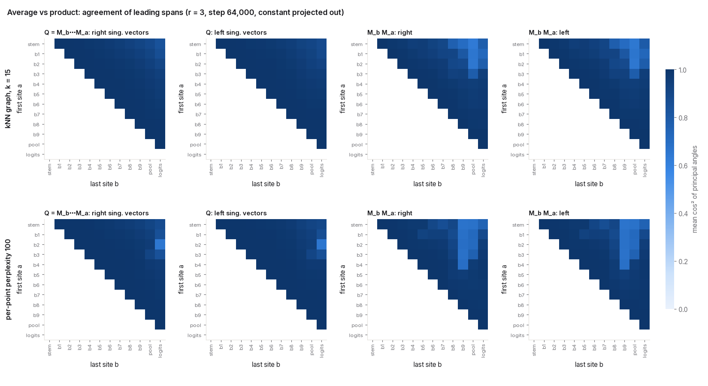
Plotted: step 64,000, $r = 3$, constant projected out. Row: first site $a$; column:
last site $b$ ($a < b$). Colour: mean $\cos^2$ of principal angles between $\mathrm{span}(\psi_1, \psi_2, \psi_3)$ of
$\bar M$ for block $a..b$ and, by column of panels, the top-$3$ non-trivial right singular vectors of $Q = M_b \cdots
M_a$, its left singular vectors, and the right and left singular vectors of $M_b M_a$. Top row of panels:
kNN graph, k = 15; bottom row: per-point perplexity 100. Source: avgprod.json.
Product blocks in the explorer
The explorer's Operator switch replaces $\bar M$ by the ordered product, for every layer and time block and
every kernel rule. With $C_c = M_c - \mathbf 1\mathbf 1^\top/N$ (the constant projected out; each $M_c$ is symmetric
and doubly stochastic, so $C_c = M_c(I - \mathbf 1\mathbf 1^\top/N)$), the block operator is $Q = C_b \cdots C_a$,
first snapshot applied first, with singular value decomposition $Q = \sum_k \sigma_k u_k v_k^\top$. Product ·
start shows the right singular vectors $v_k$: the functions on the probe images that keep the largest share
$\sigma_k = |Q v_k|$ of their norm after being smoothed by every snapshot of the block in turn. Product · end
shows $u_k = Q v_k / \sigma_k$, what they have become after the last snapshot. Both are exported in exactly the
average's format ($\sigma_0 = 1$ for the constant, SEBA on $v_0..v_{r-1}$ or $u_0..u_{r-1}$), from a
float64 eigensolve of $Q^\top Q$ or $QQ^\top$.
Two properties differ from the average. The product is multiplicative: a function's survival is the
product of its step gains $g_c = |C_c w_{c-1}| / |w_{c-1}|$ ($w$ the function pushed through the block so far,
from first to last snapshot for $v$, from last to first for $u$), so one snapshot that erases a split sinks it, where
the average only dilutes it. The explorer's retention strip shows these gains (solid) next to $\rho_c$ (dashed); for
$\psi_k$ they multiply to $\sigma_k$ (largest absolute difference $1.4 \times 10^{-7}$ over
10,560 exported block–rule pairs). The product is order-sensitive, but only
up to reversal: each $M_c$ is symmetric, so reversing the snapshots transposes $Q$, which keeps the singular values
and swaps start and end. The average ignores order entirely. No order-specific test (for example an ordered against a
reversed chain on data that are not symmetric) has been run, so this is a comparison of constructions, not an
experiment.
Measured at step 64,000, kNN graph, k = 15, $r = 4$: matched Jaccard between the
average's and the product's hard sets on the same block, mean over the layer blocks of each length,
0.99 (start) and 0.99 (end) for two sites,
0.95 and 0.95 for four,
0.90 and 0.91 for six,
0.83 and 0.86 for eight,
0.76 and 0.80 for ten, and
0.64 and 0.77 for the full stem–logits
block. For the full block the leading spans agree more than the sets (mean $\cos^2$
0.84 start, 0.88 end), and the singular
values $\sigma_{1..3}$ are 0.38, 0.20, 0.14 against $\lambda_{1..3}$ =
0.91, 0.85, 0.82: averaging and composing the walks give different scales, so $\sigma$ is compared
only with $\sigma$. Validation only (matched Jaccard with the classes, full block): average
0.41, product end 0.42, product start
0.29 at $r = 4$; 0.61,
0.74 and 0.38 at $r = 8$. One network,
one seed; product_summary.json has every block, rule and $r$.
Plotted: step 64,000, $r = 4$, against the number of sites in a layer block
($b - a + 1$), each value the mean over the layer blocks of that length (of the
66 blocks with $a < b$): solid, matched Jaccard between the average's SEBA sets and the product's start (blue) or end (orange) sets,
rule 0; dotted, mean $\cos^2$ of principal angles between the average's leading $r - 1$ non-trivial span and the
product's, rule 0; dashed, the solid quantity under rule 1. Source: product_summary.json.
Construction ablations and the robustness of the end-of-training sets
Each row of the ablation table changes one choice of the default construction and keeps the rest, on the
12 representative blocks of Appendix B (fixed before any class outcome was
looked at).
The factors and their levels
A the graph (union kNN with $k = 5, 15, 50, 150$; mutual 15-NN; per-image perplexity $30, 100, 300$; a
locally scaled kernel; an $\varepsilon$-ball at the default's mean degree; four global temperatures), each also at a
matched median effective neighbour count $1/\sum_j P_{ij}^2$; B the floor added before balancing; C the
normalisation (Sinkhorn against $D^{-1/2}K^{(\alpha)}D^{-1/2}$ and the raw adjacency scaled by its norm); D the
diagonal (kept kernel diagonal; products of non-lazy walks with laziness $\gamma$); E how a block combines its
snapshots (mean of $M$, mean of $M^2$, ordered product, two-end product, products of heat kernels, one graph on the
concatenated view, union and intersection graphs); F the weights of a time block's checkpoints; G the
SEBA threshold; H the view (uncentred cosine; spatially averaged features); I the number of images.
Plotted: one panel per factor, for one representative block and rank $r$: each level's sets
against the default's (AMI on jointly assigned images with coverage and its own permutation 95th percentile; matched
Jaccard with its permutation mean), the subspace overlap of its $r-1$ leading directions with the default's (chance in
brackets), for Markov levels the level's own subsample stability (S1) and its first eigenvalue's excess over the
trajectory-shuffle 95th percentile, and its leading eigenvalue or singular value in its own convention (named beside
it; hover for the full statement). Levels that are not Markov operators, such as the raw adjacency, have no
retention, stability or shuffle excess. Levels that could not be computed show the stored error.
The b7..pool sets under other rules and readouts
The end-of-training sets are those of the layer block b7..pool at step
64,000, rule 0. The same sets can be compared with the sets of the same block under the other four rules,
with b9's single snapshot, and with b9's time block from step 2,560 to
64,000. At $r = 4$ the matched Jaccard is 0.91,
0.82, 0.76 and
0.18 against rules 1 to 4, 0.76 against b9
alone and 0.90 against b9's late time block; the largest 97.5th percentile of
the permutation null among these comparisons is 0.15. Rule 4 is the rule that
fails in the middle layers (Method).
Plotted: matched Jaccard between the SEBA sets of b7..pool (layer block, step
64,000, rule 0) and, by column, the same block under rules 1 to 4, b9's single snapshot, and b9's time
block from step 2,560 to 64,000 (both rule 0); markers: $r = 2, 3, 4$
(colours); bands: the 2.5th to 97.5th percentile of 1,000 permutations of the b7..pool
labels (set sizes and unassigned count kept). Computed from the stored seba_label arrays.
The SEBA rank $r$
SEBA rotates the leading $r$ eigenvectors (constant included) into $r$ sparse vectors and thresholds them into at
most $r$ hard sets. Every block is exported at $r \in \{2, 3, 4, 6, 8\}$, and the explorer and the experiments use
$r = 4$ unless they say otherwise. $r$ is a resolution, not a number the spectrum supplies: a choice of $r$ would be
read off the spectrum only if one gap $\lambda_{r-1} - \lambda_r$ stood out, and the chart below shows the gaps at
every exported resolution. Over the 13 operators in it, the largest gap falls at
r = 2 at 8, r = 4 at 2, r = 5 at 1 and r = 8 at 2 operators. How the sets at one $r$ relate to those at another (whether finer
sets refine coarser ones) is measured by the rank-nesting entropy (Appendix
C) and shown for the end-of-training sets in that experiment.
Plotted: the eigenvalue gap $\lambda_{r-1} - \lambda_r$ of $M$ (lazy scale, $\lambda_0 = 1$ the
constant) at each SEBA rank $r$ (columns), for each site's single snapshot and the layer block b7..pool (rows), step
64,000, rule 0. Source: layer_64000.npz (vals).
The cut $k$ of an operator comparison
The projector distance $d_k$ between two snapshots compares their leading $k$ eigenvectors
(definition). A cut is resolved in a snapshot when two rebuilds of its operator
on overlapping subsets of the images agree on the leading-$k$ span; the stability horizon is the largest resolved $k$
(Appendix C). The experiments report $d_k$ at a cut named in each, with unresolved
cuts drawn hollow.
Plotted: projector distance $d_k$ between adjacent sites ($i$, $i+1$) of one network at one
checkpoint against $k$ (log scale); one line per adjacent pair, light (stem–b1) to dark (pool–logits); filled circles
are resolved cuts and hollow circles unresolved ones. Grey band: the range of the seed floor $d_k$ over the sites whose
cut is resolved in both seeds, with its median dashed; where no site's floor cut is resolved there is no band and the
median, taken over all sites, is drawn hollow; thin grey line: the chance line $1 - k/(N-1)$; vertical dotted lines:
the median and the range of the sites' stability horizons. Values (rule 0, step 64,000):
stability horizon of ResNet-20 seed 0, median 10 (range
4–16); smallest $k$ at which more than half of the adjacent pairs have an
unresolved cut: 6.
network
stability horizon: median (range)
smallest $k$ with most adjacent cuts unresolved
unresolved share, $k = 8$
unresolved share, $k = 16$
ResNet-20, seed 0
10 (4–16)
6
82%
100%
ResNet-20, seed 1
9 (3–27)
7
82%
100%
ResNet-32, seed 0
8 (4–13)
5
59%
100%
ResNet-32, seed 1
9 (5–14)
5
71%
100%
ResNet-56, seed 0
9 (5–13)
6
72%
100%
ResNet-56, seed 1
9 (4–13)
6
45%
100%
Rule 0, step 64,000. Unresolved share: the fraction of adjacent site pairs whose
cut $k$ is unresolved in either snapshot.
Layouts (display only)
Per checkpoint: umap.AlignedUMAP across the twelve sites (identity relations between consecutive
sites), n_neighbors=15, min_dist=0.1, alignment_regularisation=0.02,
random_state=0, on the top $50$ principal components ($u_k\sqrt{\lambda_k}$ from the eigendecomposition
of $C$) of each snapshot.
Across checkpoints, per site: centre, scale to unit RMS, orthogonal Procrustes (reflections allowed) onto the
previous checkpoint, then rescale to the $0.5$ and $99.5$ percentiles for drawing. The within-checkpoint alignment is
part of the UMAP objective and shapes the layouts; across checkpoints only rotation, reflection, centring and scale
change.
No quantity is computed from the two-dimensional coordinates. Distances in a layout are not distances in the
operator.
Other seed ("layout from"). A second ResNet-20, identical recipe, training seed 1; only its activations' top
$50$ PCs and its own AlignedUMAP and Procrustes layouts are computed, for the same probe images and steps. Colours
always come from seed 0's blocks. Seed 1's layouts are aligned along its own checkpoints, not onto seed 0's.
Spectral layout. For each snapshot, the diffusion coordinates $\lambda_k \psi_k$, $k = 1..32$, of that
snapshot's own lazy walk $M_c$ under the kNN graph, k = 15 rule (diffusion map at $t = 1$; constant excluded;
the same single-snapshot eigenfunctions the explorer shows for $a = b$, extended to $32$), then the same AlignedUMAP
and Procrustes steps as above. It is fixed per snapshot and does not change with the selected block or kernel
rule.
Under the dot kernel, the PCA layout uses the top $50$ PCs of the centred dot Gram and is rotated onto the
cosine layout for display; the other-seed layout is not available.
Variants of the construction
The transfer-operator pilot
A pilot of one more variant, labelled as such. For two snapshots $a$ and $b$ of the same images, the transfer
operator $(Tf)(y) = \mathbb E[f(X) \mid Y = y]$ maps a function of the images at $a$ to its best prediction at $b$;
its singular functions are the pairs of source and destination observables with the largest correlation. Because
each image is one exact pair, an unrestricted estimate reproduces the pairing itself, so every estimate here uses a
declared finite function space and is judged on held-out images. Estimators: linear CCA on cosine PCA scores,
a soft Ulam joint table on landmarks, and whitened cross-covariance on Nyström or diffusion-coordinate features (the
ridge terms are fits; definitions in Appendix C).
12 pairs were fixed in advance; each of 10 splits uses
1,000 / 500 / 500 images (fit / tuning / test). The control permutes the pairing inside each split and
repeats the whole procedure, tuning included (200 permutations).
Plotted: one real pair and estimator: held-out correlation of each of the six leading fitted
functions, median and range over the 10 splits, with the 95th percentile of the independence
control. The text under the chart gives the overlap of the leading source functions with the source span of the
existing product $Q = M_bM_a$ and with the two-snapshot average, against chance (computed on all images, so
transductive).More views: synthetic check, supported functions per pair, the sample-size curve on the full test set and the composition testPlotted: synthetic check on benchmark P8 ($\sigma$ = 0.35), where the operator's
singular values are known: held-out correlation of one fitted function against the number of fit images, per
estimator, with the known value (line) and the independence-control band. Status: S (ridge terms are fits).Plotted: for each real pair (rows) and estimator and landmark count (columns), the number of
leading functions counted as supported at this resolution by the preregistered rule. Hover for the per-function split
counts and the held-out VAMP-2 score (the squared Frobenius norm of the test-split cross-covariance of the six fitted
source and destination functions, each side whitened by its regularised test covariance with the tuned ridge; see
Appendix C) with its control value.Plotted: the sample-size curve from the full CIFAR-10 test set (split
6,000 / 2,000 / 2,000): held-out correlation of the first six functions at $N_{fit}$ = 500, 1,000, 2,000, 6,000,
with the control band (50 permutations). Final checkpoint pairs only.Plotted: on 4 chains $a \to b \to c$ fixed by the builder, the norms of the
two exact parts of the composition discrepancy $T_{bc}T_{ab} - T_{ac}$ (regulariser term and partial term) and of the
held-out residual cross-moment, against the requested size of the intermediate basis (actual dimensions annotated);
the norms of the parts do not add up to the norm of the discrepancy, which is not plotted. Right: the partial term and
the held-out residual on a synthetic chain that is Markov by construction and on the same chain re-paired at
random.
The pilot also stores SEBA sets built from the transfer functions where their held-out stability passed a
threshold. They are exploratory summaries computed on all images after fitting (the held-out correlations evaluate
the fitted function pairs on held-out images, not the partitions), and they are not shown on this page or in the
explorer.
Appendix B. Is the method sound? Baselines, nulls and stability
The experiments read numbers produced by one construction. This appendix asks whether those numbers
mean what they are taken to mean: it puts the method next to simpler methods run on the same blocks and next
to null data that keep some properties of the activations and destroy others, and it checks how far the
method's output moves with the sample, the starting point, the rank, the machine and the choice of distance. Each
section opens with the question it checks about the method. The charts describe; they do not grade. In the
Explorer, the Sets from control paints any of these sources on every panel.
Everything here uses kernel rule kNN graph, k = 15 and the average operator $\bar M$ (the default
construction), on the 2,000 probe images. "The method" means SEBA sets from $\psi_0..\psi_{r-1}$ of $\bar M$,
for $r \in \{2, 3, 4, 6, 8\}$ (definitions: Appendix C). The sources were computed
on all 1,056 explorer blocks; the nulls with many draws and the stability checks on
12 representative blocks fixed before any class outcome was looked at.
The representative blocks
The single snapshots stem, b5, b9 and logits at step 64,000; the layer blocks stem to b3, b4 to b6, b7
to b9 and stem to logits at step 64,000; b4 to b6 at steps $0$ and $1{,}024$; and the time blocks from
step $1{,}024$ to 64,000 at b5 and at b9.
Reading a null
What it checks. Every number below is read against a reference. Without one, a spectrum or an agreement
score cannot be told apart from what the same procedure returns on data that lack the structure in question; this
section says how the references are built and how to read them.
A null is a way of generating data, or labels, that keeps some properties of the real thing and destroys
others. Running the method on many draws of a null gives a spread of values; the band shows that spread (here the
5th to 95th percentile of the draws unless a caption says otherwise). A real value inside the band is one that this
generator's recorded draws covered; a value outside it lies outside the central 90% of the recorded draws. No null
here is the null: each one answers a different question, so every chart names the null it shows and what that
null keeps.
Agreement scores come with a permutation value: the score when one labelling is shuffled across the images
with its set sizes kept (1,000 shuffles for the stored comparisons, 200 for the few
computed by the site build). That 95th percentile is for one block and one $r$. If you scan many blocks and
pick the largest score, compare it with the scanned-blocks reference instead: shuffle the labels in every
block scanned, take the largest score over those blocks, repeat, and read the 95th percentile of that largest score.
It comes from shuffled labels, not from the observed scores.
A worked example: reading one agreement score
Open the explorer on the layer block b4 to b6 at step 64,000, $r = 4$, and choose Sets from:
cosine PCA + SEBA (this
view). The side card reads: AMI on jointly assigned images 0.63, coverage 88%,
permutation 95th percentile 0.002, scanned-blocks reference 0.004. In words: both
methods put 88% of the images in some set; on those images, how much the two partitions coincide is
measured as 0.63 on a scale where $0$ is what shuffled labels give and $1$ is the same partition. Shuffling
the labels of this one block gives values up to 0.002 in 95% of shuffles, and the largest over all
78 layer blocks at that step, under shuffling, stays below 0.004 in 95% of
shuffles. Matched Jaccard: 0.66, against a permutation mean of 0.14 (it is not near $0$
under shuffling, because it depends on the set sizes). None of these numbers says which of the two partitions is
preferable; they say how far they coincide.
The sources and the nulls
What it checks. Which simpler procedures and which kinds of null data the method is compared with, and
what each comparison can rule out. A source that returns the method's sets without its construction would make the
construction unnecessary for those sets; a null that returns them would make them a property of what that null
keeps.
Status tags, as on the explorer's control: S a label-free spectral object built from dot
products; P post-processing, a diagnostic or a null generator; B a
fitted baseline outside the construction (k-means fits); V uses the CIFAR class labels
(validation, or a null whose strata are classes). Each source gives one hard label per probe image; unless stated,
it has $r$ sets.
source
status
what it is
question it lets you check
the method
S+P
SEBA on the leading eigenvectors of the block operator $\bar M$
the reference for every comparison
cosine PCA + SEBA
S+P
the same SEBA step on the top $r-1$ principal directions of the block's centred cosine Gram (no graph)
are the sets the leading principal directions, made discrete?
PCA + k-means
B
k-means on the block's PCA scores
the same, with a clustering fit instead of SEBA
spherical k-means
B
k-means on the normalised activations, through the block Gram
a clustering of the cosine geometry with no spectral step
the same $k = 15$ nearest-neighbour graphs with $D^{-1/2}AD^{-1/2}$, no Sinkhorn, no lazy step
what Sinkhorn, laziness and SEBA change together
first / middle / last snapshot
S+P
the method on one snapshot of the block
are the block's sets those of one of its snapshots?
co-assignment consensus
P
a vote: how often the snapshots' own sets put two images together
voting on sets against averaging operators
mean-projector consensus
S+P
the average of the snapshots' leading spans
spans only against full spectra
pixels
S+P
the method on the network's input (normalised pixels) as one snapshot
do the sets belong to the images rather than the network?
untrained network
S+P
the method on the same layer block at step $0$
the same question, with an untrained network
other training seed
S+P
the method on the same layer block of a second network (seed 1), final checkpoint
what two trainings share
classes; predicted class
V
CIFAR labels; the network's prediction (ten sets each)
are the sets the labels or the output?
null
status
keeps
destroys
where
trajectory shuffle
P
every snapshot's walk exactly; the block's first snapshot is not shuffled
that row $i$ is the same image in every snapshot
$20$ draws on the representative blocks; one draw (seed 0) on every explorer block
within-class trajectory shuffle
P+V
every snapshot, and each image's class in every snapshot
which image within a class is which, across snapshots
$20$ draws, representative blocks
spectrum-matched Gaussian
P
each snapshot's feature-covariance spectrum, in expectation and before the pipeline's centring and row normalisation
higher moments; every link between snapshots
$20$ draws, representative blocks
joint second-order surrogate
P
the mean and all within- and cross-snapshot second moments before the unit diagonal is restored; after restoring, the stored cross-snapshot second-moment diagnostic changes by up to 34.1% over the representative blocks (7.9% for b4 to b6)
all image-level structure beyond second moments
$20$ draws, representative blocks
degree-preserving rewiring
P
each image's number of graph neighbours
which images are neighbours
$10$ draws, representative blocks
random subspaces for SEBA
P
$N$ and $r$
the operator: SEBA rounds a random $(r-1)$-dimensional subspace
1,000 draws per $r$
random SEBA start
P
the span of $\psi_0..\psi_{r-1}$
the starting rotation of SEBA
$20$ draws, representative blocks
label permutation
P
the set sizes and the number of unassigned images
which images are in which set
every agreement score
isotropic Gaussian cells (synthetic)
P
$N$, the dimension, the pipeline; optionally a shared component across cells
everything else
planted benchmark P0
Spectra against null bands
What it checks. Whether the block operator's leading eigenvalues differ from those of data that keep part
of the activations' structure and destroy the rest. If a null gave the same leading eigenvalues, the leading modes
could come from what that null keeps (for the trajectory shuffle, each snapshot's own walk; for the Gaussian, each
snapshot's covariance spectrum) rather than from the images being the same images across the block.
Plotted: the eight leading non-trivial eigenvalues of the block operator, written as
$\lambda_P = 2\lambda_M - 1$ (the non-lazy convention), for the chosen representative block (black), and for each null
the median (dashed) with the 5th to 95th percentile over its draws (band). The table gives SEBA at rank $r$ on the
real block and on the null draws: share of images unassigned, size of the smallest set, AMI with the classes, and AMI
of the null draw's sets with the method's sets on the images both assign. Status: P (null generators).
Class agreement under the trajectory shuffle is not a zero reference: the shuffle leaves the block's first snapshot
in place, so sets that follow that snapshot keep its class structure. Its band is in the table under this chart.
Agreement between sources
What it checks. Whether the method's sets are something a simpler procedure also returns, and whether they
belong to the trained network rather than to the input images (the pixels source), to the architecture before
training (the untrained network source) or to one training run (the other training seed source). High
agreement with a simpler source says the construction is not needed for those sets; high agreement with pixels or
with the untrained network says the sets could be read off the images or the architecture alone.
Plotted: for one representative block (opening on b7 to b9 at step 64,000) and rank
$r$, the agreement of every pair of sources' hard sets: AMI on the images both assign (or matched Jaccard), including
the classes, the predicted class and one draw of each null. Hover a cell for the coverage (share of images both
assign) and the permutation references for that pair (AMI: 95th percentile; matched Jaccard: mean and 95th
percentile); a white dot marks a value at or below its own 95th percentile. Computed by the site build from the stored
labels with 200 permutations.Plotted: every explorer block of one checkpoint (layer blocks) or one site (time blocks): one dot
per block for each source's agreement with the method's sets at the same block and $r$. Grey bar and tick: a
reference from shuffled labels, not an observed value: the 95th percentile of the largest agreement over these blocks
when every block's labels are shuffled; it is the reference for a value picked by scanning. The "classes" row is the
method's sets against the class labels. Status tags as in the sources table.
The three sources outside the network under study, on the representative blocks at step
64,000, $r = 4$: AMI of each source's sets with the method's sets on the images both assign, with the
coverage in brackets. The permutation 95th percentile of every value in the table is at most
0.002. The pixels source is one set of sets (the method on the input), compared with each
block's sets; the untrained-network and other-seed sources are the same block computed on that network.
What it checks. Whether SEBA returns sets even when there is nothing to find. SEBA and k-means declare $r$
set slots whatever they are given; some slots may stay empty, and SEBA can leave images unassigned. If SEBA on a
random subspace gave the same unassigned share and set sizes as on the method's eigenvectors, those properties of
the sets would come from the rounding step, not from the operator. The second check asks how much SEBA's answer moves
with its starting rotation.
Plotted: SEBA on 1,000 random $(r-1)$-dimensional subspaces orthogonal to the
constant, $N$ = 2,000: median (dashed) and 5th to 95th percentile (band) of the share of images left
unassigned, of the smallest set's share, or of the clipped negative mass; dots: the method on the
12 representative blocks. Table: on the chosen block, SEBA started from $20$ random rotations of
$\psi_0..\psi_{r-1}$, compared with the default start (joint AMI and coverage). Status: P.
Stability
What it checks. Whether the sets would change with a different sample of images, on images the
construction has not seen, with the rank $r$, or with one snapshot of the block left out. A grouping that moves with
the sample cannot be read as a property of the network; one that survives on held-out images is not an artefact of
fitting the probe.
Plotted: for one representative block, S1, agreement of the method's sets on ten
subsamples of $80\%$ of the images (drawn without replacement; centring, normalisation, graph and balancing all
recomputed) with the sets on all images, on the shared images; S2, a fit on $1{,}500$ images extended to
$500$ held-out images with everything frozen (centring from the fit images, Sinkhorn factors, SEBA rotation), against
a refit on all 2,000, and the retention of each extended set on a graph built from the test images alone,
minus its size null; S3, the conditional entropy of the sets at $r$ given the sets at $r' > r$; and the
retention of the block's sets, recomputed without one snapshot, on the omitted snapshot and on the first snapshot after
the block.More views: subsample stability of every single snapshot, and the check on the full CIFAR-10 test setPlotted: S1 for each single snapshot at step 64,000: median over the ten subsamples
of the joint AMI (or the subspace overlap) with the full-sample sets, one line per $r$. Table: the default
construction on the $10{,}000$ CIFAR-10 test images for the representative blocks of at most three snapshots at the
final step, with $k = 15$ and $k = 75$, compared on the 2,000 probe images with the probe-only sets
(joint AMI, coverage in brackets).
Linear content and CKA
What it checks. Whether the method is principal components, or a standard similarity index, in another
form. If the method's span reproduced the block's cosine Gram as well as the principal directions do, and the
principal directions were as smooth under the walks as the method's eigenfunctions, the graph construction would add
nothing to PCA; if CKA between snapshots tracked the overlap of their eigenfunctions and the agreement of their sets,
it would add nothing to CKA.
Variance capture asks how much of the block's cosine Gram the method's span reproduces, against the best any
span of that dimension can do (the principal directions). The Dirichlet energy asks the reverse: how smooth the
principal directions are under the snapshots' walks, against the method's eigenfunctions. CKA (centred kernel
alignment) compares the snapshots' Gram matrices with each other; here it is shown next to the overlap of their
leading eigenfunctions and the agreement of their sets.
Plotted: for one representative block, variance capture of the method's span in the block Gram
and the rank-$q$ optimum ($q = r - 1$), with the range over snapshots; the mean (and largest) Dirichlet energy over
the snapshots of the method's $\psi_j$ and of the $j$-th principal direction; and, snapshot by snapshot, debiased
linear CKA, the subspace overlap of the leading $r-1$ eigenfunctions, and the AMI of the single-snapshot sets (joint,
with its permutation 95th percentile). Status: S for the spectral quantities, P for the set agreement.
Planted benchmarks
What it checks. Whether the method recovers structure where the answer is known, returns nothing where
nothing is planted, and fails in the ways one would predict where the planted structure is not what it is built to
find. On real activations there is no ground truth; synthetic data with a planted answer are the only place the
method can be scored directly.
The synthetic data run through the production code path (centring, row normalisation, the same graph and
operators), 2,050 runs: $10$ seeds, $N \in \{500, 1000, 2000\}$, each benchmark swept along one
difficulty axis. Each cell (the synthetic analogue of a snapshot) is embedded by its own random isometry, which
changes no dot product. The oracle knows the generative form: it projects each preprocessed cell onto the
planted subspace and classifies there with a held-out kNN vote (chance-normalised accuracy $\kappa$) or regresses
($R^2$), so it shows how much of the planted information survives the preprocessing. Truth and oracle are validation
(V); they feed no kernel, basis, rank or selection.
id
what is planted
axis
P0
nothing: isotropic Gaussian cells, independent or sharing a component with correlation $\rho$
$\rho$; P0d: dimension $d$
P1
four groups repeated in every cell
separation $a$
P2
shared linear factors, no groups
factor strength $a$
P3
a weak group repeated in all six cells and a strong cell-specific split in each
nuisance strength $b/a$; P3L: number of cells
P4
P1's groups, with some interior cells replaced by noise
number of noise cells
P5
two linked great circles: groups with no linear separator
noise $s$
P6
a circle with uneven sampling density, no partition
density modulation $\eta$
P7
unequal groups (shares $60/25/10/5\%$) with near-duplicate pairs
contamination condition
P8
two views of a circle, $\phi = 2\theta$ + noise, against independent pairing
phase noise $\sigma$
P9
three cells each encoding a different contrast $u$, $v$, $uv$
signal $a$
P10
a two-level tree whose lower split appears only in later cells
depth signal $\beta_{max}$
P11
communities at the graph level, assortative in some cells and disassortative in others
number of disassortative cells
P12
a small residual MLP trained on $y = (A + B) \bmod 8$
training steps
Plotted: the chosen benchmark's statistic for each method against its difficulty axis, median
over the seeds with the 10th to 90th percentile band; grey lines: the oracle or chance reference named under the
chart. Charts follow the chart specification in NOTES_B.md.Run-to-run variation between machines
What it checks. Whether the benchmark numbers depend on the machine they were computed on.
NOTES_B.md compared two runs of the same code on different machines. Across 4,839
AMI medians the largest difference was 0.10 and the 99th percentile 0.014;
1.4% of medians differed by more than $0.01$ and 0.04% by more than
$0.05$; on P3, P3L, P4, P5, P9, P10 and P11 the difference was at most 0.007.
NOTES_B.md locates the differences in transition regimes, where floating-point differences between hosts
flip near-tied neighbours and votes. The intersection-graph variant often has repeated eigenvalues, and its sets
differed between the runs in 750 of 2,340 AMI rows.
Values from one run are deterministic per seed.
Do the operator distances order pairs the same way?
Measured data: explore/spectral_align/data.
What it checks. The experiments that compare operators (across depth, over training, across networks) read
one distance at one cut $k$. If another distance, or another cut, ordered the same pairs of snapshots differently, a
statement made with one of them would be a statement about that choice. This section measures how far the
distances agree on which pairs are close, including a standard baseline (CKA) that is not part of the construction.
The distances, between two snapshots on the same 2,000 images (full definitions, cut diagnostics
and floors: Appendix C): the projector distance
$d_k = 1 - \|U_k(A)^\top U_k(B)\|_F^2 / k$ between leading-$k$ eigenfunction spans, $k \in \{$1, 2, 3, 4, 5, 6, 7, 8, 9, 10, 12, 14, 16, 20, 24, 32, 40, 48, 64$\}$;
the diffusion-kernel distance $h_t$, one minus the cosine between $M_A^t - \mathbf 1\mathbf 1^\top/N$ and
$M_B^t - \mathbf 1\mathbf 1^\top/N$, with no cut, $t \in \{$1, 4, 16, 64, 256$\}$; the eigenvalue-only
distance $s_k$, which ignores the eigenvectors; and the CKA distance $1 - \mathrm{CKA}$ of the two
centred cosine Grams (baseline).
Plotted: Spearman rank correlation between two distances, taken over a fixed set of snapshot
pairs; rows and columns: $d_k$ for every $k$, $h_t$ for every $t$, the eigenvalue-only $s_k$ for every $k$ and the CKA
baseline; colour from $-1$ (blue) through $0$ (grey) to $1$ (red). Pair sets: within, every pair of distinct
snapshots of one network that share a checkpoint or a site (all 6 networks,
13,824 pairs under rule $0$); across, every site pair of two networks with different
seeds at the final checkpoint (including the two seeds of each depth; 3,600 pairs under
rule $0$).
Selected Spearman correlations (the full matrices are in the chart):
pair of distances
within, rule $0$
across, rule $0$
within, rule $1$
across, rule $1$
number of snapshot pairs
13,824
3,600
12,600
3,600
smallest between any two cuts $d_k$, $d_{k'}$
0.83
0.81
0.86
0.82
$d_1$ vs $d_{64}$
0.83
0.81
0.87
0.82
$d_9$ vs $d_{16}$
0.99
0.98
0.99
0.98
$d_9$ vs $d_{64}$
0.96
0.93
0.96
0.91
$d_9$ vs $h_{16}$
0.98
0.98
0.97
0.98
$h_1$ vs $h_{256}$
0.63
0.70
0.83
0.73
$d_9$ vs CKA (baseline)
0.91
0.91
0.95
0.93
$h_{16}$ vs CKA (baseline)
0.93
0.95
0.97
0.97
$d_9$ vs eigenvalue-only $s_9$
0.57
0.56
0.67
0.67
A rank correlation says whether two distances put pairs in the same order; it does not say whether a cut is
resolved. Whether a cut separates eigenvalues reproducibly is a separate check (the cut diagnostics in
Appendix C; the choice of $k$ in Appendix A).
Iso-accuracy (secondary)
What it checks. Whether comparing networks of different depth at the same training step confounds depth
with progress: deeper networks reach a given test accuracy at a different step. As a secondary comparison, ResNet-20
at its final checkpoint is also compared with each deeper network at the earliest saved checkpoint whose test
accuracy is at least ResNet-20's final accuracy (same seed), accepted only if it overshoots that target by at most
$0.5$ points. This choice is conditioned on an outcome and uses test labels: it is a validation analysis, not
part of the label-free construction, and the equal-step comparisons in
the across-networks experiment are primary.
network
target (ResNet-20 final, same seed)
earliest step at or above
its accuracy
overshoot
status
ResNet-32 seed 0
91.56%
33,280
92.03%
+0.47 points
accepted (overshoot within 0.5 points)
ResNet-32 seed 1
91.51%
33,280
92.16%
+0.65 points
the earliest checkpoint at or above the target overshoots it by 0.65 points (more than 0.5)
ResNet-56 seed 0
91.56%
33,280
92.33%
+0.77 points
the earliest checkpoint at or above the target overshoots it by 0.77 points (more than 0.5)
ResNet-56 seed 1
91.51%
33,280
92.66%
+1.15 points
the earliest checkpoint at or above the target overshoots it by 1.15 points (more than 0.5)
Where a network's checkpoint is not accepted, its iso-accuracy comparison is not made: the tolerance was fixed
before the run and is not relaxed afterwards. In the cross-network figures, "iso-accuracy" is offered as the
checkpoint of a ResNet-20 / deeper pair only for pairs with an accepted checkpoint. With a single accepted deeper
network there is no seed floor at iso-accuracy for that depth (it would need the other seed at its own accepted
checkpoint).
Appendix C. Definitions and statistics
Exact definitions behind the experiments and the other appendices: the defaults, every comparison
statistic with its null and ceiling, the class references and per-image quantities, the baseline sources and nulls,
the distances between operators, and the coarse-graining and Markov quantities. Class labels, losses, gradients and
probe pixels appear here only as comparisons; none of them enters a walk, a block operator or a SEBA rotation, and
none chooses a block, $r$, $k$ or a kernel rule.
Defaults and conventions
Unless a caption or an experiment's scope line says otherwise:
Network and data. ResNet-20, training seed 0, the 2,000 label-stratified probe images ($N$),
8 checkpoints (steps 0, 64, 256, 1,024, 2,560, 6,400, 25,600, 64,000; "final" is step 64,000) and 12
sites. The construction is the one in Method: centred cosine Gram per snapshot, kernel,
zero diagonal, doubly stochastic $P$, lazy walk $M = \tfrac12(I + P)$, block operator $\bar M$ (average over the block's
snapshots).
Kernel rule kNN graph, k = 15 (kNN graph, k = 15, rule 0). The other four rules and the dot
kernel are in Appendix A.
Blocks. Single-snapshot blocks (one site at one checkpoint) unless a layer block $a..b$ or a time block is
named.
SEBA rank $r$ counts the constant: $r = 4$ means SEBA applied to $\psi_0, \dots, \psi_3$ of the block
operator, giving four SEBA vectors. Hard sets: each image goes to the SEBA vector with the largest value;
unassigned images (every SEBA value zero) are in no set. Stored labels
(seba_label) are used, never membership reconstructed from the stored eigenvectors.
Nontrivial rank $k$ (spans, distances, coarse-graining) does not count the
constant: the leading-$k$ span is $\mathrm{span}(\psi_1, \dots, \psi_k)$ with $\psi_0 = \mathbf 1/\sqrt N$ excluded.
Eigenvalue scales. Stored spectra are eigenvalues $\lambda_M$ of the lazy walk $M$. Charts
that show the walk without its lazy half use $\lambda_P = 2\lambda_M - 1$; every chart that uses $\lambda_P$ says so.
$1 - \lambda_M = \tfrac12(1 - \lambda_P)$, so ratios of $1 - \lambda$ are the same on both scales.
Retention of a function in a snapshot is defined in the glossary.
Comparison statistics, nulls and ceilings
Exact definitions and the JSON layout are also in the docstrings of site/analysis.py and
site/analysis_findings.py.
Matched Jaccard, its null and the size ceiling
Hard labelings $A$ ($r_A$ sets) and $B$ ($r_B$ sets; $10$ for the classes), unassigned images in no set:
$J_{ij} = |A_i \cap B_j| / |A_i \cup B_j|$ ($0$ if the union is empty); a Hungarian matching maximises the total $J$
over $\min(r_A, r_B)$ pairs; the score is the mean matched $J$, in $[0, 1]$.
Permutation null. Permute the label vector of $A$, unassigned entries included, which
keeps $A$'s set sizes and unassigned count and $B$ fixed. One bank of $200$ permutations is drawn once from a seeded
generator and reused for every comparison (each null is exact on its own; nulls of different comparisons share draws).
Stored: the null mean $\mu_0$, the $2.5$ and $97.5$ percentiles (the null band) and the maximum over draws.
Size ceiling (against a fixed reference labeling $B$): the same Hungarian mean over
$\min(|A_i|, |B_j|) / \max(|A_i|, |B_j|)$, the largest score any sets with $A$'s sizes could reach against $B$. With
fewer sets than classes it is well below $1$, so a score against the classes is read against its ceiling.
The explorer's Legend card reports the same score with a $30$-draw null. The baselines appendix uses a variant
normalised by $\max(k_a, k_b)$ instead of the number of matched pairs (below).
Normalised excess
For a score with null mean $\mu_0$ and size ceiling $c$: $\text{norm\_excess} = (\text{score} - \mu_0) / (c -
\mu_0)$. It is $0$ at the null mean and $1$ when the sets are as aligned with the reference as their sizes allow. The
excess is $\text{score} - \mu_0$, without the division.
Agreement with the final sets, and between sites
Against the final sets (q_when): for each site and checkpoint, the matched Jaccard of that
single-snapshot block's sets with the same site's sets at the final checkpoint (null: permute the earlier checkpoint's
sets), and with the classes (null: permute the SEBA sets).
Between sites (q_carry): at each checkpoint, the matched Jaccard between the
single-snapshot sets of every pair of sites (no null); of adjacent sites $a$, $a + 1$ (null: permute site $a$'s sets);
and of adjacent layer blocks of width $2$ and $3$ (null: permute the first block's sets).
Milestones over training
Per site, over the 8 checkpoints $t$, with $T$ the last. "Stays" means "at every later
checkpoint as well".
first_step (agreement with the final sets): the first $t$ whose score against the
final sets is above $0.5$ and above its null's $97.5$th percentile. The final checkpoint qualifies trivially (it is
compared with itself). settled_step: the first $t$ from which this holds and stays.
half_step (class bipartition, below): the first $t$
from which $\text{norm\_excess} \ge 0.5$ and stays: at least half of the excess over the null mean that the set sizes
allow. It is not half of the final alignment.
most_step: the first $t$ from which $\text{score} - \mu_0 \ge 0.8\,(\text{score}(T) - \mu_0(T))$ and stays;
undefined if the final score does not exceed its null maximum.
onset_step: the first $t$ whose score exceeds its null maximum and stays (a one-sided Monte
Carlo permutation $p$ of $1/201$ at each such checkpoint, the smallest $200$ draws can give). On this network it is
step 0 at every site, so it dates nothing, and half_step and most_step are the
milestones reported.
Further comparison statistics
AMI (adjusted mutual information, arithmetic normalisation): $\mathrm{AMI}(a, b) = \dfrac{I(a, b) -
\mathbb E\,I}{\tfrac12 (H(a) + H(b)) - \mathbb E\,I}$, where $\mathbb E\,I$ is the expected mutual information over
permutations with the same marginals. $0$ is the chance level and $1$ the same partition. Joint AMI: on the
images both labellings assign, always reported with its coverage, the share of such images. The variant with
"unassigned" as one more category also rewards agreeing on which images are unassigned.
Matched Jaccard, baselines variant: $\frac{1}{\max(k_a, k_b)} \sum_{(i,j) \in \mathcal M} J_{ij}$ over a
Hungarian matching $\mathcal M$ of sets maximising total Jaccard; empty declared sets count.
Largest-over-blocks band: the mean and $95$th percentile, over permutations, of the largest score over all
blocks of one checkpoint (layer blocks) or one site (time blocks) at a fixed source and $r$. Any selection of a
largest value is repeated inside each permutation.
Subspace overlap (also "span agreement"): $\frac1q \lVert U^\top V \rVert_F^2$, the mean
squared cosine of the principal angles between two $q$-dimensional spans with the constant removed; $1$ for equal
spans; for independent random spans its expectation is $q/(N-1)$, the scale reference. A single-mode comparison
($q = 1$) is $\cos^2$ of the angle between two eigenfunctions; it is only meaningful where the cut after the first
nontrivial mode is resolved in both operators (cut diagnostics).
Retention excess: $R_P(A) = \mathbf 1_A^\top P \mathbf 1_A / |A|$ minus its size null $\tau + (1 - \tau)(|A| -
1)/(N - 1)$, $\tau = \operatorname{tr}(P)/N$ ($0$ for the default zero-diagonal walk): the retention of a random set of
the same size.
Variance capture ("kernel reconstruction"): $\lVert \Pi_U G \Pi_U \rVert_F^2 / \lVert G \rVert_F^2$
against the rank-$q$ optimum $\sum_{j \le q} \lambda_j^2 / \sum_j \lambda_j^2$ of $G$. Dirichlet energy of a
unit $f$ under snapshot $l$, as plotted: $f^\top (I - M_l) f = \tfrac12 f^\top (I - P_l) f$.
CKA: $\langle \tilde C_1, \tilde C_2 \rangle_F / (\lVert \tilde C_1 \rVert_F \lVert \tilde C_2
\rVert_F)$ with $\tilde C = HCH$; debiased: the same with U-centred Grams (zero diagonal, unbiased centring),
whose value under independence is near $0$ at finite $N$. CKA is a baseline representation-similarity measure, not
an output of the construction.
Rank nesting: $H(\text{sets at } r \mid \text{sets at } r')$ in nats for $r < r'$; $0$
when the finer sets refine the coarser ones.
Class references and per-image quantities
Class make-up
For the default rule, every layer block and every time block, and $r \in \{2, 3, 4\}$: the $(r + 1) \times 10$
table of counts $n_{jc} = \#\{\text{images in SEBA set } j \text{ with class } c\}$, rows in reliability order, with a
last row for the unassigned images. Heatmaps of it use the colour range $0$ to $200$, the images per class.
The class bipartition at $r = 2$
$B_1$ = {airplane, automobile, ship, truck} ($800$ images), $B_2$ = the other six classes ($1{,}200$). This
reference was chosen after the final $r = 2$ sets had been seen, so it is post hoc. For every kernel rule and
single-snapshot block (and, for the default rule, every time block), the two $r = 2$ SEBA sets are compared with the
two-set labeling $(B_1, B_2)$:
score: their matched Jaccard (for $2 \times 2$, the better of the two pairings), with null mean $\mu_0$,
null band and null maximum over the $200$ permutations, and the size ceiling, as above;
agree: under the matching, the fraction of assigned images whose set is matched to their own side
of the bipartition; the $B_1$ fraction of set $j$ (veh_frac): the share of $B_1$ images among its
members;
per-class placement: for each class $c$ and snapshot, the fraction of $c$'s images in the
set matched to $c$'s side of the bipartition, and the fraction unassigned.
Rank among class bipartitions (default rule): over all $511$ splits of the ten
classes into two non-empty groups, the split whose labeling has the largest matched Jaccard with the $r = 2$ sets, and
the rank of $(B_1, B_2)$ among them ($1$ = best). It describes where this post-hoc reference ranks; it is neither a
prespecified test nor adjusted for the selection.
Pixel baseline (a closed-form comparison, not part of the method): for each snapshot, each
of the twelve image statistics and each sign, assign the top $n_1$ images by
the signed statistic to set $1$ and the bottom $n_2$ to set $2$ ($n_j$ = that snapshot's SEBA set sizes; the rest
unassigned), and score the split against $(B_1, B_2)$ the same way. pixel_best is the largest of these $24$
scores. It is chosen using the labels, so it is an upper reference for single-statistic splits of these sizes.
Image statistics
From the probe pixels ($32 \times 32 \times 3$, scaled to $[0, 1]$, no normalisation), twelve statistics per
image, with $Y = 0.299R + 0.587G + 0.114B$ (the Rec. 601 luma of the gamma-encoded values):
mean_r, mean_g, mean_b: channel means over the pixels; luminance: mean of $Y$; contrast:
standard deviation of $Y$ (RMS contrast); saturation: mean over pixels of $(\max - \min) / \max$ of $(R, G, B)$
($0$ where $\max = 0$).
bc_r, bc_g, bc_b, bc_lum: mean over the border ring (the $448$ pixels within $4$ px of the edge) minus mean
over the central $16 \times 16$ pixels, for $R$, $G$, $B$ and $Y$ (a background proxy); bc_dist: the Euclidean
norm of (bc_r, bc_g, bc_b).
hf_frac: with $F$ the two-dimensional DFT of $Y - \bar Y$, the share of $\sum |F|^2$ at frequency radius above $8$
cycles per image (half the Nyquist radius) among all non-zero frequencies.
For each block (every single-snapshot block; the layer blocks stem..logits, b1..logits, b5..pool and b7..pool at
every checkpoint; time blocks over all checkpoints and over the later half at every site), $17$ functions:
$\psi_1, \dots, \psi_8$ and the SEBA vectors for $r = 2, 3, 4$.
Correlation: Pearson correlation over the $N$ probe images between a function and a statistic.
The sign for $\psi_k$ follows the stored sign convention; only $|\mathrm{corr}|$ is sign-free.
Set contrast: for hard set $j$ ($r = 2, 3, 4$), the mean of the standardised statistic over set $j$ minus
its mean over all other images (unassigned included), in units of the statistic's standard deviation over the $N$
images.
Within-class correlation: the Pearson correlation after subtracting, from both the function
and the statistic, their mean over the image's class. Class make-up alone cannot produce it: it measures whether $f$
tracks the statistic among images of the same class.
$R^2$ of the fit (a closed-form least-squares fit, in-probe, not part of the construction):
$R^2$ of $\psi_k$ regressed on the twelve standardised statistics plus an intercept. Its null permutes the images
(the bank below); stored per block as the $95$th percentile pooled over $k = 1, \dots, 8$. The twelve statistics have
rank 10 on the probe, so the null mean is about rank$/N$; the largest stored null value over blocks is
0.009. A low $R^2$ does not rule out nonlinear dependence or image information outside these
twelve statistics.
Class contrasts (labels describe the statistics only): mean standardised statistic over class $c$ minus over
the other classes, and over $B_1$ minus over $B_2$.
Thresholds. One bank of $1{,}000$ image permutations is applied to the
statistics, the same draws for every block. Per block: pointwise = $95$th percentile of $|\text{null corr}|$
pooled over the $17 \times 12$ entries (a two-sided $5\%$ level for one entry); familywise = $95$th
percentile over draws of the largest $|\text{null corr}|$ among the block's $17 \times 12$ entries; familywise for
$\psi$, per statistic = the same over $\psi_1, \dots, \psi_8$ only; the same pointwise and familywise pair for the
set contrasts. Global = $95$th percentile over draws of the largest $|\text{null corr}|$ over every block and
entry (0.10 here). The within-class correlations have their own null, permuting images within
each class (a second bank of $1{,}000$), with familywise thresholds per block and per statistic over
$\psi_1, \dots, \psi_8$.
Gradient coherence
$g_i$ is the per-image cross-entropy gradient with respect to all trainable parameters of the network (not
of one site), and $G_t$ the cosine Gram of the $g_i$ at checkpoint $t$. The gradients use labels through the loss.
Because $G_t$ does not depend on the site, comparing sets from different sites changes only the grouping that is
scored. For the hard sets of a time block at one site (all checkpoints, or the later half), at each $t$:
$$ \text{diff}_t = \underbrace{\text{mean of } G_t[i,j] \text{ over ordered pairs } i \ne j \text{ in the same set}}_{\text{within}} \;-\; \underbrace{\text{mean over assigned pairs in different sets}}_{\text{between}} , $$
pair-weighted (larger sets weigh more), unassigned images excluded. The same for the ten classes.
Set-permutation null: permute the set labels among the assigned images ($100$
permutations; set sizes kept, unassigned stay unassigned); the band is the measured $2.5$ to $97.5$ percentile range.
Pairs sharing an image are not independent, so the band is not a standard error.
Within-class null: permute the set labels among the assigned images within each
class. It keeps each class's count in each set and the unassigned mask, and removes any alignment between the sets
and the gradients that is not carried by class make-up. The number of draws is given where it is plotted.
Class-union reference ($r = 2$ and $4$; both time blocks): give each class wholly to the
set that holds most of its assigned images. This labels images by unions of classes, merging classes as the sets do but
cutting none. The primary reference computes $\text{diff}_t$ for these union labels on the images the sets
assign, so its population is the same as the sets' own statistic. A secondary version applies the union
labels to all $N$ images, a different population. The reference is needed because the gradients carry the one-hot
label: sets that merge whole classes inherit within-class gradient similarity.
Ratio to the reference: the sets' $\text{diff}_t$ divided by the class-union
$\text{diff}_t$ on the same images. It is reported only where the class-union difference exceeds its own null's
$97.5$th percentile; where the denominator is within its null the ratio is not interpretable and is not shown.
Set alignment: mean $\cos(g_i, \bar g)$ over each set's members, with $\bar g$ the mean probe gradient.
GGN and NTK sample kernels, and their overlap with a site
Label-free references on the gradient side (SPEC_DOT.md §2; data/kernels/compare_ggn.json).
Per checkpoint: $J_i$ is the Jacobian of the logits with respect to all trainable parameters for image $i$ (eval-mode
batch norm), $\Theta_{ij} = J_i J_j^\top$ the empirical NTK ($10 \times 10$ blocks), and $H_i = \mathrm{diag}(p_i) - p_i
p_i^\top$ the softmax cross-entropy Hessian in the logits, which depends on the predicted probabilities $p_i$ and not on
the label.
GGN kernel: $K_{ij} = \operatorname{tr}(H_i^{1/2} \Theta_{ij} H_j^{1/2}) = \langle H_i^{1/2} J_i, H_j^{1/2}
J_j \rangle_F$, the dot product on the per-image GGN factor (summing the factors' outer products gives the GGN).
Cos form (GGN-cos, NTK-cos): the per-image features are centred, then normalised to unit length, as the
site activations are; the resulting Gram goes through the same kernel rule, zero diagonal, Sinkhorn and lazy step as a
site, giving an operator on the same $N$ images.
Overlap of a site with a reference: the subspace overlap of the
leading $q$ nontrivial eigenfunctions of the site's single-snapshot operator and of the reference's operator, at the
same checkpoint and rule, for $q = 4$ and $10$. The scale reference is $q/(N-1)$.
The loss-gradient-cos reference in the same file is built the same way from the cosine Gram of the
$g_i$; it uses labels through the loss and is reported separately.
Decodability
A validation fit, not part of the construction: $10{,}000$ CIFAR training images ($1{,}000$ per class) fit, all
$10{,}000$ test images evaluated (they include the 2,000 probe images); features centred by the fit mean
and L2-normalised; flattened maps and spatial channel means ("GAP") for convolutional sites. Closed-form ridge on
one-hot targets, no intercept, $\lambda$ by generalised cross-validation on the fit set; weighted cosine $k$-NN with
$k = 20$ and votes $\exp(\cos/0.07)$. Chance is $0.1$.
Per-image diagnostics
At each checkpoint, eval mode: cross-entropy loss, prediction, correctness; $\lVert \partial z / \partial x
\rVert_F$, the Frobenius norm of the $10 \times 3072$ Jacobian of the logits $z$ with respect to the normalised input
pixels; per-sample loss gradients $g_i$ with respect to all trainable parameters, $\bar g = \frac1N \sum_i g_i$ over
the probe, and $g_i \cdot \bar g$, $\cos(g_i, \bar g)$, $\lVert g_i \rVert$. These use labels through the loss and
never enter an operator.
Baseline sources and nulls
Definitions behind Appendix B and the explorer's Sets from control (from
explore/cifar_baselines/PLAN.md and SCHEMA.md). All of it uses kernel rule
kNN graph, k = 15. Notation: $Z_l$ the centred, row-normalised activations of snapshot $l$, $C_l = Z_l Z_l^\top$
its cosine Gram, $H = I - \tfrac1N \mathbf 1\mathbf 1^\top$ the centring matrix, $C_B = \frac1L \sum_{l \in B} C_l$ the
block Gram (the Gram of the concatenated per-snapshot features, up to the factor $1/L$), $q = r - 1$ non-constant
directions, and $k_c = r$ sets for every source. Tags: S = uses the spectral construction, P = uses SEBA, B = a
standard baseline, V = validation.
Sources
Cosine PCA + SEBA (S+P): the top $q$ eigenvectors of $H C_B H$, with the constant prepended, rounded by
the unchanged SEBA. Classical MDS is the same computation here: for unit vectors the squared chordal distance is
$d_{ij}^2 = 2 - 2C_{ij}$, and classical MDS diagonalises $-\tfrac12 H D^{(2)} H = H C H$, the doubly centred Gram, so
its coordinates are the principal directions of $C$.
PCA + k-means (B): k-means with $k = r$ and $20$ starts on the scores $U_p \Lambda_p^{1/2}$, $p = \max(q,
20)$.
Spherical k-means (B): maximise $\sum_c \lVert \sum_{i \in c} z_i \rVert$ over partitions into $r$ sets
(each image assigned to the centroid of largest cosine), evaluated through $C_B$; $20$ k-means++ starts.
Method eigenvectors + k-means (S+B): k-means on $\psi_1, \dots, \psi_q$; row-normalised: on the rows
of $[\psi_0, \dots, \psi_q]$ scaled to unit length (Ng, Jordan and Weiss).
Textbook spectral clustering (S+B): $\frac1L \sum_l D_l^{-1/2} A_l D_l^{-1/2}$ with $A_l$ the snapshot's
0/1 union $15$-NN graph (no floor, no Sinkhorn, no lazy step); its leading eigenvectors, rows normalised, then
k-means.
First / middle / last snapshot (S+P): the method on the single-snapshot block $(a, a)$, $(m, m)$ with
$m = \lfloor (a+b)/2 \rfloor$, or $(b, b)$.
Co-assignment consensus (P): $A_B(i, j) = \frac1L \sum_l \mathbb 1[\ell_l(i) = \ell_l(j) \ne
\text{unassigned}]$ with $\ell_l$ the single-snapshot sets at the same $r$; the top $q$ eigenvectors of $H A_B H$, then
SEBA.
Mean-projector consensus (S+P): the top $q$ eigenvectors of $\frac1L \sum_l U_l U_l^\top$, $U_l$ the
snapshot's own $\psi_1, \dots, \psi_q$, then SEBA.
Pixels, untrained network, other training seed (S+P): the method unchanged
on the network's input, on the same block at step $0$, and on the same layer block of a second network (seed 1) at the
final checkpoint.
Classes, predicted class (V): ten sets each; the prediction is taken at the block's checkpoint (layer
block) or its last checkpoint (time block).
Nulls
Trajectory shuffle: $P_l \to \Pi_l P_l \Pi_l^\top$ with independent random permutations
$\Pi_l$, $\Pi_l = I$ for the block's first snapshot. Draws are coherent: draw $t$ uses the same permutation of a
snapshot in every block and rank. Within-class: each $\Pi_l$ permutes images only within their class.
Spectrum-matched Gaussian: per snapshot, Gaussian activations whose covariance has the
nonzero eigenvalues of $H R_l H / N$ ($R_l = X_l X_l^\top$ the raw Gram), independent across snapshots, then the full
pipeline. It keeps the spectrum in expectation and before the pipeline's centring and row normalisation, not after
them.
Joint second-order surrogate: one Haar orthogonal $O$ ($N \times N$, $O\mathbf 1 = \mathbf 1$) shared by
the block's snapshots, $C^*_l = D_l O C_l O^\top D_l$ with $D_l$ diagonal restoring the unit diagonal. Before $D_l$
this keeps the mean and every within- and cross-snapshot second moment exactly; after $D_l$ it does not, and the stored
diagnostic (relative change of $\operatorname{tr}(C_l C_m)$) changes by up to 34.1% over the twelve
representative blocks (7.9% for b4 to b6).
Degree-preserving rewiring: double-edge swaps on each snapshot's $15$-NN graph before the floor, keeping
every degree; then floor, Sinkhorn and the lazy step.
Random subspaces: SEBA on $[\mathbf 1/\sqrt N, V]$ with $V$ a Haar-random $N
\times q$ orthonormal basis orthogonal to $\mathbf 1$; and SEBA started from random rotations of the real span.
Label permutation (for agreement scores): one labelling is permuted across the images, which keeps every
set size and the unassigned count; for the joint AMI the permutation runs within the jointly assigned images. Any
selection (a largest value over blocks) is repeated inside each permutation.
Transfer-operator pilot
Definitions for the pilot shown in Appendix A. For snapshots $a$, $b$ of the same images,
$(Tf)(y) = \mathbb E[f(X) \mid Y = y]$ on the empirical marginals. A fitted estimate is $T = (C_{YY} + \rho_Y
I)^{-1/2} C_{YX} (C_{XX} + \rho_X I)^{-1/2}$ on centred finite features (linear PCA scores, Nyström features of
$e^{\kappa(x \cdot x' - 1)}$, or diffusion coordinates; $\rho = \eta\, \operatorname{tr}(C)/m$ is a ridge fit), or
$T = D_q^{-1/2} B D_p^{-1/2}$ for the soft Ulam joint table $B$ of landmark memberships. Its singular vectors give
source and destination functions; held-out correlation is their Pearson correlation on test images;
VAMP-2 is the squared Frobenius norm of the test-split cross-covariance of the six fitted source and destination
functions after whitening each side by its regularised test covariance (the tuned ridge; for soft Ulam none):
$\lVert S_f^{-1/2} S_{fg} S_g^{-1/2} \rVert_F^2$, as transfer.py computes it. Composition
discrepancy on $a \to b \to c$: $T_{bc}T_{ab} - T_{ac} = A_c^{-1/2} S_{cb} (A_b^{-1} - G_b^{+}) S_{ba} A_a^{-1/2} +
A_c^{-1/2} (S_{cb} G_b^{+} S_{ba} - S_{ca}) A_a^{-1/2}$, the regulariser term plus the partial term, with $S$ the fit
cross-moments, $A$ the regularised and $G$ the unregularised marginal moments (TRANSFER.md, section
5).
Distances between operators, across sites and networks
These compare the explorer's single-site operators with each other: different sites of one network, the same
site at different checkpoints, and sites of networks of different depth (explore/spectral_align/SPEC.md).
Every network sees the same 2,000 probe images, so every operator lives on the same node set and two
operators are compared directly, with no matching of images. Dynamic time warping is a comparison tool used on these
distances; it is not part of the construction.
What is compared
Networks. ResNet-$(6n+2)$ for $n = 3, 5, 9$ (ResNet-20, -32, -56), training seeds 0 and 1:
6 networks trained with the same recipe, differing only in the number of blocks per stage. Final
test accuracy: ResNet-20 91.56% and 91.51%, ResNet-32
92.51% and 92.64%, ResNet-56 92.81% and
93.03% (seeds 0 and 1).
Sites. The stem, every block output, the pooled features and the logits: 12,
18 and 30 sites. The residual blocks fall into three stages.
Checkpoints. Steps 0, 64, 256, 1,024, 2,560, 6,400, 25,600, 64,000 for every network; 978 snapshots in all.
Operator per snapshot. The explorer's construction for rules 0 and 1. $\psi_1, \dots, \psi_{64}$ are the
eigenfunctions after the constant, in order of decreasing eigenvalue; $U_k = [\psi_1 \dots \psi_k]$.
Distances between two snapshots
For two snapshots $A$ and $B$ on the same $N$ images:
Projector distance $d_k(A,B) = 1 - \lVert U_k(A)^\top U_k(B)\rVert_F^2 / k \in [0, 1]$, one
minus the subspace overlap: zero when the two leading-$k$ spans are equal,
and $1 - k/(N-1)$ in expectation for two independent random spans (the chance line; 0.9960 at
$k = 8$, 0.9680 at $k = 64$). $k \in \{$1, 2, 3, 4, 5, 6, 7, 8, 9, 10, 12, 14, 16, 20, 24, 32, 40, 48, 64$\}$.
Diffusion-kernel distance $h_t(A,B) = 1 - \langle A_t, B_t\rangle_F / (\lVert A_t\rVert_F
\lVert B_t\rVert_F)$ with $A_t = M_A^t - \mathbf{1}\mathbf{1}^\top/N$, over the whole spectrum: no cut; each mode is
weighted by $\lambda^t$. $t \in \{$1, 4, 16, 64, 256$\}$.
Eigenvalue-only distance $s_k = \lVert \lambda_{1..k}(A) - \lambda_{1..k}(B)\rVert_2/\sqrt{k}$. It ignores the
eigenvectors: two operators with the same spectrum and unrelated eigenfunctions are at distance zero.
CKA distance (baseline) $1 - \mathrm{CKA}$ of the two centred cosine Grams (CKA).
Cut diagnostics
A leading-$k$ span is only well defined when the cut between modes $k$ and $k+1$ separates eigenvalues. For every
snapshot the operator was rebuilt on two overlapping two-thirds subsets of the images (no labels used), and
$\mathrm{span}_k$ is the smallest $\cos^2$ principal angle between the two rebuilds' leading-$k$ spans on the shared
images. No subset rebuild failed, so every snapshot has its span_k.
Unresolved cut. A cut $k$ is unresolved for a pair of snapshots when $\mathrm{span}_k < 0.5$, or is
missing, in either snapshot. At an unresolved cut, $d_k$ depends on how near-equal modes happen to be split; it
measures the sensitivity of the comparison, not a difference between the two sites. The eigenvalue gap
$\lambda_k - \lambda_{k+1}$ is reported beside it.
Stability horizon of a snapshot: the largest $k$ with $\mathrm{span}_k \ge 0.5$.
How unresolved cuts are drawn. In projector-distance heat maps a cell whose cut is
unresolved is hatched and faded; in line charts an unresolved point is a hollow circle (resolved points are filled).
Hovering shows $\lambda_k - \lambda_{k+1}$ and $\mathrm{span}_k$ of both snapshots. Distances without a cut are drawn
plainly.
Unresolved share of a DTW path: the fraction of the path's cells whose cut is
unresolved.
Missing snapshots. Under kernel rule 1, 42 snapshots have no
operator: the per-image perplexity calibration could not reach its target on these collapsed early-training snapshots
(r56s0 step 64: 15 sites (b15 to logits); r56s1 step 64: 15 sites (b15 to logits); r56s1 step 256: 12 sites (b18 to logits)). They are drawn as missing (white, crossed), and every comparison that needs them is
left out of the rule-1 summaries: 14 of 122
cross-network comparisons.
Floors
Seed floor of a site: the distance between that site in the two seeds of the same depth, at the same
checkpoint and kernel rule. The replicate is the training seed. Comparisons across depth have four seed pairings,
shown as individual values, not averaged.
Seed floor of one side of a comparison: the same-depth cross-seed comparison at the same checkpoint. For a
deeper network at its iso-accuracy checkpoint, the other seed at that seed's iso-accuracy checkpoint; for ResNet-20 in
an iso-accuracy comparison, the other seed at the final checkpoint.
Floor along the path: at a matched pair of sites $(i, j)$, the mean of $A$'s floor at site $i$ and $B$'s floor
at site $j$.
Shared initial draws. Networks of different depth trained with the same seed draw
the initial weights of the stem and the first blocks identically (same random generator, same construction order), so
at early checkpoints their stems and first blocks are partly the same function. Every cross-depth summary therefore
uses the two different-seed pairings; the two same-seed pairings are shown only where labelled "same seed:
shared initial draws".
Matching sites of two networks
For two networks at one checkpoint and one distance, $D$ is the site × site matrix of distances
($L_A \times L_B$).
DTW path. A monotone path from (stem, stem) to (logits, logits) with steps $(1,0)$, $(0,1)$ and $(1,1)$,
minimising the weighted sum of $D$ along it (diagonal steps count twice, the start once). The reported cost is
that minimum divided by $L_A + L_B - 1$, the total weight of every such path, so the optimised and the reported quantity
agree and no path length is favoured. DTW forces the match to be monotone; on a matrix with no structure every path
ties.
Unconstrained matches. For each site of $A$ its nearest site of $B$ (row argmin), and the
reverse (column argmin). The inversion fraction is the share of site pairs whose matches come in the opposite
order: it says whether monotonicity is present in $D$ or only imposed by DTW.
Architectural reference. Block $j$ of stage $s$ in $A$ ($n_A$ blocks per stage) is paired with block
$\lceil j\,n_B/n_A \rceil$ of stage $s$ in $B$; stem, pool and logits with themselves. Reported: the mean gap in
relative depth between the DTW path and this reference (stage coordinate $s - 1 + j/n$, so a match in another stage
counts as a large gap), and whether the path passes through the three stage ends.
References for a DTW cost. The permutation null: the optimum recomputed after randomly
permuting the residual-block sites of $B$ (stem, pool and logits fixed; 1,000 permutations). The
constant-matrix reference: the cost of any path on a matrix whose every entry is the mean of $D$. The seed
floors: the DTW cost between the two seeds of each depth at the same checkpoint. The untrained reference:
the same comparison at step $0$, so that a correspondence the architecture produces before any training is not
attributed to learning. Same-depth cross-seed pairs, where the expected match is the diagonal, are included as pairs
of their own.
Summaries over training
Settled (one site over training): the earliest checkpoint from which on the distance to the
same site at the final checkpoint stays at or below that site's seed floor at the final checkpoint. For $d_k$ it is
given only when the cut is resolved in the floor and at every checkpoint from then on; otherwise it is reported as
unresolved, with the step of the latest unresolved cut.
Below the null from: the earliest checkpoint from which on the DTW cost is below the
$5$th percentile of the permutation null in every seed pairing.
Pair sets of the rank correlations between distances: as in the caption of the rank-correlation figure in
Appendix B.
Coarse-graining a block's coupling
Specification: SPEC_COARSE.md §1 and §2; every identity and bound below is checked numerically in
test_coarse.py.
The coupling and its information
Every snapshot operator here is symmetric and doubly stochastic on the $N$ probe images, and so is an ordered
product of them (doubly stochastic, generally not symmetric), so the uniform measure is stationary on both ends. A
block's operator $Q$ defines a coupling $\pi(x, y) = Q[y, x]/N$:
single snapshot: $Q = M$ ($X$ and $Y$ are images at the same site; the reversible case);
layer chain $a \to b$ at one checkpoint: $Q = M_b \cdots M_{a+1} M_a$ ($X$ the image at site $a$, $Y$ the
image at site $b$).
With the singular value decomposition $Q = \sum_i \sigma_i\, u_i v_i^\top$, $\sigma_1 = 1$ for the constant, the
spectral embedding of the start side is $\Psi(x) = \sqrt N\,(\sigma_2 v_2(x), \sigma_3 v_3(x), \dots)$ (for a
single snapshot $\sigma_i = \lambda_i(M) \ge 0$). Dependence is measured by the $\chi^2$ mutual information:
one-sided (start partitioned): for a partition $c$ of $X$ into blocks $A_1, \dots, A_k$
and $S_{jy} = \sum_{x \in A_j} Q[y, x]$, $I(c(X); Y) = \sum_{j,y} S_{jy}^2 / |A_j| - 1$;
two-sided (both ends partitioned, $c'$ of $Y$ into $B_1, \dots, B_l$): with $T_{jl} =
\sum_{x \in A_j,\, y \in B_l} Q[y, x]$, $I(c(X); c'(Y)) = \sum_{j,l} T_{jl}^2 / (|A_j|\,|B_l|) - 1$.
$\chi^2$ information agrees with Shannon's to leading order near independence; it weights fine structure more
heavily, and the two do not give the same values. A single snapshot has $I(X;Y) \ge N/4 - 1$ because of the lazy half
of $M$.
The statements
Loss is within-block spread in the embedding (exact): using all $N - 1$ nontrivial modes,
$$ I(X;Y) - I(c(X);Y) \;=\; \frac1N \sum_x \big\lVert \Psi(x) - \bar\Psi_{c(x)} \big\rVert^2 , $$
with $\bar\Psi_{c(x)}$ the mean of $\Psi$ over $x$'s block. Minimising within-block variance in $\Psi$ (k-means) is
therefore the same problem as keeping the most one-sided information.
Ceiling (Eckart–Young): no $k$-block partition keeps more than the retention
ceiling $F_k = \sigma_2^2 + \dots + \sigma_k^2$, since the coarse operator has rank at most $k$ including the
constant. The same ceiling holds two-sided with $k' = \min(k, l)$. It is reached exactly when $v_2, \dots, v_k$ are
constant on the blocks. $I(X;Y) - F_k$ is the loss floor.
Leakage (single snapshots, where $M$ is symmetric): the leakage of block $A$ is
$\varphi(A) = 1 - \frac1{|A|} \sum_{x, y \in A} M[x, y]$, the per-step probability of leaving it, and $\mathrm{Ncut}(c)
= \sum_j \varphi(A_j)$. Then $\mathrm{Ncut} \ge \sum_{i=1}^{k} (1 - \lambda_i)$ (Ky Fan) and $\max_j \varphi(A_j) \ge
(1 - \lambda_k)/2$ (the lower side of the higher-order Cheeger inequality). Reported as the ratios $\mathrm{Ncut}$ /
bound and $\max_j \varphi$ / bound. Because $M = \tfrac12(I + P)$, every leakage is half the leakage under $P$ and
$1 - \lambda_i(M) = \tfrac12(1 - \lambda_i(P))$, so the ratios do not depend on the lazy half.
Reported quantities
Retained information: the absolute $I(c(X);Y)$ (single snapshots; start and end agree
because $M$ is symmetric) or $I(c(X); c'(Y))$ (chains), shown with the total $I(X;Y)$ or as a fraction of it, beside
the random-partition reference at the same $k$ and the ceiling.
$k_{\text{eff}}$: the number of non-empty groups a partition actually has (empty groups
reduce $k$; for example, predictions at step $0$ occupy fewer than ten classes). Ceilings are $F_{k_{\text{eff}}}$.
Efficiency $\eta = I(c(X);Y) / F_{k_{\text{eff}}}$: a tightness diagnostic only. On the lazy
uniform walk $\tfrac12\big(I + (J - I)/(N - 1)\big)$, which has no geometry, $\eta = 1$ for every partition, so a high
$\eta$ alone says nothing about grouping.
Partitions scored, for every block and $k \in \{2, \dots, 16, 20, 24, 32\}$:
spectral k-means (Lloyd on the top $k - 1$ coordinates of $\Psi$, uniform weights, k-means++ with $8$ restarts
and a fixed seed, scored with the full-operator formulas); SEBA at $r \in \{2, 3, 4, 6, 8, 10, 12, 16\}$ with
every image assigned to its largest SEBA vector (these analysis assignments ignore the SEBA threshold and differ from
the explorer's sets, which keep "unassigned"); PCA k-means on the top $50$ principal components of the
activations at each end (a baseline with no operator in it); random balanced partitions ($4$ draws, independent
at the two ends of a chain); and the classes and predictions as validation rows. Labels and predictions
never select $k$, a mode or a rule.
Without the lazy half: single snapshots are also scored on $P = 2M - I$, whose singular values are
$|\lambda_i(P)|$ ordered by magnitude, with the same formulas.
Matched agreement (chains): end blocks are matched to start blocks by maximising matched
mass (Hungarian), and $\sum_j T[B_j, A_j]/N$ is reported beside its independence expectation $\sum_j \mu(A_j)\nu(B_j)$
for the same matching. It is an agreement score; the coherence quantity is the two-sided information against its
ceiling.
Spectral gap criterion
A gap "after $k$" is between the $k$-th and $(k+1)$-th singular value, counting $\sigma_1 = 1$ for the constant, so
it corresponds to $k$ blocks and the ceiling $F_k$; $k$ ranges over $2, \dots, 32$. Single snapshots use the
Laplacian scale, the ratio $(1 - \sigma_{k+1})/(1 - \sigma_k)$, because the lazy half compresses ratios of $\sigma$;
chains use $\sigma_k / \sigma_{k+1}$. Ratios with a denominator below $10^{-8}$ are left out. The gap is
clear when the largest ratio is at least $1.15$ and more than $1.1$ times the second largest
(coarse_summary.py, block_gap). The criterion is descriptive and is never used to choose
anything downstream.
Markov quantities across layers
Specification: SPEC_COARSE.md §6; tests in test_markov.py. Every quantity is exact,
computed from the operators, Shannon, in nats.
The process
At one checkpoint and kernel rule, $Z_{-1}$ is uniform on the $N$ probe images and $Z_s$ is drawn from $M_s(\cdot
\mid Z_{s-1})$ for the sites $s$ = stem, b1, …, logits in order, so $(Z_s, Z_{s+1})$ has coupling $M_{s+1}/N$ and
$(Z_a, Z_b)$ has coupling $M_b \cdots M_{a+1}/N$. $Z$ is Markov by construction. Each site carries its own partition
$c_s$, and the coarse process is $C_s = c_s(Z_s)$. Because $M = \tfrac12(I + P)$, an image stays put with
probability $\tfrac12$ at each step, so image identity carries memory across sites unless the partitions at different
sites are aligned; this is part of what is measured, and it is not corrected.
Measures, as normalised fractions
One-step defect fraction (defect_frac):
$\delta_s / I(Z_s; C_{s+1})$ with $\delta_s = I(Z_s; C_{s+1} \mid C_s) = I(Z_s; C_{s+1}) - I(C_s; C_{s+1})$. It is $0$
exactly when $P(C_{s+1} \mid Z_s = x)$ is constant on each block of $c_s$ (strong lumpability of the step), and $1$
when the current block carries none of the information the exact image carries about the next block.
Coarse memory fraction (mem_frac): $I(C_{s+2}; C_s \mid C_{s+1}) /
H(C_{s+2} \mid C_{s+1})$, the share of the uncertainty about the next block, given the current block, that the
previous block removes. A positive value shows the coarse process is not exactly Markov. Zero adjacent-triple values
and zero CK errors do not certify that it is, because longer histories are not tested. The fine version
$I(C_{s+2}; Z_s \mid C_{s+1})$ (memfine_frac, same denominator) is a diagnostic of information hidden from
the coarse state; it can be positive when the coarse process is exactly Markov, so it never rejects closure.
Chapman–Kolmogorov error (ck): for sites $a < b - 1$, the true coarse
transition $T_{\text{true}} = P(C_b \mid C_a)$ against the composition $T_{\text{ck}}$ of the one-step coarse
transitions from $a$ to $b$; error $= \sum_i P(C_a = i)\, \mathrm{TV}(T_{\text{true}}[\cdot, i], T_{\text{ck}}[\cdot,
i])$. Reported per horizon $h = b - a \ge 2$ as the mean over start sites, beside ck_ind, the same
weighted TV distance of $T_{\text{true}}$ from the independent prediction $P(C_b)$: how much there is to get wrong.
One-step pairs are zero by construction and are left out.
Alignment of the sequence: the normalised mutual information (arithmetic mean of the two
entropies) of neighbouring sites' partitions on the same images.
Undefined values. A fraction whose denominator is below $10^{-12}$ is undefined;
the export writes it as $-1$, and charts draw it as a gap, never as a value.
Partition sequences and the control
Each site's own partition: spectral k-means of that site's single-snapshot operator ($k = 2, \dots, 16$).
Shared partition: b9's spectral k-means used at every site, fixed in the specification before any result.
It separates "the partition changes from site to site" from "the walk moves images between blocks".
PCA k-means per site (baseline); independent random balanced partitions per site ($4$ draws; a
reference with no alignment across sites); the classes at every site ($k = 10$; validation only).
Lazy uniform walk control: every partition sequence is also run on
$U = \tfrac12\big(I + (J - I)/(N - 1)\big)$ at every site. $U$ keeps the stay-put mechanism (probability $\tfrac12$)
and removes the geometry of the moves that leave an image: on $U$ every other image is equally likely. With a
partition shared by every site the control's defect is exactly $0$. A defect of similar size on the control shows that
the stay-put mechanism alone can produce a defect of that size; it does not split the real defect into parts, since the
two walks are different processes.
Appendix D. Reference charts
Charts that support the experiments but are not needed to read their answers, grouped by experiment
in the order of the Experiments tab, followed by general reference charts about the trained network. Captions say
only what is plotted; definitions are in Appendix C, and the questions and answers are
in the experiments each group links back to.
Unless a caption says otherwise: ResNet-20, seed 0, the 2,000-image probe, single-snapshot blocks,
kernel rule kNN graph, k = 15; "final" is step 64,000. Class labels, losses and gradients enter only
as comparisons (defaults).
What groups of images does the last stage of the network treat alike at the end of training?
These charts show how strongly each set of layer block b7..pool is kept by every single site, and how the sets at
different ranks $r$ nest. Back to the experiment
Plotted: retention $f^\top M_c f / f^\top f$ (y) of each SEBA vector $f$ of layer block b7..pool at
$r = 4$ (colour: set $1$ to $4$) in the lazy walk $M_c$ of each single snapshot $c$ (x: site), step
64,000, kernel rule kNN graph, k = 15; the block's snapshots are b7, b8, b9 and pool. Dashed: the
mean retention of the same vector over uniform relabellings of the images, exact for a doubly stochastic walk with
zero diagonal ($\tfrac12 + (S_1^2 - S_2)/(2(N-1)S_2)$, $S_1 = \sum f$, $S_2 = \sum f^2$).
← experiment
Plotted: conditional entropy of the stored SEBA labels of layer block b7..pool at rank $r$ (rows)
given those at rank $r'$ (columns), divided by the entropy at $r$, for every $r < r'$, over every image
(unassigned as its own category); step 64,000, kernel rule kNN graph, k = 15. Zero: every set at
$r'$ lies inside one set at $r$. Blank: not computed ($r \ge r'$).
← experimentPlotted: as left, over the images assigned at both ranks only.
← experiment
When in training does each layer's grouping take its final form?
These charts give the per-site and per-checkpoint detail behind the experiment's timing: agreement with the final
sets and with the classes, where each class sits in the $r = 2$ sets, and how far each site's operator is from its
final one. Back to the experiment
Plotted: matched Jaccard of each site's single-snapshot $r = 4$ SEBA sets (rows) at each
checkpoint (columns) with the same site's sets at step 64,000; kernel rule kNN graph, k = 15. The last
column is a self-comparison. ← experimentPlotted: matched Jaccard (y) of each site's $r = 4$ SEBA sets with the CIFAR-10 classes
(validation) against training step (x, symmetric-log), one line per site (light: stem, dark: logits); kernel rule
kNN graph, k = 15. Dashed: the size ceiling, mean over sites. Shaded: the envelope over sites of the
permutation null's $2.5$th to $97.5$th percentiles (200 permutations).
← experimentPlotted: for the $r = 2$ SEBA sets of each site (rows) at each checkpoint (columns), the rank of
the post-hoc reference bipartition {airplane, automobile, ship, truck} / the other classes among all $2^9 - 1 = 511$
two-sided splits of the classes, ordered by matched Jaccard with the sets ($1$ = the reference matches best); colour
scale clipped at $12$. Descriptive only: the reference was chosen after seeing the final split, and no
selection-adjusted test is made. ← experimentPlotted: for each site (rows) and class (columns), the fraction of the class's images that lie in
the $r = 2$ SEBA set matched (Hungarian) to the class's side of the reference bipartition {airplane, automobile,
ship, truck} / the other classes; slider: checkpoint. Unassigned images count as not placed.
← experimentPlotted: number of probe images of each class (columns) in each $r = 2$ SEBA set of b9's
single-snapshot block and among the unassigned images (rows); slider: checkpoint; 200 images
per class. ← experimentPlotted: projector distance $d_4$ between each site's operator and its final operator, divided by
that site's seed floor ($d_4$ between seed 0 and seed 1 at the final checkpoint), against training step (x,
symmetric-log), one line per site; reference line at $1$. Sites whose floor cut is unresolved, and points whose
cut is unresolved, are omitted. ← experiment
Where along depth does the network redraw its grouping?
These charts give every pair of sites, every checkpoint, wider layer blocks and the full operator-distance matrix
behind the experiment's adjacent-site profile. Back to the
experiment
Plotted: matched Jaccard between the single-snapshot $r = 4$ SEBA sets of every pair of sites at
one checkpoint (slider), kernel rule kNN graph, k = 15; no null. ←
experimentPlotted: matched Jaccard (y) between adjacent sites' $r = 4$ SEBA sets (x: pair of sites), one
line per checkpoint (light: step 0, dark: final); kernel rule
kNN graph, k = 15. Grey line: the largest $97.5$th percentile of the permutation null over pairs
(0.16). ← experiment
Plotted: matched Jaccard (y) between the $r = 4$ SEBA sets of a layer block of two adjacent
sites and of the next two sites (x), one line per checkpoint (light: step 0,
dark: final); shaded: envelope of the permutation null's $2.5$th to $97.5$th percentiles.
← experimentPlotted: as left, for layer blocks of three adjacent sites and the next three.
← experiment
Plotted: projector distance (y) between adjacent sites' operators (x): $d_4$ for seed 0 at the
final checkpoint (solid; shaded: the two sites' seed floors, $d_4$ between seed 0 and seed 1, lower to higher) and
at step 0 (dashed), and $d_3$ for seed 1 at the final checkpoint (dotted).
Unresolved cuts are gaps. ← experimentPlotted: matched Jaccard (y) between the single-snapshot $r = 4$ SEBA sets of seed $0$ and seed
$1$ at the same site (x), final checkpoint, kernel rule kNN graph, k = 15; shaded up to the $97.5$th percentile
of a permutation null ($200$ permutations of seed $1$'s labels). Values: 0.57
(stem) to 0.89 (logits); b2
0.685, b3 0.735; null at most 0.16.
← experimentPlotted: distance between the operators of site $i$ (row) and site $j$ (column) of one network at
one checkpoint; colour from $0$ (light) to the largest shipped value of the chosen distance (dark; $1$ for $d_k$).
Lines mark the stage boundaries. Projector distance: hatched cells have an unresolved cut, and the dot beside each
site label is filled when that site's own cut $k \mid k+1$ is resolved. Controls: network, checkpoint, distance and
its $k$ or $t$, kernel rule. Values (ResNet-20 seed 0, step 64,000, kernel rule
kNN graph, k = 15, $d_9$): largest adjacent-site distance 0.483
(b8–b9), second 0.337
(stem–b1), median adjacent
0.202. ← experiment
Which layer's structure does a whole-path block reflect?
These charts give the full block-against-site and site-against-site span overlaps for each $k$, and the cut
diagnostics that decide where those overlaps can be read. Back
to the experiment
Plotted: mean $\cos^2$ of the $k$ principal angles between the leading $k$ nontrivial
eigenvectors of the averaged block a→logits (rows) and of the single site $c$ (columns), $k = 1$ to $4$
(slider), final checkpoint, kernel rule kNN graph, k = 15. Unresolved cuts are not marked here; they are, by
$k$: $k = 1$: none; $k = 2$: b9, pool, logits, b9→logits, pool→logits; $k = 3$:
pool; $k = 4$: b7→logits. ←
experimentPlotted: mean $\cos^2$ of the $k$ principal angles between the leading $k$ nontrivial
eigenvectors of single sites $c$ (rows) and $c'$ (columns), $k = 1$ to $4$ (slider), final checkpoint, kernel rule
kNN graph, k = 15; the medoid of a block a→logits is the row, among a to logits, with the largest mean
over columns a to logits. ← experiment
Plotted: cut reproducibility $\mathrm{span}_k$ (y) of each single site (x): the minimum $\cos^2$
principal angle between the leading $k$ spans of two overlapping label-free subsample rebuilds (spectral-alignment
measurement), $k = 1$ to $4$, final checkpoint, kernel rule kNN graph, k = 15; reference line at $0.5$.
← experimentPlotted: eigenvalue gaps $\lambda_k - \lambda_{k+1}$ (y) of the averaged block a→logits
(x: start site a; lazy eigenvalues of the mean of $(I + P_c)/2$), $k = 1$ to $4$, final checkpoint, kernel rule
kNN graph, k = 15. Reference line: the largest single-site gap whose cut failed $\mathrm{span}_k \ge 0.5$
(0.0021, b9, cut 2|3). ←
experiment
Do the images grouped alike in activations also have similar loss gradients?
These charts repeat the gradient comparison at $r = 2$ and for every site's grouping, show the class make-up that
the class-union reference is built from, and give the label-dependent and dot-kernel variants of the GGN/NTK overlap.
Back to the experiment
Plotted: as the lead figure of the experiment, for the $r = 2$ sets of the time block b9 over all
8 checkpoints, kernel rule kNN graph, k = 15: within-minus-between cosine of
whole-model per-image loss gradients (y) at each checkpoint (x, symmetric-log), on the
1,795 images the sets assign. Solid blue: the sets; solid orange: their
class-union grouping on the same images; dashed blue with band: within-class permutation null (mean, $2.5$th to
$97.5$th percentile of 200); dashed grey with band: permutation of the set labels
among the assigned images; reference line at zero. ←
experimentPlotted: for each site (x), the $r = 4$ sets of that site's time block over all
8 checkpoints (kernel rule kNN graph, k = 15) and the within-minus-between cosine
(y) of the same per-image loss gradients (all parameters) at step 64,000. The gradients are identical in
every column; only the grouping changes. Blue: the sets; orange: their class-union grouping on the same assigned
images; dashed blue with band: within-class permutation null (100 draws,
$2.5$th to $97.5$th percentile); dashed grey: $97.5$th percentile of the permutation of set labels among assigned
images. ← experimentPlotted: for each $r = 4$ set of the time block b9 over all 8 checkpoints
(kernel rule kNN graph, k = 15), the mean over its members of the cosine between the image's loss
gradient (all parameters) and the mean loss gradient of the probe (y), at each checkpoint (x, symmetric-log);
dashed: the mean over all probe images. ← experimentPlotted: number of probe images of each class (columns) in each $r = 4$ set (rows) of the time
block b9 over all 8 checkpoints, kernel rule kNN graph, k = 15; unassigned images
are not counted; colour from $0$ to 200, the number of probe images per class. The
class-union grouping gives each class (column) to the row with its largest count.
← experimentPlotted: label-dependent reference. Overlap (mean squared cosine of principal angles; y) of each
site's (x) leading $r$ modes (single snapshot, step 64,000, kernel rule
kNN graph, k = 15, cosine site kernel) with the leading $r$ modes of the loss-gradient-cosine sample
kernel through the same rule (the loss uses the labels), $r = 4$ and $r = 10$. Dotted: $r/N$, the expected overlap
of random spans (scale reference, not a control). ←
experiment
Plotted: as the GGN/NTK figure of the experiment, at $r = 10$: overlap (y) of each site's (x)
leading modes (single snapshot, step 64,000, kernel rule kNN graph, k = 15, cosine site
kernel) with the leading modes of the GGN-cos and NTK-cos sample kernels (label-free) through the same rule. Dotted:
$r/N$ (scale reference). ← experimentPlotted: overlap (y) of each site's (x) leading $r = 4$ modes with the leading $r = 4$ modes of
the GGN-cos and NTK-cos sample kernels (label-free), step 64,000, kernel rule
kNN graph, k = 15; solid: the site kernel in its default cosine form; dashed: the dot (Euclidean) site
kernel of Appendix A. ← experiment
Plotted: overlap (y) of b9's leading $r = 4$ modes (single snapshot at each checkpoint, kernel
rule kNN graph, k = 15, cosine site kernel) with the leading $r = 4$ modes of the GGN-cos and NTK-cos
sample kernels at the same checkpoint (lines, label-free) and of the loss-gradient-cosine kernel (dots,
label-dependent), against training step (x, symmetric-log). Dotted: $r/N$ (scale reference).
← experiment
How much of each layer's walk can k groups keep, and does the spectrum prefer a k?
These charts give the retained information against $k$, per site, per chain, over training and per kernel rule,
together with the tightness of the partitions against their ceilings. Back to the experiment
Plotted: tightness (y): retained $\chi^2$ information divided by the ceiling $F$ at the
partition's number of nonempty groups, against $k$ (x); single snapshot b9, one-sided; final checkpoint, kernel rule
kNN graph, k = 15. Lines: spectral $k$-means and PCA $k$-means (baseline); dashed: random balanced partitions.
Markers: SEBA at its ranks, classes and predictions (validation) at their number of nonempty groups.
← experimentPlotted: as left, for the chain b9→logits, two-sided.
← experiment
Plotted: one-sided (start side, end side) and two-sided retained $\chi^2$ information as % of the
total (y) against $k$ (x), chain b9→logits, spectral $k$-means and random partitions (start side), final
checkpoint, kernel rule kNN graph, k = 15; dotted: ceiling $F_k$. ←
experimentPlotted: the same partitions of the b9 snapshot scored on $P = 2M - I$ (no stay-put half):
one-sided retained $\chi^2$ information as % of the total under $P$ (y), against $k$ (x); final checkpoint, kernel
rule kNN graph, k = 15; dotted: ceiling from the singular values of $P$ (ordered by magnitude); dashed: random
balanced partitions. ← experiment
Plotted: one-sided retained $\chi^2$ information $I(c(X); Y)$ at $k = 10$ as % of the snapshot's
total $I(X;Y)$ (y), per site (x), final checkpoint, kernel rule kNN graph, k = 15: spectral $k$-means, PCA
$k$-means (baseline), classes (validation); dotted: ceiling $F_{10}$; dashed: random balanced partitions.
← experimentPlotted: for every chain a→b (rows: start site a; columns: end site b) at the final
checkpoint, kernel rule kNN graph, k = 15, $k = 10$: the two-sided retained $\chi^2$ information of spectral
$k$-means (first slider position) and the ceiling $F_{10}$ (second position), each as a share of the chain's total
$I(X;Y)$. ← experiment
Plotted: retained $\chi^2$ information at $k = 10$ as % of the total (y), single snapshot b9,
one-sided, against training step (x, symmetric-log), kernel rule kNN graph, k = 15: spectral $k$-means,
classes (validation), random balanced partitions (dashed), ceiling $F_{10}$ (dotted). Predictions are omitted: at
the first checkpoint they occupy fewer than $10$ classes. ←
experimentPlotted: as left, for the chain b9→logits, two-sided.
← experiment
Plotted: number of the 66 chains a→b ($a < b$) whose
spectrum has a clear gap after $10$ groups (largest $\sigma_k/\sigma_{k+1} \ge 1.15$ and $> 1.1\times$ the
runner-up), per kernel rule (rows) and checkpoint (columns). ←
experimentPlotted: summed leakage $\sum_j \phi(A_j)$ of spectral $k$-means at $k = 10$ divided by its Ky
Fan lower bound $\sum_{i \le k}(1 - \lambda_i)$ (y), per site (x), final checkpoint, one line per kernel rule ($1$ =
the bound is attained). ← experiment
Is the constructed walk through the layers approximately Markov under the tested partitions?
These charts give the defect and memory fractions against the number of blocks $k$ and over training, with the
PCA $k$-means and random partitions the experiment does not show. Back to the experiment
Plotted: median over the 11 adjacent pairs of the one-step defect
fraction (y) against the number of blocks $k$ (x), final checkpoint, kernel rule kNN graph, k = 15, for each
site's own spectral $k$-means partition, PCA $k$-means per site, b9's partition at every site and independent random
partitions. Solid: constructed walk; dashed: lazy uniform walk with the same partitions (control). The controls for
b9's and the random partitions are omitted (b9's is exactly zero; random's equals its real value to two decimals).
← experimentPlotted: median over the 10 adjacent triples $(s, s+1,
s+2)$ of $I(C_{s+2}; C_s \mid C_{s+1}) / H(C_{s+2} \mid C_{s+1})$ (y) against $k$ (x), final checkpoint, kernel
rule kNN graph, k = 15, for the same partitions as left; dashed: lazy uniform walk with each site's own
partition. ← experiment
Plotted: defect fraction (median over adjacent pairs; y) at $k = 10$ against training step (x,
symmetric-log), kernel rule kNN graph, k = 15: each site's own partition, b9's partition at every site (b9's
own spectral $k$-means at each checkpoint) and the classes at every site (validation); dashed: lazy uniform walk
with each site's own partition. ← experimentPlotted: as left, the memory fraction (median over triples).
← experiment
In the tested ResNets, do different seeds and depths go through matching sequences of operators?
These charts give the depth pairs and distances the experiment does not show, the seed floors themselves, and the
interactive alignment views: the summary for every distance, the distance along the matched path, the comparison
over training and which modes two matched sites share. Back to the experiment
Plotted: normalised DTW cost (y) against training step (x, symmetric-log) for ResNet-20 against
ResNet-32, projector distance $d_3$, kernel rule kNN graph, k = 15. Solid: the different-seed pairings,
each with its block-permutation null (band, $5$th to $95$th percentile, 1,000 permutations). Dashed:
the seed floors (DTW cost between the two seeds of one depth at the same checkpoint).
← experimentPlotted: as left, projector distance $d_9$. ←
experiment
Plotted: as above, ResNet-32 against ResNet-56, projector distance $d_3$.
← experimentPlotted: as left, projector distance $d_9$. ←
experiment
Plotted: share of the DTW path whose cut is unresolved in either snapshot (y) against training
step (x, symmetric-log), ResNet-20 against ResNet-32, different-seed pairings; solid $k = 3$, dashed $k = 9$; kernel
rule kNN graph, k = 15. ← experimentPlotted: as left, ResNet-32 against ResNet-56. ←
experiment
Plotted: normalised DTW cost (y) between the two seeds of each depth against training step (x,
symmetric-log), projector distance $d_3$, kernel rule kNN graph, k = 15; bands: each pair's
block-permutation null, $5$th to $95$th percentile. These costs are the seed floors of the depth comparisons.
← experimentPlotted: as the lead figure of the experiment (ResNet-20 against ResNet-56, $d_3$, kernel rule
kNN graph, k = 15) for the two same-seed pairings, whose networks draw the initial weights of the stem and
first blocks identically; not used in any summary. ←
experiment
Plotted: as the lead figure of the experiment (ResNet-20 against ResNet-56, different-seed
pairings, null bands, seed floors dashed) with the diffusion-kernel distance $h_{16}$ (no cut), kernel rule
kNN graph, k = 15. ← experimentPlotted: as left with the CKA distance on the centred-cosine Grams (baseline, not an output of the
method). ← experiment
Plotted: at the final checkpoint (step 64,000), kernel rule
kNN graph, k = 15, against the cut $k$ of the projector distance (x, log): the median over the
6 cross-depth different-seed pairings of the normalised DTW cost (solid blue), of
the null's $5$th percentile (dashed blue), of the larger of the two seed floors (dashed grey) and of the share of
the path whose cut is unresolved (orange); dotted: the chance value of $d_k$ for two independent random spans,
$1 - k/(N-1)$. ← experimentPlotted: ResNet-20, final checkpoint, kernel rule kNN graph, k = 15: matched Jaccard
(y) between the SEBA sets of seed 0 and of seed 1 at each site's single-snapshot block (x), at $r = 3$ and $r = 4$
(solid), with the $95$th percentile of its size-preserving permutation null
(1,000 permutations; dashed). ←
experiment
Interactive alignment views
The four figures below are drawn in the browser from the spectral-alignment exports, with their own controls
(depth pair, checkpoint, distance, kernel rule). Every cross-depth summary they print uses the different-seed
pairings; same-seed pairings are labelled "shared initial draws". Definitions: operator distances, DTW, nulls, seed floors.
Plotted: one row per distance; in each cell, one value per seed pairing, in the order given above
the table: different-seed pairings on the first line, same-seed pairings (shared initial draws) on a second, grey
line. Gap: mean relative-depth gap between the DTW path and the architectural reference. Stage ends: how many of the
stage ends the path passes through. Cost: normalised DTW cost. Seed floor: DTW cost between the two seeds of the
depth of $A$, and of $B$. Null: $5$th percentile of the permutation null, and the fraction of null draws with a cost
at or below the observed one. Constant: the constant-matrix reference. Inversions: inversion fraction of the row
argmins. Unresolved: share of the DTW path whose cut is unresolved (projector distance only). Controls: depth pair,
checkpoint, kernel rule, rows. Values (ResNet-20 against ResNet-56, step 64,000, kernel rule
kNN graph, k = 15, $d_9$, different-seed pairings r20s0–r56s1 · r20s1–r56s0): gap
0.275 · 0.204; cost 0.222 · 0.200; null $5$th
percentile 0.358 · 0.341; seed floors
0.182 · 0.182 (ResNet-20) and 0.177 · 0.177
(ResNet-56). At the first checkpoint: cost 0.478 · 0.715, null $5$th percentile
0.494 · 0.687; same-seed pairings there
(r20s0–r56s0 · r20s1–r56s1): cost
0.428 · 0.724, null $5$th percentile
0.447 · 0.698. ←
experimentPlotted: top, the distance $D_{ij}$ at each point $(i, j)$ of the DTW path (solid) and the seed
floor at the same point (dashed: mean of $A$'s floor at site $i$ and $B$'s floor at site $j$), against relative
depth (mean of $i/(L_A-1)$ and $j/(L_B-1)$); one colour per seed pairing (different-seed pairings by default; the
same-seed pairings, which share initial draws, on request). Bottom, their ratio (log scale; grey line at $1$).
Projector distance: hollow circles are unresolved cuts, in the pair itself or, for the floor and the ratio, in any
of the four snapshots the floor uses. Controls: depth pair, checkpoint, distance, kernel rule. Values
(ResNet-20 seed 0 against ResNet-56 seed 1, step 64,000, kernel rule kNN graph, k = 15, $d_9$):
over the 6 of 34 path points whose cut is resolved in the pair and in its
floor, largest ratio 1.6 at
b7 / b22, median ratio 1.1.
← experimentPlotted: the DTW summary of one depth pair at each of the 8 checkpoints (x:
training step, symmetric-log); one colour per seed pairing, solid for different seeds and dashed for the same seed
(shared initial draws). Panels: normalised DTW cost with the $5$th to $95$th percentile of each different-seed
pairing's permutation null (grey) and the two depths' seed-floor costs (dashed); relative-depth gap from the
architectural reference; inversion fraction of the row argmins; for the projector distance, the share of the path
with an unresolved cut. Controls: depth pair, distance, kernel rule. Values (ResNet-20 against ResNet-56,
kernel rule kNN graph, k = 15, $d_9$): earliest checkpoint from which the cost is below the null's $5$th
percentile in both different-seed pairings (r20s0–r56s1 · r20s1–r56s0):
1,024; in both same-seed pairings:
1,024. ←
experiment
Which modes, and which images. For 204 snapshots (every
network at step 64,000 and ResNet-20 seed 0 at every checkpoint; kernel rule kNN graph, k = 15)
the leading $64$ eigenfunctions are shipped as $16$-bit values ($d_k$ recomputed from them differs from the
full-precision value by at most 2.0e-06), and the figure below computes in the browser the
mode-overlap matrix $G = U_{64}(A)^\top U_{64}(B)$, shown as $G^2$ (the sign of an eigenfunction is arbitrary); the
cumulative block overlap $\|G_{[:i,:j]}\|_F^2 / \min(i, j)$ (on the diagonal, $1 - d_i$); the principal angles
between the two leading-$k$ spans, as $\cos^2$; and the per-image discrepancy $\delta_i = [(P_k(A) - P_k(B))^2]_{ii}$,
which sums to $2k\,d_k$. Entries of $G$ for single modes are meaningful only at isolated, reproducible eigenvalues:
inside a group of near-equal eigenvalues the eigenfunctions can rotate among themselves, so $G$ can look mixed while
the spans agree; the cumulative overlap and the principal angles are the quantities to compare there.
Plotted: for two chosen snapshots $A$ (rows) and $B$ (columns), kernel rule
kNN graph, k = 15: $G^2$ for modes $1$ to $64$; the cumulative block overlap; the $k$ values of $\cos^2$ of the
principal angles between the leading-$k$ spans, largest first; and, at the chosen $k$, the mean of $\delta_i$ per
CIFAR class (validation) with the images of largest $\delta_i$. Ticks along the axes of the two matrices mark modes
$m$ whose cut $m \mid m+1$ is unresolved in that snapshot. The line under the controls compares $d_k$ recomputed
from the shipped eigenfunctions with the stored all-pairs value. ←
experiment
How does the association of the leading eigenfunctions with twelve pixel statistics change over training?
These charts give the per-eigenfunction and per-statistic detail behind the experiment's summary, the span-level
and within-class variants of the fit, and the agreement of each site's sets with the untrained network's.
Back to the experiment
Plotted: for each site's single-snapshot block (one line per site, ordinal colour) the largest
over $k = 1..8$ of the $R^2$ of a least-squares fit of $\psi_k$ on the twelve standardised image statistics plus an
intercept (y), against training step (x, symmetric-log); kernel rule kNN graph, k = 15. Reference line:
$95$th percentile of the same fit with the images permuted, pooled over $k$, largest over snapshots
(0.009). ← experimentPlotted: as left with class means of $\psi_k$ and of each statistic removed before the fit
(labels used for validation only). Reference line: $95$th percentile with images permuted within each class,
pooled over $k$, largest over snapshots (0.009).
← experiment
Plotted: for each site's single-snapshot block the largest $R^2$ of any unit-norm combination of
$\psi_1..\psi_8$ fitted on the twelve statistics (the squared first canonical correlation of the two spans; y),
against training step (x, symmetric-log). Reference line: $95$th percentile of the same quantity with the images
permuted (1,000 draws), largest over snapshots (0.020).
← experimentPlotted: for each site's single-snapshot block, the AMI (y) between its $r = 4$ SEBA sets and
the sets of the same block at step 0 (the untrained network), on the images
both assign, against training step (x, symmetric-log; $1$ at the first checkpoint by construction). Reference line:
$95$th percentile of the AMI with one labelling permuted within the jointly assigned images, largest over
snapshots. ← experiment
Plotted: $R^2$ of $\psi_k$ (rows $k = 1..8$) on the twelve statistics, per site (columns);
slider: checkpoint. Single-snapshot blocks, kernel rule kNN graph, k = 15; computed over the
2,000 probe images. ← experimentPlotted: $\max_{k = 1..8} |\mathrm{corr}(\text{statistic}, \psi_k)|$ (rows: the twelve
statistics; columns: sites); slider: checkpoint. Single-snapshot blocks, kernel rule kNN graph, k = 15;
computed over the 2,000 probe images. ←
experimentPlotted: as the previous chart with within-class correlations (class means removed from
$\psi_k$ and the statistic). ← experiment
Training curves, decodability and class make-up
These charts describe the trained network and the probe independently of any experiment: how training went, how
well the class can be read from each site by a supervised fit, and which classes make up the sets of a few blocks.
Class labels are used here for validation only.
Training curves
Plotted: training and validation accuracy (left) and cross-entropy loss (right) at all saved
checkpoints, x = training step (symmetric-log); dots: the 8 checkpoints used in the explorer
and the experiments. Values: final validation accuracy 91.6%.
Linear and nearest-neighbour decodability of class
Plotted: test accuracy (10 classes; chance
10%) of a closed-form ridge classifier or a weighted cosine nearest-neighbour
vote (20 neighbours) (toggle), fitted on
10,000 CIFAR training images and tested on the
10,000 test images (which include the probe images), from the flattened activation
map or its per-channel means (toggle). Left: x = site, one line per checkpoint; right: x = training step
(symmetric-log), one line per site. A supervised fit, not part of the construction. Definition:
Appendix C. Values: step 64,000, ridge,
flattened map: stem 0.47, b5 0.73, b9
0.91, pool 0.91; ridge, channel means: stem
0.32, b5 0.59, b9 0.91,
pool 0.91; kNN, flattened map: stem 0.40, b5
0.71, b9 0.91, pool 0.92;
kNN, channel means: stem 0.28, b5 0.54, b9
0.92, pool 0.92. Step 0, range
over sites: ridge 0.23 to 0.46 (flattened),
0.23 to 0.34 (channel means); kNN
0.24 to 0.39 (flattened),
0.24 to 0.30 (channel means).Static version (PNG)
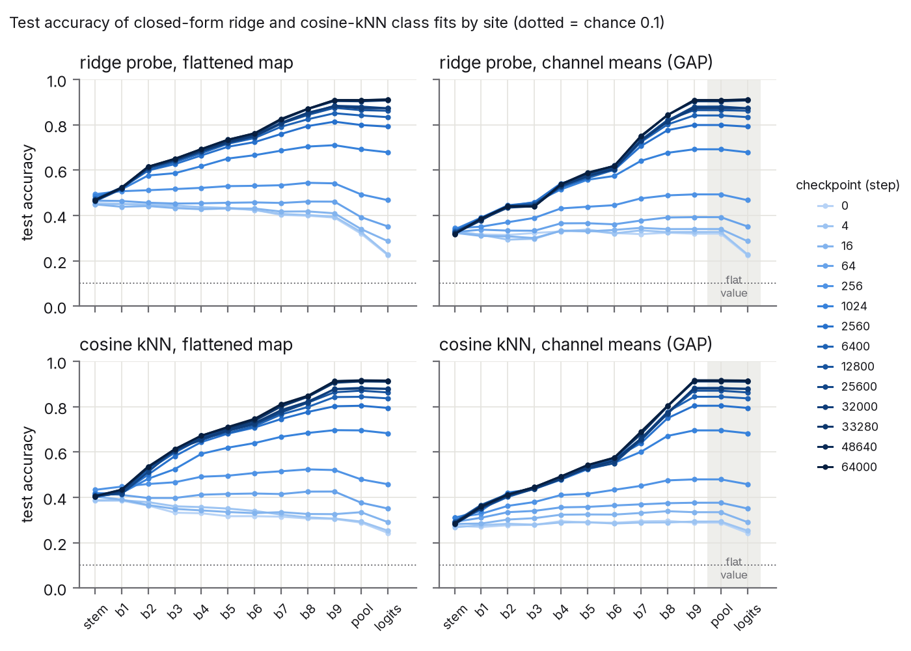
Plotted: the decodability charts above, as a static image.
Class make-up of the sets of a few blocks
Each table counts $n_{jc}$, the probe images of CIFAR class $c$ in SEBA set $j$ (rows in the explorer's set
order), with a last row for the unassigned images; each class has 200 probe images, which is
the top of the colour range. Definition: Appendix C. The make-up of layer
block b7..pool is the lead figure of the first experiment; that of b9 at $r = 2$
and of the time block b9 over all checkpoints are above, under their experiments.
Plotted: $n_{jc}$ for the single-snapshot block at site stem, $r = 4$; slider: checkpoint
(default: final); kernel rule kNN graph, k = 15.Plotted: as left, site b5.
Plotted: as above, site b9.Plotted: $n_{jc}$ for the time block at site b9 over the last four of the
8 checkpoints (steps 2,560 to 64,000), kernel rule
kNN graph, k = 15, $r = 4$. Values: $\lambda_1, \lambda_2, \lambda_3$ =
0.977, 0.952,
0.937, gap $\lambda_3 - \lambda_4$ =
0.005; retention
0.92 to 0.97; set
sizes 760, 380,
392, 318;
150 unassigned.
this block in
the explorer
Tables for the other sites and $r \in \{2, 3, 4\}$ are stored in assets/questions.json under
q_classmix.cells.<r>.<site>; every stored layer and time block is under
q_classmix.by_mode.0.
Appendix E. Reproduce
Every command that produced the data on this site, in the order they must run, with the files each one
writes and its approximate Modal cost. Commands run from explore/cifar_coherent/ in
the repo unless a block says otherwise. The last section
rebuilds the site from data that already exist; everything before it regenerates that data.
What you need
uv on the path. Every command below names its own dependencies with uv run --with ....
A Modal account for any stage marked Modal. The measurement files are not in git: they live on the Modal
volume cm-cifar-coherent (public files under /analysis/<tag>/, scratch under
/work/<tag>/, checkpoints under /runs/<run>/), and each study's
fetch command copies the public files into data/<tag>/. CIFAR-10 is read from the
read-only volume crw-modelzoo-train.
The ModelZoo source at ~/code/ModelZoo: the training and measurement images copy
~/code/ModelZoo/src into the container.
Scratch off a small /tmp: export TMPDIR=/var/tmp/cm-pipeline; mkdir -p "$TMPDIR".
Detached launches. Every Modal launch spawns a coordinator that survives the local session and
writes its call id to runs/. Wait until the matching status command prints a result (not
running) before starting the next stage: later stages read earlier stages' files from the volume.
Licence.seba.py and test_seba.py are ports of the authors' reference
implementation (gfroyland/SEBA) and are licensed GPL-3.0-or-later
accordingly.
The data tags: r20s0 legacy measurement of ResNet-20 seed 0 (layouts and probe only are still used);
r20s0b the schema_v2 measurement every chart is built from; r20s1b layouts of seed 1;
r20s0d the dot (Euclidean) kernel variant; data/kernels/ the gradient-side kernel
comparisons; r20s0c the baselines study; ../spectral_align/data the alignment study.
Local tests
CPU only, each in seconds. Each prints a final line ending in passed.
export TMPDIR=/var/tmp/cm-pipeline; mkdir -p "$TMPDIR"
export OMP_NUM_THREADS=1 OPENBLAS_NUM_THREADS=1
uv run --with torch --with numpy python test_seba.py # SEBA against the reference implementation
uv run --with torch --with numpy python test_coherent.py # planted three-group check of the construction
uv run --with torch --with numpy python test_product.py # product (composition) blocks
python3 test_provenance.py # stale cache records cannot be reused
uv run --with torch --with numpy python test_dot.py # dot-kernel identities (SPEC_DOT.md section 1)
uv run --with torch --with numpy --with scipy python test_coarse.py # coarse-graining identities and bounds
uv run --with torch --with numpy --with scipy python test_markov.py # Markov-closure measures
uv run --with modal --with torch --with numpy python test_kernels.py # GGN / NTK Gram estimands (imports kernels_modal.py)
# the full schema-v2 path on a synthetic fixture (not evidence about any network):
uv run --with torch --with numpy python schema_v2.py fixture data/_fixture
uv run --with torch --with numpy python schema_v2.py validate data/_fixture
Training (Modal, modal_train.py)
ModelZoo's resnet20/relu-seed<s> recipe re-run on an L40S with ModelZoo's own training loop
(a re-run on a different GPU, not a bit-identical copy of the zoo run). App cm-cifar-coherent-train.
uv run --with modal python modal_train.py deploy
uv run --with modal python modal_train.py launch # seed 0
uv run --with modal python modal_train.py launch --seed 1 # seed 1 (layouts only)
uv run --with modal python modal_train.py status <launch-id> # launch id printed by launch, also in runs/
Writes (volume): /runs/resnet20-relu-seed0/ and /runs/resnet20-relu-seed1/
(checkpoints/step_<step>.pt and manifest.json, the training curve).
Legacy measurement (Modal, measure.py, tag r20s0)
Must run before the schema_v2 stages: measure_v2.py launch all copies its probe and the layouts of seed 0.
App cm-cifar-coherent-measure.
uv run --with modal python measure.py deploy
uv run --with modal python measure.py launch resnet20-relu-seed0 r20s0 0,64,256,1024,2560,6400,25600,64000
uv run --with modal python measure.py status r20s0
uv run --with modal python measure.py fetch r20s0
Writes data/r20s0/: probe.npz (the 2,000 probe images, indices and labels),
umap_<step>.npy (layouts of seed 0), stats_<step>.json, kappa.json,
spec_<step>.npz (legacy operator; not used by the site).
The main measurement (Modal, measure_v2.py, tags r20s0b, r20s1b)
App cm-cifar-coherent-v2. The stage all runs extract, spectra,
comparisons and decod in turn; each can also be launched alone. The third argument is the
tag (default r20s0b).
uv run --with modal python measure_v2.py deploy
uv run --with modal python measure_v2.py launch all # wait: measure_v2.py status all
uv run --with modal python measure_v2.py launch derivatives # wait: measure_v2.py status derivatives
uv run --with modal python measure_v2.py launch validate # wait: measure_v2.py status validate
uv run --with modal python measure_v2.py launch sweep # 19 candidate rules x 15 snapshots
uv run --with modal python measure_v2.py launch prodspectra # product (composition) blocks
uv run --with modal python measure_v2.py launch specembed # spectral layout (diffusion coordinates)
uv run --with modal python measure_v2.py launch layouts # seed 1, after its training has completed
uv run --with modal python measure_v2.py launch audit # cache provenance audit (runs/provenance-final.json)
uv run --with modal python measure_v2.py fetch r20s0b
uv run --with modal python measure_v2.py fetch r20s1b
uv run --with torch --with numpy python schema_v2.py validate data/r20s0b
Writes data/r20s0b/ (file by file in the table below) and
data/r20s1b/ (umap_<step>.npy, meta.json). Scratch on the volume
under /work/r20s0b/ includes the operators operators_<step>_<site>.npy and the
centred Grams gram_<step>_<site>.npy that the coarse-graining, baselines and kernel stages read.
Coarse-graining and Markov closure (Modal, coarse_modal.py)
Specification in SPEC_COARSE.md. App cm-cifar-coherent-coarse. Reads the
r20s0b operators on the volume, so it runs after measure_v2.py launch all. One unit is one
(checkpoint, rule); pilot runs the unit at step 64,000 with kernel rule
kNN graph, k = 15 and launch the others. The Markov stage reads the coarse files, so it runs after the coarse launch has completed.
uv run --with modal python coarse_modal.py deploy
uv run --with modal python coarse_modal.py pilot
uv run --with modal python coarse_modal.py status pilot
uv run --with modal python coarse_modal.py launch
uv run --with modal python coarse_modal.py status # the launch
uv run --with modal python coarse_modal.py fetch # -> data/r20s0b/coarse/
uv run --with modal python coarse_modal.py markov-pilot
uv run --with modal python coarse_modal.py markov-launch
uv run --with modal python coarse_modal.py status markov-launch # the Markov launch
uv run --with modal python coarse_modal.py fetch-markov # -> data/r20s0b/coarse/markov_*.npz
uv run --with numpy python coarse_summary.py # first: rewrites coarse_facts.json
uv run --with numpy python markov_summary.py # second: merges its facts into coarse_facts.json
The last command of the check prints the coordinator's result when it has finished and raises
TimeoutError while it is still running. The two summaries must run in this order:
coarse_summary.py rewrites coarse_facts.json and markov_summary.py adds the
mk.* facts to it.
Dot kernel and gradient-side kernels (Modal, measure_v2.py tag r20s0d, kernels_modal.py)
Specification in SPEC_DOT.md. The tag r20s0d selects the dot kernel inside
measure_v2.py (construction.KERNEL_OF_TAG). Its extract copies the
kernel-independent files (probe, curves, decodability, per-image points, gradient Grams) from r20s0b, so
r20s0b's all and derivatives stages must have completed. No decodability or
derivative stage runs for r20s0d; its layouts stage makes dot-PC layouts of seed 0 (no seed 1).
uv run --with modal python measure_v2.py launch extract r20s0d # wait: measure_v2.py status extract r20s0d
uv run --with modal python measure_v2.py launch spectra r20s0d
uv run --with modal python measure_v2.py launch comparisons r20s0d
uv run --with modal python measure_v2.py launch prodspectra r20s0d
uv run --with modal python measure_v2.py launch specembed r20s0d
uv run --with modal python measure_v2.py launch layouts r20s0d
uv run --with modal python measure_v2.py launch validate r20s0d
uv run --with modal python measure_v2.py fetch r20s0d
Gradient-side Grams (GGN, trace NTK, loss-gradient cosine) and the cosine / dot comparisons: app
cm-cifar-coherent-kernels. The optional last argument of launch is the stage's budget in
USD; a stage refuses to fan out if its projection from the pilot exceeds it. Each pilot must finish before its
stage, which reads the pilot's timing record. Launch records accumulate in runs/kernels-modal.json.
uv run --with modal python kernels_modal.py deploy
uv run --with modal python kernels_modal.py launch pilot # wait: kernels_modal.py status pilot
uv run --with modal python kernels_modal.py launch kernels 1 # wait: kernels_modal.py status kernels
uv run --with modal python kernels_modal.py launch analysis-pilot # wait: kernels_modal.py status analysis-pilot
uv run --with modal python kernels_modal.py launch analysis 3 # wait: kernels_modal.py status analysis
uv run --with modal python kernels_modal.py fetch # -> data/kernels/compare_{single,blocks,ggn}.json
make_figures.py falls back to the committed site/figdata/r20s0_kernel.npz when
site/figdata/r20s0b_kernel.npz is absent.
Baselines study data (explore/cifar_baselines/, tag r20s0c)
Stored by the baselines study (schema in SCHEMA.md): the sources' labels and their agreement rows on
every explorer block, the null draws, stability, linear content and ablations of the representative blocks, the
random-subspace SEBA runs, the planted-benchmark summaries (NOTES_B.md) and the transfer pilot
(TRANSFER.md). Computed by the site build (site/baselines.py) with the study's own functions:
the predicted-class agreement rows, the agreement of the stored null draws with the method, the source-by-source
matrices and the snapshot-by-snapshot set agreement (200 permutations each, cached in
~/.cache/cm-site-bn/). The added data take 41.7 MB.
From explore/cifar_baselines/. measure_b.py reads the r20s0b Grams,
operators and block files on the volume. Its launch takes a hard cap and a pause threshold in USD; the
followup stage takes its own cap. Run-by-run notes: NOTES_A.md (measurement),
NOTES_B.md (planted benchmarks), NOTES_C.md (transfer pilot).
cd explore/cifar_baselines
uv run --with modal --with pytest --with torch --with numpy --with scipy --with scikit-learn --with deeptime \
pytest -q test_stats.py test_sources.py test_nulls.py test_measure_b.py test_planted.py test_transfer.py
uv run --with modal python measure_b.py deploy
uv run --with modal python measure_b.py launch all 8 6 # wait: measure_b.py status all
uv run --with modal python measure_b.py launch followup 2 # wait: measure_b.py status followup
uv run --with modal python measure_b.py fetch # -> ../cifar_coherent/data/r20s0c/
uv run --with modal --with numpy python measure_b.py validate # checks data/r20s0c against SCHEMA.md
# planted / null benchmarks (CPU fan-out, volume cm-cifar-baselines-bench)
uv run --with modal python bench_modal.py deploy
uv run --with modal python bench_modal.py launch full # prints a run id
uv run --with modal python bench_modal.py fetch <run_id> # -> out/bench/parts/<run_id>/
uv run --with numpy --with torch python bench.py summarise out/bench/parts/<run_id> # -> out/bench/summary.json
# transfer-operator pilot (volume crw-cm-transfer-results)
uv run --with modal --with numpy --with scipy python transfer_modal.py deploy
uv run --with modal --with numpy --with scipy python transfer_modal.py launch-real
uv run --with modal --with numpy --with scipy python transfer_modal.py fetch <run_id> # -> out/transfer/real/
NOTES_B.md records a partition rerun of some benchmarks after the full sweep; repeat it as
described there before summarising.
Alignment study data (explore/spectral_align/)
Protocol in SPEC.md there; ResNet-32 and ResNet-56 are trained with the ResNet-20 recipe and only the
number of blocks per stage changed (nets.py). From explore/spectral_align/:
cd explore/spectral_align
uv run --with torch --with numpy --with dtw-python --with pytest pytest test_align.py -q
uv run --with modal python train_modal.py deploy
uv run --with modal python train_modal.py launch 32 0 # likewise 32 1, 56 0, 56 1; status: train_modal.py status
uv run --with modal python measure_modal.py deploy
uv run --with modal python measure_modal.py launch pilot
# inspect the cost gate it prints; redeploy with SALIGN_TIMEOUT set to its suggested_timeout
uv run --with modal python measure_modal.py launch all
uv run --with modal python measure_modal.py status
uv run --with modal python measure_modal.py fetch # -> data/
uv run --with numpy python -I sanity.py # tensors and probe indices / labels
uv run --with numpy --with scipy --with dtw-python \
--with torch --index https://download.pytorch.org/whl/cpu --index-strategy unsafe-best-match \
python analyze.py data # -> analysis/data/ (read by the site build)
The site build (site/alignment.py) reruns nothing: when analysis/data/ is older than the
data directory it stops and prints the analyze.py command above. Data used by this build:
Measured data: explore/spectral_align/data. Data shipped to the page: of the all-pairs distance tensors, only the blocks the figures draw
(each network's site × site matrices at each checkpoint, each site's checkpoint × checkpoint matrix, and the site ×
site matrices of every pair of networks at each checkpoint and at iso-accuracy), stored as uint16, fetched per distance; the
eigenfunctions are fetched per snapshot. 69.3 MB in all, of which 52.3 MB are
eigenfunctions. Probe images: same probe images in the same order as the explorer.
Experiment generators
Each experiment in the Experiments tab has a generator
site/experiments/<id>.py that reads data/r20s0b/ (and the other local data above) and
writes only site/assets/x/<id>.json, site/assets/x/<id>.facts.json and
site/assets/fig/x_<id>_*.png; the appendix generators app_choices.py (Appendix A)
and app_measurements.py (Appendix D) write site/assets/x/app-choices.* and
site/assets/x/app-measurements.*. The ids are listed in site/content/experiments/index.json.
check_fragment.py validates each experiment's fragment, and with --appendix each appendix,
without building, against the non-experiment facts of the last full build
(site/build_inputs/facts_base.json if present, else viewer/site/d/facts.json).
for id in $(python3 -c 'import json; print(" ".join(e["id"] for e in json.load(open("site/content/experiments/index.json"))))'); do
uv run --with numpy --with scipy --with matplotlib python -I site/experiments/$id.py r20s0b || break
python3 site/check_fragment.py $id || break
done
for app in app_choices app_measurements; do
uv run --with numpy --with scipy --with matplotlib python -I site/experiments/$app.py r20s0b || break
done
for app in choices baselines method-details measurements reproduce; do
python3 site/check_fragment.py --appendix $app || break
done
Release build
Needs every local data directory above: data/r20s0b, data/r20s1b,
data/r20s0c, data/r20s0d, data/kernels, ../spectral_align/data
(with its analysis/data/) and site/assets/questions.json. --release fails on a
missing experiment fragment, an unknown fact, a missing data-src target or image, or missing alignment
data; without it the build writes placeholders instead.
uv run --with numpy --with pillow --with scipy --with scikit-learn python site/build_site.py r20s0b \
--layout-tag r20s1b --baselines r20s0c --alignment ../spectral_align/data --dot-tag r20s0d --clean --release
python3 site/check_browser.py --session release-check # renders every live figure, checks aliases
python3 -m http.server 8765 --bind 127.0.0.1 -d viewer/site # then open http://127.0.0.1:8765/
Output: viewer/site/ (the deploy root, with .nojekyll; its fact table is
viewer/site/d/facts.json). To publish, copy viewer/site/ into an empty directory, commit it
as a single orphan commit on the branch gh-pages and force-push; that branch holds only the built site.
Which step makes which file
Files in data/r20s0b/ unless a path is given. "Copied" means the stage copies the file from another
tag on the volume.
file
made by
meta.json, layer_<step>.npz, time_<site>.npz
measure_v2.py launch all (stages extract, spectra)
probe.npz, umap_<step>.npy
measure_v2.py launch all (extract, copied from r20s0, made by measure.py launch)
curves.json
measure_v2.py launch all (extract, from the training manifest.json of seed 0)
points_<step>.npz
measure_v2.py launch all (extract); per-image derivative fields added by launch derivatives
Values: the study's own estimates from worker timings and the Modal price list, quoted from the file named in the
last column; they are not invoices. They are documentation, not build-time facts.